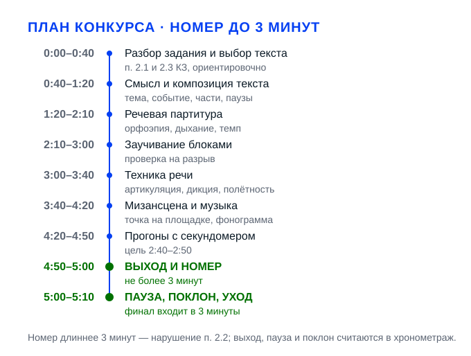
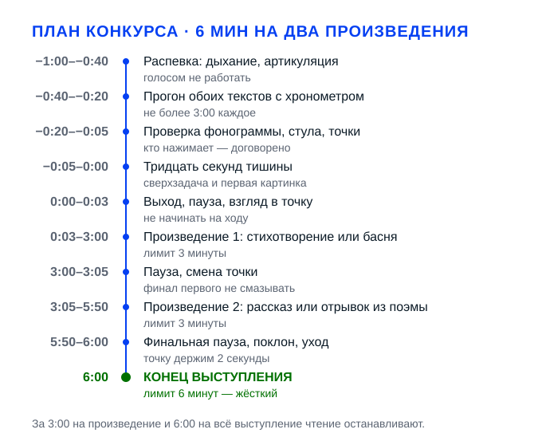
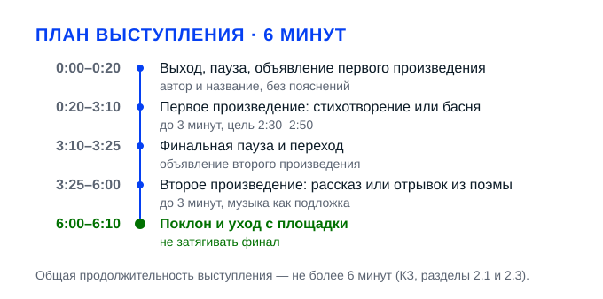

Художественное слово (ФВ)
Задания ниже — официальные файлы «Абилимпикс» (источник: abilympics-russia.ru), разложенные по категориям. Решения написаны по тексту задания, регламенту и критериям оценки; в них указано, что именно проверяет эксперт.
Школьник
14–16 лет, базовый уровень заданияВ официальном файле категории не разделены отдельными разделами — приводим задание целиком; различия по категориям смотрите в таблице модулей.
Пошаговое решение
Задание школьной категории по компетенции «Художественное слово» короткое, но плотное: нужно рассказать наизусть одно произведение — стихотворение или небольшой рассказ, в том числе логически завершённый отрывок из прозы, — и уложить весь номер вместе с выходом и поклоном в три минуты. Автор может быть классическим русским, зарубежным или современным, а требования к исполнению перечислены в пункте 2.3: грамотное исполнение, соответствие возрасту, соответствие форме, драматургия по всем законам композиции и, если берётся музыка, её грамотность и подчинённость смыслу. Балльной шкалы документ не содержит, поэтому опираться приходится на этот перечень и на рамки: одно произведение, наизусть, не более трёх минут. Из оборудования на участника выделены магнитофон, ноутбук, стул при необходимости и зал, рабочее место — два квадратных метра при проходе не менее полутора метров.

Задача 1. Разобрать задание и выбрать произведениеПункты 2.1 и 2.3 КЗ · рамки категории
До первой репетиции нужно принять два решения, которые потом уже не переиграть: какое произведение звучит со сцены и в каком виде оно укладывается в три минуты. Пункт 2.1 даёт форму и объём, пункт 2.3 — пять требований к исполнению, и выбор текста делается под них, а не под симпатию к автору. Здесь же проверяется то, из-за чего чаще всего теряют работу целиком: наизусть, одно произведение, соответствие возрасту и логическая завершённость отрывка.
Действие 1.1. Выписать рамки задания на бумагу
Шаг 1.1.1
Берём распечатку конкурсного задания и выписываем на отдельный лист четыре числа, от которых зависит вся подготовка: одно произведение, исполнение наизусть, не более трёх минут звучания, один участник на площадке. Рядом подписываем разрешённые формы — стихотворение или небольшой рассказ, включая логически завершённый отрывок из прозы, — и авторов: классических русских, зарубежных и современных. Лист крепим над столом, чтобы он был перед глазами каждый день репетиции.
Пункт 2.1 задаёт эти рамки прямо, и нарушение любой из них закрывает работу целиком, а не снижает оценку: два стихотворения вместо одного, номер на четыре минуты или чтение с листа выводят выступление за пределы школьной категории. Три минуты — это весь номер вместе с выходом, первой паузой и поклоном, поэтому запас считается не от трёх минут, а от двух сорока.
Проверьте лист вопросом: сможет ли посторонний по этой записи сказать, что звучит со сцены и сколько это длится. В строках должны стоять числа — одна вещь, три минуты, — а не слова «небольшое» и «недолго». Если требование записано приблизительно, перепишите его числом.
Частая ошибка — прочитать только строчку про три минуты и пропустить требование исполнять наизусть: участник готовит выразительное чтение с листа, а на площадке выясняется, что текст надо знать. Вторая — привезти два произведения «на выбор эксперта»: по заданию школьников одно, второе не прозвучит, а репетиции уйдут на него.
Наставник смотрит на этот лист в первые минуты консультации и по нему видит, читал ли участник задание целиком. Заодно видно, умеет ли он превращать числа из документа в план подготовки.
Шаг 1.1.2
Ниже выписываем пять требований пункта 2.3 своими словами, по одному в строку: исполнение грамотное, произведение соответствует возрасту, соответствует форме, драматургия держит все законы композиции, музыкальное сопровождение приветствуется, но должно быть грамотным и подчёркивать смысл. Напротив каждого требования оставляем место, куда позже впишем, чем именно оно закрывается в вашем тексте — например, «возраст: герой мой ровесник».
Требования перечислены в документе одной строкой, но оценивают по ним отдельно, и каждое проверяется своим способом: возраст — выбором текста, форма — тем, что стих читают как стих, композиция — разбором, музыка — её ролью. Когда напротив пункта стоит конкретный ответ, подготовка перестаёт быть «почитаю выразительно» и становится работой по пяти адресам.
Через неделю вернитесь к листу и проверьте, у каждого ли требования появилась запись. Если напротив пункта про композицию до сих пор пусто, значит, текст ещё не разобран, и репетиция пока идёт вслепую.
Типичная ошибка — свести все пять требований к одному слову «выразительно» и репетировать громкость. Тогда текст читается ровно и гладко, а эксперт отмечает, что в нём нет события и финала, и работа выглядит выученной, но не прожитой.
Эксперт держит эти пять пунктов перед собой во время выступления и отмечает по каждому, что услышал. Расхождение видно сразу: красивое чтение без разбора композиции он отметит как отдельный минус.
Шаг 1.1.3
Выписываем условия площадки из третьего и четвёртого разделов: зал для выступления, магнитофон и ноутбук по одной штуке, стул при необходимости, кулер с водой, рабочее место два квадратных метра при проходе не менее полутора метров. Отдельно отмечаем, что для слабослышащих участников предусмотрены звукоусиливающая аппаратура и индукционная система, а для слабовидящих — крупный шрифт и дополнительные источники света, и решаем, что из этого нужно вам.
От этих строк зависит, что вы вообще можете сделать со сценой: есть ли чем проиграть фонограмму, можно ли сидеть, хватит ли места для шага в сторону. Участник, который рассчитывает на проектор или на второй микрофон, узнаёт об их отсутствии в день конкурса, когда менять номер уже поздно, а два квадратных метра не дают развернуться в мизансцене.
Проверьте, что в записи есть ответ на три вопроса: чем играется музыка, где вы стоите и есть ли куда сесть. Если хотя бы один ответ — «наверное, найдётся», считайте, что его нет, и стройте номер без этого элемента.
Ошибка — планировать номер с движением по всей сцене, не прочитав про два квадратных метра и проход полтора метра. На площадке шаг в сторону упирается в кулису, участник теряет точку и начинает номер с суеты вместо паузы.
Технический эксперт сверяет заявку на оборудование с перечнем заранее и на прогоне смотрит, не просит ли участник того, чего в зале нет. Просьба о микрофоне, которого не выдали, воспринимается как неготовность.
Действие 1.2. Выбрать текст под возраст, форму и себя
Шаг 1.2.1
Берём три-четыре текста и проверяем каждый по возрасту: герой должен быть вам ровесником или чуть старше, а опыт — узнаваемым. Стихотворение берём, если в нём есть событие, а не только описание природы, и оно длиной от шестнадцати до тридцати строк; прозу — если это законченный эпизод с началом и точкой, объёмом примерно в полторы-две страницы. Читаем вслух по одному разу и отмечаем, где сбилось дыхание.
Требование соответствия возрасту в пункте 2.3 — не формальность: когда девятиклассник читает философский монолог старика, слушатель слышит не героя, а старательно изображённый возраст, и текст теряет достоверность. Стихотворение же без события не даёт драматургии, а именно её требует следующий пункт задания.
Проверьте выбранный текст тремя вопросами: понимаете ли вы каждое слово, есть ли в нём событие и хочется ли вам это говорить вслух. Если на второй вопрос ответ «нет», текст не ваш, сколько бы он ни нравился по названию.
Обычная ошибка — взять длинный классический отрывок «потому что серьёзно» и потом месяц бороться с дыханием. Другая — выбрать смешной рассказ, который не ложится в три минуты: половина текста вырезается, и от композиции остаётся пересказ.
Эксперт отмечает соответствие возрасту отдельной строкой и слышит его в первые секунды: по первым двум фразам уже понятно, говорит участник своё или изображает чужого взрослого.
Шаг 1.2.2
Проверяем текст на логическую завершённость: у отрывка из прозы должно быть своё начало и своя точка, а не обрыв на середине фразы. Читаем последний абзац отдельно — он обязан закрывать эпизод, даже если в книге дальше продолжается глава. Если текст обрывается, ищем границу на абзац раньше или позже, но обязательно на той фразе, после которой можно поставить точку.
Пункт 2.3 требует, чтобы драматургия соответствовала всем законам композиции, а композиция начинается с того, что у вещи есть финал. Оборванный отрывок оставляет зал в воздухе, и эксперт фиксирует отсутствие развязки — это самая обидная потеря, потому что лечится одним абзацем.
Прочитайте последнюю фразу вслух и замолчите. Если после молчания хочется добавить «ну и дальше там», значит, точка не поставлена. Хороший финал после паузы не требует пояснений. Если после финальной фразы в тексте остаётся «хвост» на абзац, отрежьте его и проверьте снова.
Ошибка — механически отрезать текст по объёму, на середине реплики героя. Тогда зал слышит, что рассказ оборвался, а участник начинает оправдываться темпом и громкостью, которых не хватает. Проверка простая: после последней фразы должна стоять точка, а не запятая с продолжением.
На прослушивании эксперт первым делом слушает финал: есть ли после последней фразы пауза, которую он может заполнить своим впечатлением, или участник сразу убегает в поклон.
Шаг 1.2.3
Проверяем текст на личный опыт: выписываем на полях три места, где у вас есть своё воспоминание, картинка или ощущение — запах, время года, чей-то голос. Если таких мест меньше двух, текст стоит заменить, даже если он красивый. Отмечаем эти места карандашом, потому что именно из них потом вырастут внутренние видения и живые паузы. Три-четыре таких места на номер — достаточный запас, больше не нужно, иначе внимание распыляется.
Драматургия и грамотное исполнение держатся не на технике, а на том, есть ли у чтеца своё отношение к событию. Пункт 2.3 говорит о соответствии возрасту и форме, но проверяется это на слух как достоверность: там, где участнику нечего вспомнить, голос становится ровным и одинаковым.
Проверьте, что у каждого отмеченного места есть конкретика: не «грусть», а «последний день на даче, дождь по стеклу веранды». Если формулировка абстрактная, видения не будет, и пауза получится пустой.
Часто берут текст, который нравится взрослым, но не имеет с участником ничего общего: ребёнок читает про войну или про старость технично и пусто. Эксперт слышит это как заученность и отмечает отсутствие живого отношения.
Эксперт слушает не текст, а человека: в местах, где есть личное, меняется дыхание и появляется своя интонация. По этим двум-трём вспышкам он и понимает, что произведение выбрано верно.
Действие 1.3. Проверить хронометраж и заявить текст
Шаг 1.3.1
Считаем объём под темп: спокойное чтение стиха идёт примерно восемьдесят-девяносто знаков в минуту с паузами, проза — сто десять-сто двадцать. Значит, на две минуты сорок секунд приходится около двухсот двадцати знаков стиха и трёхсот знаков прозы, то есть примерно двадцать строк или полстраницы. Считаем в выбранном тексте знаки с пробелами и записываем число рядом с названием.
Три минуты — жёсткая граница, и она включает выход, первую паузу и поклон: на сам текст остаётся две сорок, а с музыкальным сопровождением и того меньше. Счёт по знакам даёт предсказуемость, которой не даёт чтение «на глазок»: при первом же замере с секундомером выясняется, что текст длиннее на минуту.
Проверьте арифметику одним прогоном: прочитайте текст в рабочем темпе с секундомером и сравните с расчётом. Расхождение больше двадцати секунд означает, что вы читаете быстрее плана и на сцене начнёте торопиться.
Ошибка — считать, что «прочитаю быстро и уложусь». На сцене от волнения темп растёт, дыхание сбивается, и вместо выигранных секунд участник получает комканые окончания и потерю смысла. Проверяется это секундомером на прогоне, а не ощущением: волнение всегда добавляет темп.
Хронометраж эксперт замеряет по факту, от первой фразы до ухода, и в протоколе отмечает превышение. Даже пятнадцать секунд сверху он видит по секундомеру, а не по ощущению.
Шаг 1.3.2
Сокращаем текст до двух минут сорока — двух минут пятидесяти, оставляя запас в десять-двадцать секунд на паузу перед началом и на поклон. Режем целыми фразами и строфами, а не словами: убираем описательные куски, повторы и второстепенные реплики, но сохраняем завязку, поворот и финал. Каждое сокращение проговариваем вслух, чтобы услышать, не рассыпался ли ритм.
Запас нужен не из осторожности, а из арифметики: выход к точке, пауза перед первой фразой и молчание после последней вместе съедают от пятнадцати до тридцати секунд. Если текст ровно на три минуты, номер выходит за рамки задания, и пункт 2.1 нарушается формально, независимо от качества чтения.
Проверьте сокращённый текст тремя прогонами подряд: каждый должен укладываться в две сорок. Если разброс между прогонами больше пятнадцати секунд, значит, где-то осталась лишняя часть, которую вы всё время читаете по-разному.
Самая частая ошибка — резать финал, потому что он кажется длинным. В результате текст укладывается в минуты, но композиция ломается: нет развязки, и требование пункта 2.3 оказывается нарушенным ради секундомера.
Эксперт слушает, где участник начал ускорять: обычно именно там текст резали. Скомканная середина выдаёт сокращение, сделанное без учёта смысла. Отдельно он смотрит, сохранился ли финал: сокращение, съевшее развязку, слышно по отсутствию паузы.
Шаг 1.3.3
Заявляем текст наставнику до начала глубокой работы: название, автор, форма — стих или проза, объём в знаках, замеренное время и решение по музыке. Просим подтвердить, что текст проходит по возрасту и по форме, и фиксируем ответ письменно, чтобы через месяц не выяснилось, что произведение не согласовано. С этого момента текст считается закрытым и не меняется.
Согласование до работы экономит месяц: замена текста в последние две недели означает, что заново учится всё — и разбор, и партитура, и дыхание. Кроме того, наставник видит рамки категории целиком и может заметить то, что участнику кажется мелочью, например что отрывок не завершён.
Проверьте, что на руках есть запись с четырьмя данными: автор, форма, время, решение по музыке. Если решение по музыке не принято, оно ещё не принято и на репетиции — значит, номер пока не собран. Решение по музыке фиксируйте словом «да» или «нет», а не «может быть».
Ошибка — менять текст за неделю до конкурса, потому что «этот больше нравится». Выученное наизусть старое не исчезает и лезет в середину нового, а время на разбор уже потрачено. Текст, согласованный один раз, дальше не обсуждается: любые правки идут только через наставника и только до начала разбора.
Наставник сверяет заявленный текст с пунктом 2.1 и 2.3 и при расхождении говорит об этом сразу. Дальше он наблюдает, держится ли участник принятого решения или продолжает искать замену.
Задача 2. Понять текст и выстроить драматургиюПункт 2.3 КЗ · грамотное исполнение и композиция
Пункт 2.3 требует, чтобы драматургия произведения соответствовала всем законам композиции, и это единственное требование, которое нельзя выполнить громкостью и старанием. Работа идёт в три слоя: сначала смысл — о чём вещь и ради чего она говорится, потом строение — где завязка, где поворот, где точка, и только затем речь — ударения, паузы, дыхание. Текст, разобранный в таком порядке, читается как событие; текст, выученный без разбора, читается как упражнение.
Действие 2.1. Разобрать смысл: тема, событие, сверхзадача
Шаг 2.1.1
Берём лист и пишем три строки: тему одной фразой, идею одной фразой и то, что в тексте происходит, — тоже одной. Тема отвечает на вопрос «о чём», идея — «ради чего это сказано», событие — «что изменилось от первой строки к последней». Если событие сформулировать не удаётся, значит, текст описательный, и его надо либо доработать разбором, либо менять.
Без события чтение остаётся ровным, потому что чтецу нечего играть: он произносит слова, а не проходит путь. Композиция в пункте 2.3 — это не схема из учебника, а именно наличие движения, и эксперт слышит его отсутствие как монотонность, даже если дикция идеальна.
Проверьте формулировку события: она должна звучать как перемена, например «герой перестаёт бояться». Если получается «герой гуляет по осеннему парку», это не событие, а обстоятельство, и текст пока не разобран.
Частая ошибка — писать темой «любовь к родине» и на этом останавливаться. Тогда все фразы читаются с одинаковой торжественностью, а поворот, если он есть, проходит незамеченным. Тема, записанная одним словом, не даёт играть: у неё нет движения, и все строки получают одинаковый вес.
На прослушивании эксперт проверяет, слышно ли, что текст куда-то движется. Отсутствие события он отмечает как главный недостаток исполнения, потому что оно тянет за собой все остальные.
Шаг 2.1.2
Ищем в тексте конфликт и его носителей: кто с кем или с чем спорит, что мешает герою, в какой момент сопротивление становится сильнее всего. Выписываем два-три места, где напряжение растёт, и одно, где оно отпускает. Отмечаем эти места на полях значками: стрелка вверх, стрелка вниз, точка. Подписываем рядом, кто именно сопротивляется: герой сам себе, другой человек, обстоятельство или время.
Конфликт — источник дыхания номера: там, где он обостряется, чтец невольно ускоряется и повышает тон, а там, где отпускает, появляется пауза. Без этой карты текст читается одной краской, и требование драматургии выполняется формально. В тексте без конфликта выручает только смена объекта внимания: тогда напряжение создаётся тем, на что чтец смотрит.
Проверьте, что отмеченные места не идут подряд: если все три стрелки вверх стоят рядом, значит, вы отметили не рост напряжения, а просто самые громкие фразы. Второй тест — прочитать текст без отмеченных мест и сравнить: если разницы не слышно, метки поставлены формально.
Ошибка — играть конфликт внешне, криком и размахиванием. На слух это читается как истерика, а не как борьба, и зал перестаёт понимать, кто в тексте на чьей стороне. Лечится это сменой задачи: вместо «показать борьбу» ставим «переубедить одного человека в третьем ряду».
Эксперт слушает, различает ли участник голоса внутри текста: где говорит автор, где герой, где противник. Слитые голоса он отмечает как невнятность драматургии.
Шаг 2.1.3
Формулируем сверхзадачу — то, что вы хотите изменить в слушателе, — и адресата: кому именно вы это говорите, представив одного конкретного человека в зале. Записываем оба пункта на том же листе, где тема и событие. Сверхзадача формулируется глаголом: предупредить, утешить, рассмешить, заставить задуматься. Адресата записываем конкретно: не «зрители», а «мальчик лет двенадцати в третьем ряду».
Сверхзадача задаёт посыл: с ней голос летит в конец зала, без неё упирается в первые ряды. Пункт 2.3 говорит о грамотном исполнении, и грамотность здесь в том, что чтец понимает, зачем говорит, а не только что говорит. Кроме того, сверхзадача держит темп: пока она есть, участнику не нужно придумывать, с какой силой читать каждую строку.
Проверьте формулировку простым тестом: если сверхзадача звучит как «показать, что я хорошо читаю», она не работает. Рабочая формулировка всегда направлена на слушателя, а не на себя. Проверьте также, что сверхзадача укладывается в одно предложение и не требует объяснений.
Ошибка — подменять сверхзадачу настроением, например «хочу, чтобы было грустно». Настроение не даёт действия, и участник начинает изображать эмоцию лицом вместо того, чтобы вести мысль. Настроение меняется от строки к строке и тянет за собой мимику, которая на сцене выглядит преувеличенной.
Эксперт отмечает наличие контакта: смотрит ли участник в зал и есть ли ощущение, что он говорит с людьми. Взгляд в пол или в потолок читается как отсутствие задачи.
Действие 2.2. Разметить композицию: части, ударения, паузы
Шаг 2.2.1
Делим текст на части карандашом прямо в распечатке: завязка, развитие, кульминация, развязка. У стихотворения границы часто совпадают со строфами, у прозы — с абзацами, но не всегда, поэтому ищем смысловые швы. Каждой части даём короткое название, например «выход», «спор», «сдача», и подписываем его на полях. Границ должно получиться не меньше трёх и не больше пяти: на три минуты больше просто не нужно.
Названия частей — это карта, по которой строится дыхание и темп: между частями всегда есть пауза, внутри части её нет. Композиция из пункта 2.3 проверяется именно так — слышно ли, что кусок закончился и начался следующий. Если частей получается больше пяти, значит, за часть принята каждая строфа, и текст рассыпается на куски.
Проверьте разметку чтением: на каждой границе вы должны суметь остановиться на секунду, не разрушив фразу. Если остановка невозможна, граница поставлена неверно. Второй признак верной разметки — на каждой границе меняется то, на что вы смотрите внутри себя.
Ошибка — делить текст механически по строфам, не глядя на смысл. Тогда паузы встают там, где мысль продолжается, и слушатель теряет нить в середине. Проверка простая: прочитайте текст, останавливаясь на каждой границе, и послушайте, не рвётся ли мысль.
Эксперт слышит границы частей по смене интонации и по паузам. Если членение не совпадает со смыслом, он отмечает, что текст звучит как набор строк, а не как история.
Шаг 2.2.2
Расставляем логические ударения: в каждой фразе выделяем одно главное слово, максимум два, и подчёркиваем их. Проверяем правило нового понятия: ударение падает на то слово, которое вводит новую мысль, а не на то, которое стоит последним. В длинной строке сначала находим смысловой центр, потом уже смотрим на ритм. В стихах ударение иногда приходится смещать на слово раньше, чтобы не сломать ритм строки.
Ударение — это то, чем чтец показывает, что он понял текст. Когда выделено всё, не выделено ничего: слушатель слышит ровный поток и через полминуты перестаёт следить. Грамотное исполнение в пункте 2.3 начинается именно с этого. Проверяется это на слух мгновенно: слушатель либо понимает, о чём фраза, либо переспрашивает.
Проверьте фразу чтением с одним ударением: если смысл не меняется, значит, ударение стояло не там. Второй тест — прочитать вслух и спросить слушателя, какое слово он запомнил. Третий тест — прочитать фразу с ударением на другом слове и услышать, как меняется смысл.
Ошибка — ставить ударение на последнее слово каждой строки, потому что так удобнее дышать. Стих начинает звучать как считалка, а проза — как отчёт. Исправляется это чтением с карандашом: подчёркиваем смысловой центр и только потом слушаем ритм.
Эксперт слушает, совпадает ли интонационный центр с мыслью. Неверное ударение он отмечает как смысловую ошибку, а не как техническую мелочь. Он также отмечает, не теряется ли смысл в строках, где ударение падает на служебное слово.
Шаг 2.2.3
Ставим паузы двух видов: технические, где нужно добрать воздух, и психологические, где останавливается мысль. Технические помечаем одной чертой, психологические — двумя, и обязательно проверяем, что психологическая пауза не длиннее полутора секунд. В конце текста ставим отдельную длинную паузу, до трёх секунд, прежде чем уйти в поклон. Психологические паузы ставим не больше трёх на весь текст, иначе они перестают работать.
Пауза — самый сильный инструмент чтеца и самый заметный: она держит зал и подчёркивает смысл. Но пауза, взятая ради воздуха в случайном месте, рвёт фразу, а слишком длинная превращается в провал, после которого участник начинает оправдываться темпом.
Проверьте, что после каждой психологической паузы следующая фраза звучит иначе, чем предыдущая. Если интонация не меняется, пауза стоит зря и её надо убрать. Заодно замерьте длину пауз по записи: полторы секунды — это примерно два счёта про себя.
Частая ошибка — набрать пауз в каждом четверостишии, чтобы «было выразительно». Номер начинает рассыпаться на куски, и зал теряет событие, ради которого всё читается. Правило простое: пауза ставится там, где меняется мысль, а не там, где кончается строка.
Эксперт замеряет паузы на слух и отличает осмысленную от провала: после осмысленной зал молчит вместе с чтецом, после провала начинает шевелиться. Он отмечает и обратное: слишком короткие паузы, из-за которых текст звучит скороговоркой.
Действие 2.3. Сделать речевую партитуру: орфоэпия, дыхание, темп
Шаг 2.3.1
Проходим текст по орфоэпии: выписываем все слова, где можно ошибиться, и проверяем ударения по словарю, а не по памяти. Отдельно отмечаем то, что пишется не так, как звучит: «что» как «што», «его» как «ево», «конечно» как «конешно», окончания «-тся» как «ца». В стихах дополнительно сверяем рифмы, чтобы ударение не ломало ритм. Отдельно проверяем слова с двумя допустимыми вариантами и выбираем тот, что принят в современной норме.
Одна неверно поставленная ударение в слове слышна эксперту мгновенно и перекрывает всё остальное впечатление: слушатель запоминает ошибку, а не смысл. Требование грамотного исполнения в пункте 2.3 относится в первую очередь к речи, а не к эмоции. В стихах ошибка слышна ещё и потому, что ломает рифму и счёт строки.
Проверьте список по словарю вслух, слово за словом, и попросите кого-то слушать. Второй тест — записать себя и прослушать с паузой: на записи ошибка слышна отчётливее, чем в собственном исполнении. Третий способ — сверить спорные слова по орфоэпическому словарю, а не по интернету.
Самая частая ошибка — доверять привычному произношению: «звонит», «красивее», «торты» звучат неправильно именно потому, что привычны. На конкурсе это фиксируется как речевая ошибка. Проверять надо все слова, где есть сомнение, и лучше до того, как текст выучен: переучивать ударение труднее.
Эксперт слушает орфоэпию постоянно и отмечает каждую ошибку отдельно. Он же сверяет ударения в стихах, потому что сломанное ударение разрушает ритм строки.
Шаг 2.3.2
Размечаем дыхание: находим места добора воздуха и проверяем, что они стоят на смысловых границах, а не в середине фразы. Дышим диафрагмой — на вдохе расширяется живот, а не поднимаются плечи, — и набираем воздух бесшумно, через нос, коротко. В длинных периодах предусматриваем добор в два приёма, чтобы не хватало воздуха ровно до точки. Отмечаем и места, где воздуха нужно больше: длинные перечисления и строки без запятых.
Дыхание определяет, где участник соврёт: там, где воздуха не хватило, голос садится, а фраза комкается. На трёхминутном номере это особенно заметно к концу, когда запас сил уже не тот, что в начале, и правильная разметка доборов спасает финал. Кроме того, дыхание задаёт темп: на опоре речь идёт ровнее, чем на остатках воздуха.
Проверьте, что после каждого добора вы можете произнести следующую фразу целиком, не подхватывая воздух посередине. Если приходится дышать внутри фразы, разметка неверна. Второй тест — произнести весь текст по частям и посчитать, где воздуха не хватило.
Ошибка — дышать плечами и на полной груди: голос звучит зажато, а к третьей минуте появляется головокружение. Вторая — добирать воздух в случайных местах, разрывая мысль. Третья ошибка — втягивать живот на вдохе: опора пропадает, и голос начинает дрожать на длинных фразах.
Эксперт слышит дыхание по звуку и по ровности звучания. Судорожный вдох в середине фразы он отмечает как техническую ошибку, а потерю опоры — как усталость.
Шаг 2.3.3
Задаём темпо-ритм: определяем основной темп в знаках в минуту и отмечаем, где он меняется — ускоряется на нарастании, замедляется перед кульминацией и на финале. Тембр тоже разводим: там, где говорит автор, голос ровный и чуть ниже, там, где герой, — светлее и выше. Все смены помечаем на полях, чтобы не изобретать их заново на каждой репетиции. Основной темп фиксируем числом, чтобы на репетиции было с чем сравнивать.
Темпо-ритм — это то, что удерживает внимание три минуты: однообразный темп усыпляет, а рваный раздражает. Разведённые тембры дают то, что в пункте 2.3 названо законами композиции: слышно, кто говорит и где происходит поворот. Тембр, кроме того, помогает держать дикцию: на низком голосе окончания звучат отчётливее.
Проверьте по записи, слышны ли смены темпа без подсказки: если на слух номер идёт ровно, значит, разметка осталась на бумаге. Заодно замерьте, укладывается ли итоговое время в две сорок. Отметьте на записи три места, где темп должен меняться, и сверьте с разметкой на полях.
Ошибка — читать весь текст на одной ноте, добавив громкости в конце «для кульминации». Громкость без смены темпа воспринимается как крик, а не как нарастание. Лечится это разметкой: у каждого поворота ставим значок «тише и медленнее» или «быстрее и легче».
Эксперт отмечает, есть ли в номере развитие: смена темпа и тембра для него главный признак того, что чтец работает с текстом, а не воспроизводит его по памяти.
Задача 3. Выучить наизусть и натренировать речевую техникуПункт 2.1 КЗ · исполнение наизусть
По заданию школьной категории произведение рассказывается наизусть, и это первое, что проверяется на площадке: текст либо знают, либо нет, третьего не дано. Учить нужно не подряд, а блоками с проверкой на разрыв, и параллельно тренировать то, что делает речь слышимой: артикуляцию, дикцию, опору дыхания и полётность голоса без крика. Работа идёт короткими подходами по пятнадцать-двадцать минут, потому что выученное на свежую голову держится крепче, чем вбитое за один вечер.
Действие 3.1. Выучить текст блоками и закрепить
Шаг 3.1.1
Делим текст на блоки по две-четыре строки, у прозы — по одной-две фразы, и учим строго по одному блоку за подход: читаем вслух три раза, закрываем лист и повторяем дважды без подглядывания. Только после этого добавляем следующий блок, а предыдущий повторяем целиком, чтобы шов между ними схватился. За подход проходим не больше четырёх блоков. Время подхода — пятнадцать-двадцать минут, дальше внимание падает и заучивание идёт вхолостую.
Память держит смысловые куски, а не сплошной поток: блок в две-четыре строки запоминается за минуту, а страница целиком — за час и с провалами. Швы между блоками — самое слабое место на сцене, поэтому каждый новый кусок обязательно проговаривается вместе с предыдущим.
Проверьте блок, закрыв текст и произнеся его дважды подряд без запинки. Если на втором повторе появляется пауза-поиск, блок ещё не выучен, и добавлять следующий рано. Второй признак — вы можете произнести блок, одновременно выполняя простое дело, например складывая бумагу.
Ошибка — учить весь текст подряд, надеясь, что «само уляжется». При таком способе первые строки знают идеально, а середина проваливается, и именно там участник останавливается на сцене. Правильный порядок — блок за блоком с повтором предыдущего, и так до конца текста за два-три подхода.
Наставник слушает текст с середины, а не с начала: если участник уверенно начинает и вязнет в третьей части, значит, учили подряд без проверки блоков.
Шаг 3.1.2
Проверяем текст на разрыв: просим кого-то называть случайную строку или фразу, и с неё продолжаем читать дальше. Второй способ — читать блоки в обратном порядке, от последнего к первому. Третий — начинать с любого места, которое указывает слушатель, и доходить до финала без подсказок. Достаточно пяти точек из разных частей: начало, середина, кульминация и две строки перед финалом.
Сцена ломает последовательность: забытая строка выбивает из колеи именно потому, что текст выучен как цепочка, а не как карта. Проверка на разрыв делает память объёмной, и тогда провал в середине не обрывает номер, а закрывается следующей фразой. Проверка занимает пять минут и показывает, где память держится на интонации, а не на тексте.
Проверьте, что из пяти случайных точек вы стартуете без заминки. Если хотя бы одна точка требует «подойти» через начало, память ещё линейная. Если заминка случается, начинайте не с начала, а с ближайшей строки: так тренируется именно тот навык, который нужен на сцене.
Частая ошибка — проверять себя только с начала, потому что так спокойнее. На конкурсе первая же сбивка отправляет участника обратно к первой строке, и номер начинается заново при уже идущем времени. Проверяйте себя на разрыв не реже раза в неделю.
Эксперт замечает, как участник выходит из сбоя: если он продолжает с ближайшей фразы, текст выучен глубоко, если возвращается к началу — работа сделана формально.
Шаг 3.1.3
Закрепляем по интервалам: повторяем весь текст на следующий день, через два дня, через четыре и через неделю, каждый раз по два-три прогона вслух. Перед сном прочитываем один раз медленно, без интонации, только чтобы освежить последовательность. Записываем даты повторов в календарь, чтобы не пропустить четвёртый день. Если между повторами текст выветрился за два дня, интервал сокращаем до одного дня.
Забывание идёт по кривой: больше всего теряется в первые сутки и на четвёртый день, и повтор именно в эти моменты удерживает текст на месяцы. Без интервалов выученное к конкурсу выветривается, и за неделю до выступления приходится учить заново. Ещё один повтор за день до конкурса делаем только один раз и без правок.
Проверьте на четвёртый день: если текст идёт без запинки после суток молчания, он закреплён. Если сыплются отдельные слова, добавьте ещё один повтор на восьмой день. Заодно проверьте, не появились ли в тексте «удобные» замены: память любит подставлять похожие слова.
Ошибка — выучить за неделю до конкурса и не повторять до самого дня. На сцене всплывают не те слова, и участник подменяет авторский текст своими, что слышно сразу. Признак подмены простой: слово выпадает из рифмы или из ритма строки, и вы это слышите на записи.
Эксперт сверяет текст с авторским и замечает подмены: заменённое слово обычно выпадает из ритма и рифмы. Это фиксируется как неточность исполнения. Он же слушает, не пропущена ли строка: пропуск обычно не замечают сами, но слышат со стороны.
Действие 3.2. Натренировать артикуляцию, дикцию и голос
Шаг 3.2.1
Начинаем каждую репетицию с разминки на десять минут: круговые движения языком по часовой и против часовой, «лошадка» губами, надувание щёк по очереди, затем скороговорки на взрывные согласные — «бык тупогуб», «шла Саша по шоссе». Каждую скороговорку произносим трижды, ускоряясь, но не теряя согласных. Заканчиваем чтением двух строк своего текста с подчёркнутой артикуляцией.
Неработающий артикуляционный аппарат съедает окончания, и зал слышит не текст, а поток звука: в зале с плохой акустикой это особенно заметно. Разминка занимает десять минут и возвращает слышимость согласных, а вместе с ней — грамотность исполнения, о которой говорит пункт 2.3.
Проверьте разминку по ощущению: после неё язык и губы работают легче, а скороговорка идёт без спотыкания на третьем повторе. Если нет — разминка была формальной. Второй признак — после разминки пропадает ощущение вязкости во рту и легче идут длинные фразы.
Ошибка — начинать репетицию сразу с текста, «чтобы не тратить время». Первые десять минут речь вялая, и в неё закрепляется привычка глотать окончания. Разминка нужна и перед выступлением: за двадцать минут до выхода она возвращает ясность согласных.
Эксперт слышит дикцию в первых двух фразах и дальше уже не переоценивает её. Съеденные окончания он отмечает как речевую небрежность. Он отмечает и темп: слишком быстрая речь съедает согласные не хуже вялой артикуляции.
Шаг 3.2.2
Работаем над дикцией на своём тексте: выбираем пять самых трудных слов и произносим их отдельно, утрированно, по слогам, затем в фразе и только потом в строке. Особое внимание согласным на конце слова и стечениям из трёх согласных — «взгляд», «встреч», «всплеск». Следим, чтобы последний согласный звучал, а не проглатывался. По пять повторов на слово, и только потом это слово возвращается в строку.
Именно концы слов несут смысл: «стол» и «сто» на слух различаются одним согласным, и если он пропадает, слушатель теряет смысл фразы. В зале, где нет хорошей акустики, окончания — первое, что исчезает. Тренировать надо именно свои слова: в чужом тексте артикуляция работает, а в своём, где слова уже автоматические, всё смазывается.
Проверьте записью с расстояния пять-шесть метров: если на записи слышны все конечные согласные, дикция работает. Второй тест — попросить слушателя записать текст под диктовку. Третий тест — записать только согласные звуки фразы и проверить, что они слышны без гласных.
Ошибка — тренировать дикцию на чужих скороговорках и не переносить навык в свой текст. На репетиции всё чисто, а в номере те же слова снова смазаны. Ещё одна ошибка — читать громче, чтобы было слышно: громкость не возвращает согласные, а только утомляет голос.
Эксперт слушает текст, а не упражнения: чистая скороговорка при смазанном номере его не убеждает. Он отмечает именно те слова, где смысл потерялся. Отдельно он слушает концы строк, где дикция чаще всего и проваливается.
Шаг 3.2.3
Ставим полётность голоса: встаём в дальний конец помещения и читаем текст, посылая звук в противоположную стену, не повышая громкости, а опирая звук на дыхание. Проверяем, слышно ли на расстоянии десяти-пятнадцати метров. Отдельно тренируем ровность: одна и та же фраза должна звучать одинаково громко в начале и в конце номера. Повторяем трижды с расстояния в десять, пятнадцать и двадцать метров.
Зал на сто мест без микрофона требует полётности, а не крика: крик садится на связки и через минуту становится сиплым. Пункт 2.3 говорит о грамотном исполнении, и умение быть слышным в последнем ряду — его техническая основа. Полётность зависит не от силы, а от направления: звук должен идти в стену, а не в пол.
Проверьте с помощником: он стоит в дальнем конце и поднимает руку, если слышит каждое слово. Если рука опускается на середине фразы, звук не опирается на дыхание. Второй тест — читать в шумном помещении: если вас слышат поверх шума, опора работает.
Ошибка — компенсировать расстояние громкостью. К третьей минуте голос садится, финал звучит сипло, и участник сам пугается своего тембра. Вторая ошибка — говорить «в себя», опустив голову к тексту: звук уходит вниз, и зал слышит только гласные.
Эксперт сидит в зале и оценивает слышимость по факту. Тихий голос он отмечает как техническую ошибку, а крик — как потерю тембра. Он также отмечает, не меняется ли громкость к финалу: ровность звучания читается как выносливость.
Действие 3.3. Репетировать с зеркалом, записью и слушателем
Шаг 3.3.1
Репетируем перед зеркалом в полный рост: следим за тремя вещами — лицо не должно опережать текст, глаза смотрят в точку на уровне последнего ряда, корпус стоит ровно, вес на обеих ногах. Замечаем, где появляется лишняя мимика, и убираем её. Записываем на бумаге, какие места даются тяжело, чтобы вернуться к ним отдельно. Отдельно смотрим на плечи: они не должны подниматься на вдохе.
Лицо, работающее отдельно от мысли, читается как гримаса: зал видит старание, а не чувство. Зеркало нужно не для красоты, а чтобы поймать рассинхрон между словом и выражением, который эксперт замечает сразу. Второй смысл зеркала — поймать лишние движения корпуса, которые на сцене выглядят как раскачивание.
Проверьте по зеркалу: совпадает ли смена выражения с логическим ударением. Если лицо меняется на полстроки раньше, вы играете эмоцию заранее. Если не совпадает, читайте это место медленнее и следите, чтобы выражение возникало после слова, а не до него.
Ошибка — репетировать с зеркалом, глядя себе в глаза: участник начинает читать зеркалу, а не залу, и на сцене продолжает смотреть в одну точку перед собой. Лечится это сменой точки взгляда: в зеркале смотрим на своё отражение в целом, а не в глаза.
Эксперт смотрит на лицо в момент кульминации: если оно спокойно там, где текст требует движения, он отмечает несовпадение слова и выражения. Он же отмечает лишнюю мимику в паузах, где лицо должно быть спокойным.
Шаг 3.3.2
Записываем номер на телефон с расстояния трёх-четырёх метров, в полный рост, и слушаем запись дважды: первый раз целиком, отмечая, где теряется смысл, второй — с секундомером, чтобы сверить время. В записи проверяем три параметра: слышны ли окончания, не съезжает ли темп к концу, укладывается ли всё в две сорок. Телефон ставим на уровне лица, а не на пол, иначе запись исказит тембр.
Собственное исполнение кажется лучше, чем есть: слушая запись, участник слышит то, что слышит эксперт. Это единственный способ поймать ровный темп и провалы, которые в момент чтения не ощущаются. Кроме того, запись показывает, сколько на самом деле длится номер: на слух три минуты кажутся двумя.
Проверьте запись по трём отметкам: окончания слышны, темп к финалу не вырос больше чем на десятую часть, время в пределах двух сорока. Если хоть один параметр выпал, правьте именно его. Если темп к финалу вырос, значит, вы торопитесь на нарастании: замедлите последнюю треть.
Ошибка — записать один раз и не переслушивать, потому что «неприятно слышать себя». Именно в этом неприятном месте и находится ошибка, которую эксперт заметит первым. Слушайте запись с блокнотом и отмечайте время каждой ошибки, чтобы найти их на записи повторно.
Эксперт слушает номер один раз и без повторов, поэтому всё, что вы не поймали на записи, он поймает сразу и уже не переспросит. Он также замечает места, где участник говорит «в себя», и это слышно по провалу громкости.
Шаг 3.3.3
Показываем номер живому слушателю, лучше двум-трём, и просим не хвалить, а ответить на три вопроса: что происходило в тексте, где было скучно и что запомнилось. Записываем ответы дословно и правим те места, которые все назвали скучными. Прогон делаем в полную силу, как на конкурсе, без остановок и пояснений. Слушателей лучше выбрать не из числа знакомых, кто уже слышал текст.
Реакция зала — единственный честный измеритель драматургии: если слушатели не могут пересказать событие, композиция не работает. Пункт 2.3 требует, чтобы драматургия держала законы композиции, а проверяется это именно на неподготовленном слушателе. Ответы записываем своими словами, без правки.
Проверьте ответы: если два из трёх слушателей называют одно и то же скучное место, это объективная проблема, а не вкус. Если событие пересказывают по-разному, значит, его нет. Если скучное место назвал только один слушатель, это может быть его вкус, но проверьте всё равно.
Ошибка — показывать номер только близким, которые хвалят из вежливости. Тогда все провалы остаются, а участник уверен, что номер готов. Вторая ошибка — объяснять слушателям замысел до прогона: после пояснений они слышат не текст, а вашу идею.
Эксперт смотрит на реакцию зала краем глаза: там, где зал перестаёт дышать вместе с чтецом, он отмечает потерю контакта, даже если текст звучит правильно.
Задача 4. Собрать номер: мизансцена, музыка и прогоныПункт 2.3 КЗ · форма, музыка, композиция
К этому моменту есть выученный текст, разобранный смысл и натренированная речь, но номера ещё нет: есть части. Номер собирается из поведения в пространстве — где вы стоите на двух квадратных метрах, куда смотрите, как выходите и как уходите, — из решения по музыке, которое в пункте 2.3 названо приветствуемым, но требующим грамотности, и из прогонов, где всё это складывается в один отрезок длиной не более трёх минут. Здесь же готовится план на сбой: забытая строка, не пошедшая фонограмма, шум в зале.
Действие 4.1. Выстроить мизансцену и поведение на площадке
Шаг 4.1.1
Выбираем точку на площадке: центр, но чуть ближе к залу, чем кажется правильным, и в полутора метрах от кулисы, чтобы шаг в сторону не уводил за край. Ставим ноги на ширине плеч, вес распределяем на обе, руки свободны вдоль корпуса. Отмеряем расстояние до первого ряда и запоминаем точку по плитке или по линии на полу, а не по ощущению. Стул, если он нужен, ставим на полшага позади точки и проверяем, не скрипит ли он.
Пункт 2.3 говорит о соответствии формы, и форма номера начинается с того, что участник стоит там, где его видно и слышно. Точка, найденная на репетиции в пустом зале, в день конкурса съезжает: сцена кажется меньше, и участник отходит назад, теряя полётность голоса.
Проверьте точку с последнего ряда: попросите помощника сесть в конец зала и показать рукой, видно ли лицо. Если видно только силуэт, шагните вперёд на полметра. Второй тест — попросить помощника послушать оттуда же: слышно ли окончания слов.
Ошибка — стоять вплотную к кулисе, потому что там «спокойнее». Голос уходит в боковой занавес, половина зала слышит текст хуже, а эксперт отмечает потерю контакта. Лечится это меткой на полу: кусок малярного скотча на репетиции, запомненная линия на сцене.
Эксперт оценивает, держит ли участник площадку: метания по сцене и стояние в углу он отмечает как невыстроенную мизансцену. Отдельно он смотрит, не переступает ли участник с ноги на ногу: это читается как неуверенность.
Шаг 4.1.2
Отбираем движения: оставляем не больше трёх-четырёх жестов на весь номер, и каждый привязываем к конкретной фразе — на слове «ветер» рука идёт в сторону, на слове «тишина» замирает. Всё остальное убираем, включая ходьбу по площадке. Проверяем, что жест идёт после слова, а не вместо него, и не перекрывает лицо. Каждый жест репетируем отдельно, пока он не станет точным и коротким.
Жест, поставленный на каждую строку, превращает чтение в пантомиму, и текст теряется за руками. Три точных жеста работают сильнее двадцати случайных, потому что каждый из них подчёркивает смысл, а смысл — то, что оценивают по пункту 2.3. Лишние движения, кроме того, сбивают дыхание: на жесте уходит воздух, нужный фразе.
Проверьте по записи: если жест можно убрать и смысл не пострадает, он лишний. Второй признак лишнего — движение, которое повторяется дважды в одинаковой форме. Третий признак лишнего — жест, после которого рука не знает, куда деться.
Ошибка — репетировать перед зеркалом с размашистыми жестами: в маленьком помещении они кажутся уместными, а на сцене выглядят как суета, отвлекающая от текста. Второй провал — жест в зал ладонью, который читается как остановка движения.
Эксперт смотрит на совпадение жеста и слова: жест, идущий раньше текста, читается как заготовка, а не как реакция. Он отмечает и амплитуду: размашистый жест на маленькой площадке выглядит как суета.
Шаг 4.1.3
Ставим вход и выход: из кулисы выходим спокойным шагом, доходим до точки, останавливаемся, делаем паузу в две-три секунды, смотрим в зал и только потом начинаем первую фразу. В финале после последнего слова держим паузу до трёх секунд, затем короткий поклон кивком и уходим тем же шагом, не оглядываясь. Всё это проговариваем вслух с секундомером. Поклон — кивок, а не поясной: на маленькой площадке глубокий поклон читается как извинение.
Выход и пауза перед началом — единственное время, когда зал настраивается на вас; если начать на ходу, первая фраза уйдёт в шум. Три минуты включают и выход, и поклон, поэтому эти двадцать секунд нужно заранее вписать в хронометраж, а не обнаружить на сцене.
Проверьте вход по секундомеру: от первого шага из кулисы до первой фразы должно пройти не больше восьми-десяти секунд. Если больше, зал начинает скучать ещё до текста. Второй замер — от последнего слова до выхода из кулисы: не больше семи секунд.
Ошибка — начинать говорить, ещё идя к точке: половина первой фразы теряется, а участник потом весь номер догоняет собственный темп. Вторая — убегать сразу после последнего слова, обрывая паузу, в которой живёт финал.
Эксперт фиксирует границы номера по выходу и уходу и замеряет время именно так. Убегание после финала он отмечает как отсутствие точки. Он также смотрит, не оглядывается ли участник, уходя: оглядка читается как сомнение в финале.
Действие 4.2. Решить вопрос музыкального сопровождения
Шаг 4.2.1
Принимаем решение по музыке исходя из текста: если в нём есть место, где звук подчёркивает смысл — нарастание перед кульминацией или тишина после финала, — сопровождение берём; если музыка нужна только чтобы закрыть тишину, отказываемся. Проверяем выбранный фрагмент на слух вместе с чтением: он не должен спорить с темпом речи и не должен иметь вокальной партии на русском.
Пункт 2.3 разрешает музыку, но требует, чтобы она была грамотной и подчёркивала смысл. Фонограмма с чужим текстом заставляет зал слушать песню вместо стиха, а быстрый ритм под медленное чтение создаёт ощущение рассинхрона. Правило простое: музыка нужна там, где она несёт то, чего не может нести голос.
Проверьте фрагмент, прочитав текст под него вслух: если приходится подстраиваться под ритм музыки, а не наоборот, фрагмент не подходит. Хорошая подложка не мешает дышать. Второй тест — выключить музыку и прочитать так же: если стало лучше, сопровождение лишнее.
Ошибка — брать известную мелодию, потому что она нравится. Зал узнаёт песню и начинает ждать припева, а текст превращается в фон, и смысл теряется. Ещё одна ошибка — включать музыку на весь номер: она перекрывает паузы, и психологические остановки пропадают.
Эксперт слушает, помогает ли музыка или мешает. Навязчивое сопровождение он отмечает как нарушение требования о грамотной музыке, даже если она красива.
Шаг 4.2.2
Готовим фонограмму технически: сохраняем файл в mp3 или wav с коротким латинским именем без пробелов, кладём на рабочий стол ноутбука и на флешку вторым экземпляром. Обрезаем тишину в начале до полусекунды и выставляем громкость на уровне, при котором голос слышен поверх музыки. Записываем на бумажке, в какой момент включать и в какой выключать. Проверяем, что файл открывается с первого нажатия, без поиска папки.
В зале выделены магнитофон и ноутбук по одной штуке, и второго шанса найти файл не будет: организаторы включают то, что дали. Долгая тишина в начале сбивает выход, а громкая музыка заставляет чтеца перекрикивать её, что слышно как напряжение. Носитель лучше продублировать на телефоне, но не как основной.
Проверьте файл на чужом устройстве: откройте его на ноутбуке, который не ваш, и убедитесь, что он играется и что громкость достаточная. Заодно проверьте, что обрезка не съела первую ноту. Заодно проверьте, что громкость выставляется до старта, а не во время чтения.
Ошибка — принести музыку только на телефоне или в облаке: в зале может не быть ни разъёма, ни интернета. Вторая — файл с русским названием, который на чужой системе открывается с ошибкой. Третья ошибка — фонограмма с длинным вступлением: пока она играет, участник стоит и теряет темп.
Технический эксперт проверяет носитель заранее и отмечает, готов ли участник к воспроизведению. Просьба «найдите мой файл в переписке» воспринимается как неподготовленность.
Шаг 4.2.3
Репетируем с оператором: договариваемся, что человек за ноутбуком включает музыку ровно на вашем кивке — поднятая рука или слово перед выходом, — и выключает на последней фразе. Прогоняем связку трижды, включая случай, когда музыка началась на две секунды позже. Фиксируем договорённость письменно: где стоять, на что смотреть, что нажимать. Кивок репетируем отдельно, чтобы он был заметен из-за ноутбука.
Сбой в музыке — самый частый технический провал номера, и он ломает композицию: чтец начинает ждать звука и теряет событие. Договорённый кивок и три прогона снимают зависимость от случайности, а пункт 2.3 требует именно грамотного сопровождения. Оператору полезно дать послушать текст заранее, чтобы он знал, где финал.
Проверьте связку на прогоне с задержкой: если номер продолжается без сбоя и текст не сбивается, договорённость работает. Если участник замирает и ждёт — нужен ещё один прогон. Второй прогон — с выключением музыки на середине: номер должен дойти до финала.
Ошибка — договариваться словами «включишь, когда я начну», без точного сигнала. Оператор включаёт на полстроки позже, и первая фраза звучит в тишине, а вторая — уже под музыку. Ещё одна ошибка — просить оператора сделать потише, когда музыка уже играет.
Эксперт замечает, идёт ли номер независимо от техники: чтец, который ждёт звука, теряет темп и событие, и это видно без всяких объяснений. Он отмечает и то, смотрит ли участник на оператора во время номера: взгляд в сторону рвёт контакт с залом.
Действие 4.3. Провести прогоны и подготовить план на сбой
Шаг 4.3.1
Гоняем номер целиком с секундомером, от выхода из кулисы до ухода, три раза подряд с перерывом в десять минут. Записываем каждое время и смотрим разброс: он должен быть в пределах десяти секунд. Если разброс больше, ищем место, где темп гуляет, и отдельно прогоняем только его. Три прогона идут с перерывом: сразу подряд они показывают не номер, а усталость.
Три прогона подряд показывают то, чего не показывает один: где кончается дыхание и где темп начинает съезжать. Разброс в двадцать-тридцать секунд означает, что номер держится на настроении, а на конкурсе настроение будет другим. Стабильное время — признак того, что номер выстроен, а не сыгран на настроении.
Проверьте таблицу времён: три значения должны лежать между двумя двадцатью пятью и двумя пятьюдесятью. Если одно выбивается, прогон шёл в другом темпе, и это надо выяснить до сцены. Если все три значения выросли, значит, вы устали: на конкурсе будет то же самое.
Ошибка — считать номер готовым после одного удачного прогона. Второй и третий обычно длиннее, а на конкурсе участник читает четвёртый по счёту и выходит за три минуты. Второй прогон обычно длиннее на десять-пятнадцать секунд, и это нормально: главное, чтобы не рос третий.
Эксперт замеряет время по факту и сравнивает с регламентом. Уверенное владение хронометражом видно по финалу: участник не ускоряется в последней трети.
Шаг 4.3.2
Делаем прогон в настоящем зале, на той площадке, где будет конкурс, или на похожей: с тем же расстоянием до последнего ряда, с тем же светом, стоя, а не сидя. Просим человека посидеть в дальнем конце и проверить слышимость. Отмечаем, как звучит голос в новом помещении: где появляется эхо, где слова сливаются. Заодно проверяем, слышно ли первое слово после паузы.
Акустика меняет всё: в классе голос кажется громким, а в зале с мягкими креслами и ковром уходит в тишину. Пункт 2.3 требует грамотного исполнения, а слышимость — его первое условие, и проверять её надо там, где будет зал. В зале с высоким потолком звук уходит вверх, и участнику кажется, что он говорит тихо.
Проверьте с дальнего ряда: слышны ли окончания слов и не теряется ли смысл фраз. Если помощник переспрашивает хотя бы раз, добавьте опоры дыхания, а не громкости. Второй тест — попросить помощника записать номер с дальнего ряда и послушать запись.
Ошибка — репетировать только в маленькой комнате и впервые выйти в зал на конкурсе. Голос звучит непривычно, участник начинает форсировать, и тембр ломается в первой же трети. Ещё одна ошибка — менять текст под акустику зала за день до конкурса.
Эксперт сидит в зале и слушает в тех же условиях, что и остальные. Всё, что не проверено в зале, он слышит как ошибку впервые. Он слышит разницу между форсировкой и опорой: первая даёт сиплый тембр, вторая — ровный звук.
Шаг 4.3.3
Готовим план на три сбоя: забытая строка, не пошедшая музыка, шум в зале. Для забытой строки заранее выбираем фразу-стык, с которой можно продолжить, и учим её отдельно. При сбое музыки решаем читать без неё до конца. При шуме делаем паузу и продолжаем с того же места, не повышая голос. Каждый сценарий прогоняем по одному разу. План записываем на карточку и держим при себе до выхода.
Номер, у которого есть план на сбой, не рассыпается: зал видит продолжение, а не панику. Пункт 2.3 говорит о композиции, и композиция сохраняется именно тогда, когда участник не начинает заново, а идёт дальше по тексту. Кроме того, готовый план снимает страх: участник знает, что делать, и не тратит силы на панику.
Проверьте прогоном: попросите помощника выключить музыку на середине и посмотрите, доходит ли номер до финала без остановки. Если да, план работает. Второй сценарий — шум в зале: попросите помощника громко кашлянуть в середине и посмотрите, удержите ли паузу.
Ошибка — надеяться, что сбоя не будет, и не готовить замену. Первая же заминка отправляет участника к началу текста, время тратится, и номер выходит за три минуты. Ещё одна ошибка — извиняться вслух, если сбился: зал не знает текста и часто не замечает сбоя.
Эксперт отмечает, как участник ведёт себя при сбое: пауза и продолжение читаются как опыт, возврат к началу — как неготовность. Он также смотрит, не ускоряется ли участник после сбоя: спешка читается как желание скорее закончить.
Задача 5. Выступить и завершить конкурсный деньПункты 2.2 и 5.1 КЗ · номер не более 3 минут
В день конкурса всё решают три минуты, но приходят к ним через регистрацию, инструктаж по охране труда и проверку техники на месте. Пункт 5.1 требует пройти инструктаж и сообщать техническому эксперту о любой неисправности, а пункт 2.2 ограничивает номер тремя минутами, и это ограничение действует на всё: на выход, на паузу перед первой фразой, на поклон. Спокойная и точная работа в этот день сохраняет то, что набрано месяцами репетиций, а растерянность съедает быстрее любой речевой ошибки.
Действие 5.1. Пройти день конкурса до выхода на сцену
Шаг 5.1.1
Приходим заранее, проходим регистрацию и инструктаж по охране труда, слушаем, где выход, где кулер с водой и где аптечка. Уточняем у технического эксперта, чем будут проигрывать фонограмму и как подать сигнал о готовности. Если обнаружилась неисправность оборудования — сразу говорим об этом техническому эксперту, а не пытаемся починить сами. Уточняем и порядок выступлений: когда именно вас позовут и сколько времени даётся на подготовку.
Пункт 5.1 прямо требует инструктажа и немедленного сообщения о неисправностях, и это не формальность: попытка самостоятельно переставить ноутбук или колонку в чужом зале заканчивается либо травмой, либо срывом очереди. Заодно вы получаете ответы на вопросы, которые иначе решались бы в спешке перед выходом.
Проверьте, что знаете три вещи: где стоит вода, кто отвечает за звук и в какой момент вас позовут. Если хотя бы один ответ не получен, найдите технического эксперта и спросите. Заодно проверьте, что знаете, куда идти после выступления и где оставить вещи.
Ошибка — приехать к самому выходу и пропустить инструктаж: без него к выполнению задания не допускают. Вторая — молча ждать, пока кто-то заметит, что ноутбук не читает файл. Третья ошибка — оставить телефон и воду в зале, а потом искать их перед выходом.
Технический эксперт отмечает, прошёл ли участник инструктаж и обращался ли по поводу оборудования. Эти два факта фиксируются до начала выступления. Он же фиксирует, обращался ли участник с вопросами по организации.
Шаг 5.1.2
Держим голосовой режим: за час до выхода не разговариваем громко, не кричим в коридоре и не поём в полный голос. Пьём воду комнатной температуры из кулера маленькими глотками, а не залпом. За двадцать минут делаем короткую разминку — три скороговорки, чтение двух строк своего текста шёпотом с чёткой артикуляцией. Горло держим в тепле: шарф или высокий воротник, если в зале прохладно.
Голос садится не от чтения, а от крика в шумном коридоре и от холодной воды: связки теряют эластичность, и к выходу тембр становится сиплым. Пункт 2.3 требует грамотного исполнения, и сохранённый голос — половина этого требования. Вода помогает связкам увлажниться, а холодная, наоборот, сужает сосуды.
Проверьте голос перед выходом: скажите одну фразу вполголоса и послушайте, нет ли хрипа и не садится ли звук. Если есть — не разговаривайте до выхода вообще. Второй признак — после разминки пропадает ощущение сухости, а голос звучит легче, чем в коридоре.
Ошибка — обсуждать номер с другими участниками в коридоре на повышенных тонах. Через полчаса голос звучит ниже и глуше, а восстановить его за десять минут невозможно. Ещё одна ошибка — пить сладкий чай или газировку перед выходом: они сушат слизистую.
Эксперт слышит состояние голоса с первой фразы. Сиплый тембр он отметит как техническую потерю, даже если текст и смысл в порядке. Он также отмечает, как участник держится до выхода: суета в коридоре видна и в зале.
Шаг 5.1.3
Проверяем технику на месте за пятнадцать минут до выхода: даём оператору файл, слушаем начало фонограммы в зале, выставляем громкость так, чтобы голос шёл поверх музыки. Просим включить и выключить звук на нужных отметках. Если стул нужен по заданию, ставим его заранее и проверяем, не скрипит ли он. Договариваемся, кто именно нажимает кнопку и что делает, если файл не открылся.
То, что работало в репетиционном зале, в конкурсном может звучать иначе: другая колонка, другая громкость, другой ноутбук. Проверка на месте занимает пять минут и снимает главный риск номера — зависимость от чужой техники. Ещё один смысл проверки — услышать зал: в нём может быть гул от вентиляции, который съедает тихие места.
Проверьте три вещи: файл играется с первого нажатия, голос слышен поверх музыки, сигнал включения понятен оператору. Если хоть одно не подтверждено, повторите проверку, пока не подтвердится. Заодно убедитесь, что стул не мешает проходу шириной полтора метра.
Ошибка — отдать флешку и уйти готовиться, не послушав, как звучит зал. Возвращение выясняет, что громкость выставлена на максимум и первая фраза тонет. Вторая ошибка — проверять звук за минуту до выхода, когда зал уже занят и включить фонограмму не дадут.
Эксперт наблюдает подготовку площадки: участник, который проверил звук и договорился с оператором, выглядит собранным ещё до первой фразы. Он отмечает и то, поблагодарил ли участник оператора: это часть культуры работы на площадке.
Действие 5.2. Исполнить номер в три минуты
Шаг 5.2.1
Выходим на объявление, спокойным шагом, доходим до своей точки, ставим ноги, опускаем руки и делаем паузу в две-три секунды, глядя в зал на уровне последнего ряда. Набираем воздух диафрагмой и начинаем первую фразу ровно, не громче, чем собираетесь продолжать. Если нужна музыка, киваем оператору на этом вдохе. Первую фразу произносим тише, чем кажется нужным: зал уже слушает.
Пауза перед началом отделяет выход от текста и даёт залу переключиться, а первый вдох задаёт опору на весь номер. Начатая на ходу или на неполном вдохе первая фраза звучит выше и тише, и участник весь номер выправляет дыхание. Если начать громко, дальше некуда расти, и кульминация теряет силу.
Проверьте по записи: слышно ли, что первая фраза начинается после паузы и на одном уровне громкости со второй. Если первая тише, вдох был коротким. Второй тест — записать начало на телефон с дальнего ряда: слышно ли первое слово без напряжения.
Ошибка — начинать сразу, как только дошли до точки, чтобы «не тянуть время». Зал ещё шуршит, первые слова теряются, а участник делает вывод, что его не слушают. Вторая ошибка — начинать с вопросом в голосе, будто прося разрешения: зал слышит неуверенность.
Эксперт отмечает момент начала: пауза перед первой фразой читается как владение собой, а торопливый старт — как волнение. Он также смотрит на первый вдох: поднятые плечи выдают волнение раньше первой фразы.
Шаг 5.2.2
Ведём номер по разметке: держим взгляд в зале, переводя его на смысловых переходах, а не бегая по лицам. На нарастании чуть ускоряемся и добавляем опоры, перед кульминацией замедляемся, а в психологических паузах останавливаемся и молчим вместе с залом. Ошибку, если она случилась, не показываем лицом — продолжаем с ближайшей фразы. Дышим по разметке, не подхватывая воздух в середине фразы.
Контакт с залом — это не взгляд в глаза каждому, а направленность мысли: пока она есть, слушатель идёт за чтецом. Пункт 2.3 требует композиции, и композиция держится на смене темпа, а не на громкости, которая к середине номера уже не растёт. Взгляд при этом не должен бегать: три-четыре точки на зал достаточно.
Проверьте по записи, слышны ли смены темпа и есть ли паузы в отмеченных местах. Если номер идёт ровно от начала до конца, разметка не сработала. Второй тест — попросить слушателя отметить, где он перестал следить за мыслью: это место и есть провал.
Ошибка — реагировать на сбой лицом: закусить губу, вздохнуть, посмотреть в кулису. Зал читает это как провал, хотя текст продолжается, и впечатление портится сильнее, чем от самой ошибки. Ещё одна ошибка — смотреть в одну точку всё выступление: зал чувствует, что его не видят.
Эксперт смотрит на поведение в середине номера: сохранённый темп и взгляд в зал он отмечает как устойчивость, а поиск глазами подсказки — как потерю опоры.
Шаг 5.2.3
Доводим финал: последнюю фразу произносим медленнее, ставим точку и держим паузу до трёх секунд, не заполняя её ни словом, ни вздохом. Затем короткий поклон кивком, шаг назад и спокойный уход в ту же кулису, из которой вышли. Общее время от выхода до ухода — не более трёх минут, лучше две сорок — две пятьдесят. Руки после последнего слова опускаем спокойно, не пряча их в карманы.
Три минуты в пункте 2.2 — граница всего номера, а не текста, поэтому финальная пауза и поклон входят в неё и должны быть отрепетированы как часть. Пауза после последнего слова — то место, где зал успевает понять, что произошло, и именно она оставляет впечатление.
Проверьте финал по секундомеру: от последнего слова до ухода должно пройти не больше шести-семи секунд. Если больше, пауза затянута и читается как растерянность. Второй замер — общее время от выхода до ухода: должно быть меньше трёх минут.
Ошибка — заканчивать на бегу, кланяться на ходу и говорить «спасибо» в зал. Благодарность после текста разрушает финал и переводит номер в разряд самодеятельности. Ещё одна ошибка — добавлять после финала «вот и всё» или пояснение: текст закончился, добавить нечего.
Эксперт фиксирует время ухода и смотрит на финал: точка, пауза и спокойный уход читаются как завершённость, а суета после последней фразы — как несобранность.
Действие 5.3. Завершить конкурс и сохранить результат
Шаг 5.3.1
После выступления забираем свой носитель с фонограммой, возвращаем стул на место, если брали его, и уточняем у наставника, нужно ли остаться на разбор. Записываем в блокнот три вещи, которые заметили сами: где сбилось дыхание, где зал перестал слушать, уложились ли в хронометраж. Эти заметки понадобятся при следующей подготовке. Спрашиваем наставника и о том, что он заметил со стороны: его взгляд точнее.
Впечатление стирается за час, а конкретные места помнятся только сразу после выхода: через день останется «было нормально» без деталей. Разбор по горячему следу даёт то, что не даёт просмотр записи, — собственное ощущение сбоя. Кроме того, разбор сразу после выхода помогает снять волнение: оно уходит, когда названо словами.
Проверьте, что в блокноте есть три конкретные записи с указанием места в тексте, а не общие слова. Если запись звучит как «середина была слабой», она бесполезна. Второй признак полезной записи — в ней указано время: на какой минуте случился сбой.
Ошибка — уйти сразу после номера, не забрав флешку и не поговорив с наставником. Носитель теряется, разбор не происходит, и следующая подготовка начинается с нуля. Вторая ошибка — сразу обсуждать выступление с другими участниками: чужие оценки сбивают свою.
Наставник разбирает выступление сразу после выхода и по заметкам участника видит, насколько он слышит себя сам. Это умение ценится не меньше техники. Он же проверяет, совпадает ли самооценка участника с тем, что видел зал.
Шаг 5.3.2
Сохраняем голос после выступления: не разговариваем громко, не идём в шумное место, пьём воду комнатной температуры. Записываем итог в дневник подготовки: дата, текст, время, что удалось и что нет. Через день прослушиваем запись номера, если она есть, и отмечаем два места, которые начнём править в следующий раз. Заодно убираем из блокнота черновики, чтобы осталась одна страница с выводами.
Голос после форсированного чтения в зале требует восстановления, а простуда на следующий день — частая плата за разговоры в шумном коридоре. Дневник же превращает один конкурс в опыт: через год видно, какие ошибки повторяются из раза в раз. В дневнике же видно, какие ошибки повторяются, а какие ушли.
Проверьте через день, что голос звучит как обычно: если появился хрип, восстановление займёт ещё два-три дня. Заодно проверьте, что в дневнике есть два конкретных пункта на исправление. Если хрип держится дольше трёх дней, стоит показаться врачу, а не ждать.
Ошибка — считать конкурс законченным на поклоне и не фиксировать результат. Тогда через год повторяется та же история с хронометражем и тем же провалом в середине. Вторая ошибка — не записывать время номера: без цифры невозможно понять, растёт оно от конкурса к конкурсу или нет.
Эксперт и наставник обсуждают итог после конкурса и смотрят, сделаны ли выводы. Способность назвать свои ошибки точно ценится выше, чем общее «мне понравилось».
Студент
учащиеся колледжей и техникумовВ официальном файле категории не разделены отдельными разделами — приводим задание целиком; различия по категориям смотрите в таблице модулей.
Пошаговое решение
Задание для студентов — прочитать наизусть два произведения, каждое не дольше трёх минут, а всё выступление не дольше шести: первое — стихотворение или басня, второе — небольшой рассказ или логически завершённый отрывок из поэмы. Авторы допускаются любые, от классиков до современников, но текст должен соответствовать возрасту, а драматургия — законам композиции. Музыкальное сопровождение приветствуется, если оно грамотное и подчёркивает смысл. Отдельных модулей с баллами в этом задании нет: оценивают грамотное исполнение, соответствие форме и возрасту, выстроенную композицию и работу с сопровождением. Поэтому решение ниже идёт от выбора текста через разбор и голос к сцене и лимиту времени — в том порядке, в котором номер действительно собирается.

Задача 1. Разобрать задание и выбрать два произведенияЗадание · 6 минут на два произведения · этап 1 из 5
До конкурса остаётся несколько недель, и всё это время уходит на два дела: понять, что именно требуют, и найти тексты, которые вы сможете держать наизусть шесть минут. Ошибка на этом этапе не исправляется на сцене: если форма не та или объём не влезает в лимит, дальше можно репетировать сколько угодно — номер всё равно не сложится. Поэтому первая задача самая скучная и самая важная: выписать условия на бумагу, отобрать по три-четыре варианта на каждое произведение и проверить каждый секундомером.
Действие 1.1. Разобрать условия задания
Шаг 1.1.1
Читаем конкурсное задание целиком, а не по диагонали, и выписываем на отдельный лист то, что нельзя нарушить: два произведения, каждое не дольше трёх минут, всё выступление не дольше шести минут, оба текста исполняются наизусть. Ниже выписываем формы: первое произведение — стихотворение или басня, второе — небольшой рассказ или логически завершённый отрывок из поэмы. Лист вешаем там, где занимаетесь, чтобы не сверяться с памятью за день до конкурса и не искать в спешке замену.
В этом задании нет модулей с баллами — оценка идёт по пунктам «выполняемой работы», и первый из них — грамотное исполнение произведений нужной формы. Если вы привезёте два стихотворения, вы останетесь внутри одного чтения задания и вне второго: в разделе о последовательности прямо названа пара «стихотворение или басня плюс рассказ или отрывок из поэмы». Сверка на бумаге снимает риск обнаружить несоответствие на жеребьёвке, когда менять нечего.
Закройте задание и перескажите условия вслух за тридцать секунд: сколько произведений, по скольку минут каждое, сколько всего, что именно по форме, где и как исполняется. Если сбиваетесь на минутах или на форме — перечитайте раздел о структуре задания и перепишите лист заново, своими словами, а не копией абзаца.
Частая ошибка — запомнить только «два произведения по три минуты» и забыть про форму: на конкурс привозят два стихотворения, и второе приходится менять в последний вечер. Вторая — считать, что три минуты даются на каждое произведение, а шесть — это «сколько получится»: лимит общий, и он жёсткий.
Эксперт сверяет форму и хронометраж до начала выступления и уточняет у участника, что именно он читает. Несоответствие формы замечают раньше, чем прозвучит первая строка.
Шаг 1.1.2
Отдельно проверяем возрастную рамку и завершённость. Задание требует, чтобы произведение соответствовало возрасту участника, а отрывок из поэмы был логически завершённым, то есть имел собственный финал, а не обрывался на полуслове. Читаем выбранный отрывок и отвечаем себе: понятно ли, чем он кончился, если не знать поэмы целиком. Авторы допускаются любые — и русские, и зарубежные, и современные, так что ограничение здесь только одно: текст должен быть вам по возрасту и по опыту.
Возрастное соответствие — не формальность: студенту редко удаётся честно сыграть то, что написано от лица ребёнка или старика, и зал это слышит как натяжку. Логическая завершённость важна ещё и потому, что номер из двух произведений оценивают как целое: отрывок без финала оставляет слушателя в воздухе, и дальше второе произведение воспринимается как продолжение предыдущего.
Перескажите отрывок своими словами в трёх предложениях: кто, что и чем кончилось. Если третьего предложения нет — отрывок не завершён. И проверьте второе: назовите, почему этот текст про ваш возраст, а не про возраст вашей бабушки или вашего младшего брата.
Типичная ошибка — взять первый попавшийся отрывок из любимой поэмы, который начинается эффектно, а кончается на середине сцены: слушатель ждёт развязки, не получает её и переносит это ожидание на второе произведение. Вторая — взять текст «на вырост», который вам пока не по опыту.
Эксперт слушает, ложится ли текст на возраст, и отдельно отмечает, есть ли у отрывка финал. Оборванный отрывок слышен даже тем, кто поэмы не знает. Эксперт слушает первые строки и решает, стоит ли текст на месте.
Шаг 1.1.3
До конкурса выясняем, что будет в зале и чем можно пользоваться: по заданию на участника выделяются ноутбук, магнитофон, стул при необходимости, зал для выступления, кулер с водой и аптечка, а рабочая площадь считается из расчёта двух квадратных метров и прохода между местами не менее полутора метров. Спрашиваем: есть ли микрофон, куда отдавать фонограмму и кто её включает, можно ли поставить стул заранее. Если у вас нарушение слуха или зрения, заранее уточняем оснащение площадки: звукоусиливающая аппаратура, наушники, место для сурдопереводчика или маршрут до точки.
От ответов на эти вопросы зависит не оформление, а сам номер: без музыки пропадает сопровождение, которое задание приветствует, а без понятной точки на площадке вы будете искать место в первые секунды выхода. Оснащение по нозологиям прописано в задании отдельным разделом — это значит, что его можно и нужно запросить заранее, а не стесняться на месте.
У вас на руках письменные ответы: где стоит точка выступления, чем играют фонограмму и кто нажимает, есть ли стул, сколько шагов от кулисы до точки, слышно ли вас в последнем ряду без микрофона. Если хотя бы одного ответа нет, вопрос ещё открыт.
Самая дорогая ошибка — выяснить всё в момент выхода: ноутбук занят, файл не открывается, стула нет, а микрофон оказывается ручным и висит на стойке. Вторая — привезти музыку на телефоне, рассчитывая, что «как-нибудь подключим».
Технический эксперт помогает с оборудованием, но вопросы задаются заранее: в день конкурса он занят очередью участников и решает только то, что не решается заранее.
Действие 1.2. Выбрать пару произведений
Шаг 1.2.1
На первое произведение отбираем три-четыре стихотворения или басни и читаем каждое вслух по два-три раза, а не глазами. Смотрим на три признака: есть ли в тексте событие, то есть что-то, что меняется от первой строки к последней; ложится ли ритм на ваше дыхание, хватает ли воздуха на строку; есть ли два-три образа, которые вы видите картинкой. Для басни добавляется четвёртый признак — есть ли персонажи, которых можно сыграть голосом, а не просто проговорить мораль в конце.
Стихотворение, которое нравится на бумаге, часто рассыпается вслух: длинные периоды не влезают в выдох, а сложный синтаксис заставляет спотыкаться на каждой третьей строке. Басня выигрывает у лирики в конкурсной программе по другой причине — в ней есть действие и смена говорящих, и три минуты держат внимание без усилий.
После читки вы можете одним предложением сказать, что происходит в тексте и что меняется к концу. Если формулировка выходит в стиле «ну, там про природу», текст пока не ваш: либо в нём нет события, либо вы его не нашли.
Ошибка — выбирать по красоте последней строки: финал запоминается, а середина провисает, и на конкурсе именно середина съедает внимание зала. Вторая — брать текст, который вы уже читали на школьном конкурсе: он сидит в памяти вместе со старой, ученической интонацией.
Эксперт слушает, есть ли в тексте событие и второй план, и отличает чтение «про что-то» от чтения «зачем-то». Это слышно в первые двадцать секунд. Это слышно по первой же паузе.
Шаг 1.2.2
На второе произведение берём небольшой рассказ или отрывок из поэмы и сразу считаем объём. Ориентир простой: в спокойном сценическом темпе вслух читается примерно тысяча знаков в минуту, значит на три минуты приходится около трёх тысяч знаков, а с паузами, которые вы поставите, реальный потолок — две с половиной тысячи. Отсюда рабочее правило: прозаический текст на две тысячи четыреста — две тысячи шестьсот знаков с пробелами, не больше. У отрывка из поэмы считаем строки: сорок-пятьдесят строк обычно укладываются в две с половиной минуты.
Три минуты — это лимит, а не цель: выступление, которое упирается в границу, звучит гонко, потому что участник думает о времени, а не о смысле. Запас в пятнадцать-двадцать секунд нужен ещё и на паузы, которые на сцене всегда длиннее, чем в комнате, и на вдох перед первой фразой.
Замерьте чтение секундомером в темпе исполнения, с паузами, стоя, а не сидя. Если вышло больше двух минут пятидесяти секунд — сокращайте текст сейчас, пока он не выучен: вычёркивать из выученного мучительно и почти всегда с потерей логики.
Классическая ошибка — взять четыре тысячи знаков и решить, что «ускорюсь»: ускорение съедает паузы, а паузы несут смысл, поэтому текст звучит как отчёт. Вторая — считать знаки без пробелов и обсчитаться на десять процентов объёма.
Эксперт смотрит на хронометраж и на завершённость: он видит, успел ли участник поставить точку или его остановили на середине фразы. За обрывом он следит отдельно.
Шаг 1.2.3
Складываем пару и проверяем её на контраст: разные по настроению, по ритму, по жанру и по тому, от чьего лица идёт речь. Хорошая пара — это, например, басня с быстрым действием и тихий рассказ от первого лица, или стихотворение на взлёте и проза на спаде. При этом пара не должна распадаться на два отдельных концерта: свяжите её одной мыслью, одной темой с разных сторон, и тогда шесть минут читаются как один номер, а не как два выхода подряд.
Всё выступление длится шесть минут, и внимание слушателя за это время успевает просесть дважды: в середине первого произведения и на переходе ко второму. Контраст держит внимание на переходе, а общая мысль не даёт номеру рассыпаться. Два одинаковых по настроению текста подряд дают ощущение одной краски — и эксперт, и зал перестают различать, где кончилось первое.
Назовите одним предложением, о чём весь номер: не «стихотворение и рассказ», а, например, «о том, как человек узнаёт себя в чужой беде». Если предложение не складывается — пара случайна, ищите замену одному из текстов.
Ошибка — поставить рядом две лирические миниатюры одинаковой длины и одинакового настроения: второе произведение воспринимается как повтор. Вторая — взять контраст слишком резкий, когда после трагедии идёт водевиль без всякой связи: номер разваливается на две части.
Эксперт оценивает номер целиком, а не два текста по отдельности, поэтому переход между ними для него такая же часть работы, как и сами произведения. Переход он слушает как отдельный эпизод.
Шаг 1.2.4
Последняя проверка — «своё ли это». Прочитайте выбранные тексты человеку, который вас не знает и не обязан быть вежливым, и спросите прямо: верит ли он, что это про вас. Отдельно проверьте, нет ли в тексте того, чего вы не можете играть: диалектной речи, профессии, которой не владеете, возраста, которого у вас нет, интонации, которая вам не свойственна. Если такой кусок есть, решите заранее, что с ним делать: снять, сократить или найти в нём точку, которая вам понятна.
Задание требует соответствия возрасту, и это требование проверяется на слух, а не по паспорту: натяжка слышна как фальшь, когда участник изображает чувство, которого не испытывал. Честно найденная точка — даже в чужом по возрасту тексте — работает лучше, чем попытка «сыграть взрослого».
Реакция слушателя — единственный надёжный индикатор: если он после чтения говорит о тексте, а не о вас, значит вы ещё читаете чужое. Если говорит «я как будто вас знал» — текст ваш. И третий признак: слушатель спрашивает о тексте, а не о технике чтения.
Ошибка — проверять текст только на близких, которые хвалят всё. Вторая — брать текст с героем, который старше или младше вас на тридцать лет, и надеяться, что «гримом голоса» это решается: на художественном слове голосовых масок нет, есть только правда отношения.
Эксперт смотрит, есть ли у участника своё отношение к материалу, и отличает его от декламации. Это видно по тому, где участник делает паузы. Ему важно, где вы молчите, а не где повышаете голос.
Действие 1.3. Проверить объём и выучить наизусть
Шаг 1.3.1
Проверяем объём секундомером, а не на глаз. Читаем вслух, стоя, в темпе исполнения, с паузами и с музыкой, если она будет, и засекаем каждое произведение отдельно и оба вместе. Целевой коридор — от двух минут тридцати до двух минут пятидесяти секунд на произведение и от пяти двадцати до пяти пятидесяти на всё выступление. Делаем два замера подряд: первый почти всегда короче, потому что вы ещё не вошли в сценическое дыхание.
Лимит в три минуты на произведение и шесть минут на всё — единственные жёсткие цифры в этом задании, и они не обсуждаются. Замер в комнате всегда даёт результат меньше сценического на десять-пятнадцать процентов: на площадке добавляются паузы на выход, на взгляд в зал, на вдох перед первой строкой. Поэтому коридор и берётся с запасом, а не вплотную к трём минутам.
Два замера подряд попали в коридор, и оба произведения вместе уложились в пять пятьдесят. Если один замер выбивается — перемеряйте через день: разница больше десяти секунд означает, что текст ещё не устоялся по темпу.
Ошибка — замерять чтение «про себя» или шёпотом: шёпот идёт быстрее, и на сцене вы обнаружите, что не влезаете. Вторая — замерять без пауз, которые вы расставили: паузы и есть та часть номера, из-за которой чаще всего выходят за лимит.
Хронометраж фиксируют на выступлении, и по нему видно, готовил участник номер или надеялся на импровизацию. Если время вышло, чтение останавливают. Хронометраж он сверяет по секундомеру, а не на слух.
Шаг 1.3.2
Учим наизусть не целиком, а по карте текста. Делим произведение на смысловые куски по четыре-восемь строк в стихах или по одному событию в прозе и учим по одному куску в день, начиная каждый новый с последней строки предыдущего: так куски сцепляются, и при сбое память тянет дальше, а не обрывается. Проза учится не словами, а событиями: помните, что происходит и что герой делает, — слова подтягиваются сами, потому что они выросли из действия.
Требование «наизусть» в задании не смягчается: подглядывать в лист на выступлении нельзя, а механическая зубрёжка рассыпается от волнения первой. Событийная память держит крепче: если вы помните, что герой в этот момент решает, вы найдёте слова, даже если потеряли строку. Сцепка кусков даёт ещё и страховку — точку, к которой можно вернуться.
Проверка простая: попросите кого-нибудь назвать любую строку из середины, и продолжите с неё. Второй тест — рассказать текст, начиная с последнего куска и идя назад: так видно, держится ли структура или вы помните только последовательность.
Ошибка — учить всегда с начала: тогда начало помнится идеально, а середина проваливается, и именно там случается сбой. Вторая — учить в один вечер перед конкурсом: такой текст рассказывается ровно до первой паузы в зале.
Эксперт видит, держится ли текст: участник, который знает материал, свободен в паузах и смотрит в зал, а не внутрь себя. Сбой он замечает по глазам раньше, чем по словам.
Шаг 1.3.3
Делаем контрольную читку без подглядывания: оба произведения целиком, стоя, без текста, с паузами, перед одним живым слушателем, и одновременно записываем на телефон. Потом слушаем запись в наушниках с текстом перед глазами и отмечаем карандашом все места, где вы замолчали, чтобы вспомнить, где проглотили окончание, где ускорились. Запись слушаем дважды: первый раз целиком, второй — только проблемные двадцать секунд.
Изнутри своё чтение не слышно: голос звучит иначе, чем в зале, а провалы памяти кажутся мелкими, потому что вы знаете, что хотели сказать. Запись возвращает объективность и показывает то, что услышит эксперт: смазанные окончания, ровную интонацию, спешку в середине. На этом этапе ещё можно всё исправить.
В записи нет мест, где вы замолкаете и вспоминаете; окончания слышны; темп меняется по разметке, а не плывёт к концу. Если после прослушивания вам не стыдно — вы либо уже готовы, либо слушали невнимательно.
Ошибка — считать, что текст выучен, потому что вы узнаёте его глазами: узнавание и воспроизведение — разные механизмы. Вторая — не слушать запись до конца, потому что «и так знаю»: именно во второй половине обычно и обнаруживается провал.
Эксперт на конкурсе не проверяет память отдельно, но любой сбой виден по глазам и по потере ритма, а восстановление после сбоя почти всегда стоит темпа и смысла.
Задача 2. Разобрать текст по законам композицииЗадание · драматургия и композиция · этап 2 из 5
В задании отдельным пунктом стоит требование, чтобы драматургия произведения соответствовала всем законам композиции. Это значит, что оценивают не только память и голос, но и понимание: есть ли в вашем чтении завязка, развитие, кульминация и развязка, слышно ли, где текст начинается и где кончается. Разбор делается карандашом на бумаге: пять частей, одно событие, одна сверхзадача, расставленные ударения и паузы. Без этой работы чтение остаётся ровным и вежливым, а эксперту нечего отметить, кроме «выразительно».
Действие 2.1. Разметить композицию и найти событие
Шаг 2.1.1
Берём лист и расчерчиваем текст на пять частей: экспозиция — что за мир и кто в нём; завязка — что случилось и с чего всё пошло; развитие — как нарастает; кульминация — высшая точка, после которой назад нельзя; развязка — чем кончилось. Отмечаем на полях карандашом строки, где происходит каждая часть, и проверяем, что кульминация одна. Если какого-то элемента не находится, ищем его в подтексте: в стихах развязка часто уходит в последнюю строку, а завязка спрятана в первой.
Требование о законах композиции записано в задании прямо, и это единственный пункт, который нельзя выполнить «старанием»: он либо есть в разборе, либо нет. Разметка даёт вам карту, по которой на сцене видно, куда идёт текст, и не даёт усыпить зал ровным чтением. Кроме того, карта сразу показывает перебор по объёму: если на развитие приходится две трети текста, произведение провиснет.
На листе пять отметок, кульминация одна, у каждой части есть хотя бы одна строка-опора. Прочитайте вслух только кульминацию с двумя соседними строками: если она не выделяется громче или тише остального, значит на бумаге она есть, а в чтении нет.
Ошибка — обозначить кульминацией самый громкий, а не самый важный момент: в стихах кульминация часто читается тише всего. Вторая — оставить отрывок без развязки, потому что он «и так понятен»: без развязки номер обрывается на середине дыхания.
Эксперт слушает, есть ли в чтении нарастание и точка. Он не сверяется с вашим листом, но слышит, где текст кончается, — и если вы этого места не нашли, он тоже его не услышит.
Шаг 2.1.2
Формулируем событие одной фразой по схеме «в начале — так, в конце — иначе». Событие — это перемена: было одно состояние, стало другое, и что-то произошло между ними. Дальше определяем, кто действует: автор, герой или рассказчик, — и к кому обращена речь. Если действующих лиц двое, отмечаем, где меняется говорящий, чтобы не вести весь текст одной краской.
Без события чтение превращается в озвучивание: слова правильные, интонация приличная, а слушать нечего, потому что ничего не происходит. Событие — тот мотор, который сам держит темп и паузы, и он же объясняет эксперту, что участник понимает текст, а не воспроизводит его. В басне событие обычно совпадает со сменой говорящего, и там его найти проще всего.
Вы можете сказать, что изменилось между первой и последней строкой, не пересказывая содержание. Проверка грубая, но работает: если ваша формулировка начинается со слова «про», а не с глагола, событие ещё не найдено.
Частая ошибка — принимать за событие тему: «это про одиночество» — не событие, событие — «человек остался один и понял, что сам в этом виноват». Вторая — играть сразу два события, когда в тексте одно: тогда середина проваливается, потому что вы уже всё отыграли в первой трети.
Эксперт смотрит на второй план: есть ли за словами то, о чём участник молчит. Событие — источник этого молчания. Он слушает, есть ли за словами поступок.
Шаг 2.1.3
Решаем, от какого лица идёт речь и к кому она обращена. Три варианта: от автора — ровно, с достоинством; от героя — с его характером, возрастом и манерой; от себя — самый рискованный и самый выигрышный, когда текст становится вашим личным высказыванием. Потом выбираем адресата: один конкретный человек, несколько людей или весь зал. От адресата зависит громкость и дистанция: доверительный разговор идёт тише и ближе, трибуна — громче и дальше.
Смена лица не украшение: если стихотворение написано от лица героя, а вы читаете его нейтральным авторским голосом, из текста уходит характер, и остаётся пересказ. Адресат важнее, чем кажется: чтение «в никуда» слышно как отсутствие взгляда, а взгляд в зале оценивают как часть исполнения.
Прочитайте первый кусок в двух манерах — от автора и от героя — и запишите обе версии. Послушайте и выберите ту, в которой вам не приходится напрягать голос. Если обе звучат одинаково, вы ещё не нашли лицо.
Ошибка — играть героя «голосом», меняя тембр: на художественном слове это выглядит как пародия. Вторая — выбрать доверительную манеру и при этом стоять на дальней точке и кричать: манера и дистанция должны совпадать.
Эксперт отмечает наличие взгляда и адресности. Участник, который читает «в пространство», теряет в оценке исполнения, как бы хорошо ни звучал голос. Ему видно, выбрано лицо или взято по умолчанию.
Действие 2.2. Определить сверхзадачу и видения
Шаг 2.2.1
Формулируем сверхзадачу — зачем вы читаете этот текст сегодня этим людям. Не «показать красоту поэта», а глагол: предупредить, попросить прощения, доказать, утешить, остановить. Формулировка должна быть короткой, чтобы держать её в голове в момент выхода, и достаточно точной, чтобы она объясняла ваши паузы. Записываем её на том же листе, где разметка композиции, рядом с кульминацией.
Сверхзадача — это то, что остаётся, когда волнение сбивает дыхание: она не даёт читать «правильно» вместо «по делу». На шести минутах внимание неизбежно проседает, и в этот момент участник либо возвращается к задаче, либо начинает следить за собой со стороны. Кроме того, сверхзадача связывает два произведения: у номера появляется общая цель, а не две отдельные.
Проверьте формулировку на себе: она должна объяснять, почему вы выбрали именно эти два текста. Если объяснения нет — сверхзадача придумана после, и работать она не будет. Второй тест: произнесите её вслух в одном предложении без запинки.
Ошибка — сформулировать сверхзадачу как настроение («передать грусть»): настроение не действие, оно не подсказывает, что делать в следующую секунду. Вторая — взять чужую сверхзадачу, «как у известного чтеца»: она держит только того, кто её придумал.
Эксперт видит сверхзадачу по поведению: участник, у которого она есть, не спешит начинать и не торопится уходить. По этому признаку он отличает работу от выступления.
Шаг 2.2.2
Под каждым куском текста записываем одно-два слова, которые вызывают картинку: запах, цвет, температура, звук, предмет в руке. Не «осенний лес», а «мокрый асфальт и запах мокрой листвы». Дальше на репетиции вы не вспоминаете интонацию — вы смотрите на эти картинки, и интонация появляется сама, потому что голос реагирует на то, что вы видите внутри.
Видения — единственный способ получить живое чтение без игры интонацией: интонация, сыгранная снаружи, слышна как фальшь, а интонация, выросшая из картинки, всегда попадает в смысл. Кроме того, видения решают проблему взгляда: когда внутри есть картинка, глазам есть куда смотреть, и они перестают бегать по залу.
Проверка простая: остановите чтение в любом месте и опишите, что вы сейчас видели. Если описание идёт легко и с деталями — картинки работают. Если выходите на слова «ну, вообще, грустно» — видения ещё не собраны.
Ошибка — подменять видения оценками: «тут надо тише» и «тут трагично» — это указания, а не картинки, и они возвращают вас к игре интонацией. Вторая — брать картинки из фильма, который видели: чужая картинка не работает, потому что она не ваша.
Эксперт замечает, «живые» ли глаза у участника: по ним всегда видно, смотрит он на картинку или в зал, ожидая реакции. Пустые глаза он отмечает как отсутствие видений.
Шаг 2.2.3
Проверяем смысл на слушателе, который текст не знает. Прочитайте произведение один раз и попросите пересказать своими словами: кто, что, чем кончилось, и что, по его мнению, вы хотели сказать. Сверьте пересказ с вашей сверхзадачей. Если слушатель называет другое — смысл не дошёл, и дальше надо работать не над голосом, а над разбором: чаще всего виновата неясная кульминация или смазанный финал.
Обратная связь на этом этапе экономит недели: голос можно отшлифовать и за три дня, а непонимание текста не лечится интонацией. Кроме того, слушатель честнее записи: он реагирует на смысл, а не на тембр, и говорит о том, что действительно услышал. Он же подскажет, где вы теряете смысл.
Пересказ совпадает с вашей сверхзадачей в главном — не в деталях, а в том, о чём текст. Если слушатель понял события, но не понял, зачем это сказано, провал в финале: развязку надо усилить паузой. Если пересказ короче одной фразы, текст не дошёл.
Ошибка — спрашивать «как тебе?» и получать вежливое «здорово»: такой вопрос не даёт информации. Вторая — проверять на человеке, который знает текст наизусть: он слышит не ваше чтение, а собственное знание.
Эксперт — такой же слушатель, только с опытом: он ловит, что участник хотел сказать, в первую минуту и дальше сверяет чтение с этим первым впечатлением.
Действие 2.3. Расставить ударения, паузы и темп
Шаг 2.3.1
В каждой фразе выбираем одно главное слово, редко два, и ставим на него логическое ударение: чуть выше по высоте, чуть длиннее по времени, иногда тише, но не громче. Отмечаем ударное слово подчёркиванием карандашом. Дальше проверяем, чтобы ударные слова в соседних фразах не стояли на одном и том же месте: если три фразы подряд кульминируют на последнем слове, речь становится механической.
Речь без ударений ровная и невнятная, речь с ударением в каждом слове превращается в крик — и то и другое слышно как отсутствие работы с текстом. Ударение — это способ показать, что вы понимаете фразу, а не просто её произносите. В стихах ударение часто конфликтует с метром, и именно это конфликтное место делается ударным.
Прочитайте одну фразу с ударением на разных словах и послушайте, как меняется смысл. Потом прочитайте весь кусок и проверьте, что ударные слова складываются в одну линию — в ту мысль, которую вы ведёте.
Ошибка — ставить ударение на первое слово фразы автоматически: тогда весь текст звучит как перечисление начал. Вторая — выделять ударное слово громкостью, не меняя длительности: громкость даёт нажим, а не смысл.
Эксперт слышит, попадает ли ударение в смысл. Промах на ударении — самая заметная и самая обидная потеря: слово произнесено правильно, а фраза понята наоборот.
Шаг 2.3.2
Размечаем паузы трёх видов. Короткая — на запятой, примерно на счёт «раз», она не останавливает мысль. Логическая — между кусками, от одной до двух секунд, она отделяет событие от события. Психологическая — перед кульминацией и после финальной строки, две-три секунды, она держит зал в тишине. Ставим на полях вертикальные чёрточки разной длины: одна, две, три — и на репетиции считаем их про себя, а не на глаз.
Пауза — главный инструмент чтеца, и единственный, который нельзя заменить голосом. Она делает смысл слышимым: без пауз фраза сливается со следующей, и слушатель не успевает понять, что произошло. Психологическая пауза после финала — это то, что превращает конец текста в точку; без неё номер обрывается, и зал не знает, хлопать или ждать продолжения.
Замерьте самую длинную паузу секундомером: если она короче полутора секунд, зал её не почувствует. И проверьте финал: после последней строки вы должны успеть мысленно сказать «раз-два» прежде, чем опустить взгляд.
Ошибка — бояться тишины и заполнять паузы вдохом или звуком «э-э»: тишина в зале воспринимается как часть номера, а заполненная пауза — как забывчивость. Вторая — ставить психологическую паузу в случайном месте, где нет поворота мысли: она читается как провал памяти.
Эксперт отмечает паузы как признак владения материалом: участник, который держит паузу, управляет вниманием зала, и это видно без всяких критериев. Он отмечает паузу как отдельный приём.
Шаг 2.3.3
Определяем темпоритм по кускам: в экспозиции спокойнее, в развитии быстрее, в кульминации короче и резче, в развязке снова медленнее и тише. Отмечаем на полях, где темп меняется, и проверяем, что смена приходится на событие, а не на середину абзаца. Отдельно следим за одной привычкой: не ускоряться к концу автоматически, потому что волнение всегда гонит вперёд, а финал требует обратного.
Ровный темп усыпляет: слушатель перестаёт различать куски и теряет нить примерно на второй минуте. Смена темпа — это дыхание номера, и она же подсказывает залу, что сейчас важно. На финале замедление работает как тормоз для волнения: когда вы говорите медленнее, вы возвращаете себе контроль над дыханием.
Прочитайте текст с секундомером по кускам и запишите время каждого. Разница между самым быстрым и самым медленным куском должна быть заметной — примерно в полтора раза. Если все куски идут одинаково, темпоритм ещё не выстроен.
Ошибка — ускорение в кульминации «чтобы передать напряжение»: на быстром темпе слова сливаются, и самая важная фраза пропадает. Вторая — замедление сразу после кульминации, из-за которого развязка растягивается на полминуты.
Эксперт слышит динамику: если номер идёт по одной скорости шесть минут, ему нечего отметить, кроме ровного владения текстом. Смена темпа для него — признак разбора.
Шаг 2.3.4
Вводим одну систему значков и больше её не меняем: косая черта — короткая пауза, две косые — длинная, три — психологическая, подчёркивание — ударение, стрелка вверх — выше по высоте, стрелка вниз — ниже, слово в скобках — шёпотом. Разметку наносим карандашом, крупно, чтобы значки читались на расстоянии вытянутой руки, и делаем копию листа: оригинал остаётся чистым, рабочий лист живёт в папке и не размокает от воды.
Единая система нужна потому, что во время репетиции глаз должен цепляться за значок, а не читать текст: если каждый раз размечать по-новому, вы каждый раз будете разбирать заново. Крупные значки и копия — мелочи, которые экономят силы на последней неделе, когда важна каждая репетиция.
Разметка читается с расстояния вытянутой руки, значки не повторяются в двух значениях, на листе видны все паузы и все ударения. Проверьте: возьмите лист, отойдите на два шага и попробуйте прочитать только значки — если получается, разметка рабочая.
Ошибка — размечать текст цветными маркерами «для красоты»: цвет забивает текст, и глаз перестаёт видеть слова. Вторая — держать разметку только в голове: на четвёртой репетиции вы уже не помните, где была психологическая пауза.
Эксперту разметка не видна, но её результат слышен: последовательность пауз и ударений в одних и тех же местах читается как продуманная работа, а не как вдохновение.
Задача 3. Поставить дыхание, дикцию и орфоэпиюЗадание · грамотное исполнение · этап 3 из 5
Задание требует грамотного исполнения, и это самая проверяемая часть: шесть минут живого голоса без микрофона показывают всё, что обычно скрыто в разговоре. Если дыхания не хватает, фраза рвётся на середине; если вялая артикуляция, окончания съедаются; если ударение в слове неверное, эксперт слышит его мгновенно, и дальше он слушает уже с поправкой. Работа здесь техническая и ежедневная: двадцать минут в день дают больше, чем один трёхчасовой прогон перед конкурсом.
Действие 3.1. Поставить дыхание и опору
Шаг 3.1.1
Начинаем с диафрагмального дыхания лёжа или сидя: кладём ладонь на живот, вдох носом на четыре счёта так, чтобы живот пошёл вперёд, а плечи не поднялись; задержка на два счёта; выдох ртом на восемь счётов, ровной струёй, без толчка. Десять таких циклов, затем то же самое стоя, ладонь на живот, вторая рука на пояснице — она должна чувствовать небольшое расширение.
Опора — это то, что даёт громкость без крика и держит длинную фразу. Без неё вы берёте воздух верхней частью груди, плечи поднимаются, и к третьей минуте голос садится: на шести минутах это уже слышно как сипота. В зале, где по нормам на участника приходится два квадратных метра, а проход между местами не меньше полутора метров, до последнего ряда добирается только опёртый звук.
Проверьте три вещи: плечи не двигаются при вдохе, живот идёт вперёд, выдох длится не меньше восьми счётов без толчков. Если после десяти циклов появилось головокружение — вы перестарались с глубиной, уменьшите счёт и делайте медленнее.
Ошибка — дышать «в грудь» и поднимать плечи: со стороны это выглядит как волнение, а звук теряет опору уже на второй фразе. Вторая — втягивать живот на вдохе: так вы снимаете движение диафрагмы, то есть убираете сам механизм дыхания.
Эксперт видит дыхание по плечам и по тому, где участник добирает воздух. Вдох в середине слова слышен всегда. Поднятые плечи он видит раньше, чем слышит голос.
Шаг 3.1.2
Учимся распределять выдох на фразу. Сначала на выдохе ровным голосом считаем до десяти, потом до пятнадцати, потом до двадцати, не ускоряясь к концу. Затем берём первую строку своего текста и читаем её на одном выдохе, добирая воздух только в размеченных паузах. Дальше берём фразу из прозы, где двадцать-тридцать слов, и добиваемся того же: один вдох — одна фраза, добор в паузе.
Стихотворная строка и прозаическая фраза почти всегда длиннее спокойного выдоха, поэтому добор воздуха — не признак слабости, а техника. Важно, где он происходит: в паузе он незаметен, в середине слова — режет слух и рвёт смысл. Это особенно заметно на прозе, где нет ритмической сетки, подсказывающей, где можно перевести дыхание.
Прочитайте фразу и послушайте, есть ли в ней слышимый всхлип. Если воздух кончился до конца фразы — либо фраза размечена без паузы, либо выдох идёт слишком быстро в начале: первая треть должна быть экономной.
Ошибка — набирать воздух «на всякий случай» в каждой запятой: речь начинает всхлипывать, и слушатель слышит дыхание вместо смысла. Вторая — дотягивать фразу до конца на остатках воздуха, из-за чего последние слова уходят в шёпот.
Эксперт слышит доборы и оценивает, совпадают ли они с паузами. Вдох не в паузе читается как неуверенность в тексте. Добор воздуха он слышит даже в тихой фразе.
Шаг 3.1.3
Тренируем ровную струю: дуем на воображаемую свечу так, чтобы пламя ложилось, но не гасло, — пятнадцать-двадцать секунд ровного выдоха без толчков. Потом то же самое с голосом: тянем звук «м-м-м» на удобной высоте, ладонь на животе, и следим, чтобы звук не дрожал и не уходил вверх. В конце — короткая фраза из текста на этом же выдохе, чтобы связать упражнение с материалом.
Ровный выдох — это ровная громкость в зале. Когда струя дрожит, слушателю кажется, что участник волнуется, даже если он спокоен. Кроме того, звук «м» на опоре настраивает резонаторы: после него голос звучит плотнее и легче идёт в дальние ряды без напряжения горла.
Струя ровная пятнадцать секунд, звук не дрожит, горло не устало. Проверьте ладонью на груди: при правильном звуке есть лёгкая вибрация, а в горле нет напряжения, которое хочется снять покашливанием. Проверьте это дважды: до упражнения и после.
Ошибка — дуть изо всех сил и задерживать дыхание до потемнения в глазах: это не тренировка опоры, а гипервентиляция. Вторая — тянуть звук на пределе высоты: голос быстро садится, и на выступлении вы не дотянете финал.
Эксперт слышит ровность звука на длинных фразах и в финале, где обычно не хватает воздуха именно из-за волнения. Он слушает финал: там опора видна лучше всего.
Действие 3.2. Разогреть и наладить дикцию
Шаг 3.2.1
Пять-семь минут артикуляционной гимнастики перед каждой репетицией: губы — «трубочка-улыбка» и вытягивание вперёд; язык — вверх-вниз к зубам, «часики» в стороны, «лошадка» с щелчком, круговое движение по верхним зубам; челюсть — открыть на два пальца и закрыть без зажима; мягкое нёбо — зевок с закрытым ртом. Каждое движение по восемь-десять раз, без боли и без хруста.
Вялая артикуляция — самая частая причина того, что текст «не читается», хотя всё выучено: согласные смазываются, окончания исчезают, и слушатель в дальнем ряду теряет до трети слов. Для слабослышащих слушателей, для которых предусмотрены звукоусиливающая аппаратура и индукционная система, артикуляция вообще основной канал восприятия, поэтому работа над губами здесь не украшение, а доступность.
После гимнастики произнесите пробную фразу: она должна звучать легче, чем до неё, а язык должен слушаться без усилия. Если челюсть устала или болит — вы переусердствовали, сократите амплитуду: гимнастика готовит мышцы, а не тренирует выносливость.
Ошибка — делать гимнастику механически, думая о другом: тогда мышцы разогреваются, а артикуляция не меняется. Вторая — пропускать её перед выступлением, потому что «и так разговаривал весь день»: разговорная речь и сценическая работают по-разному.
Эксперт видит артикуляцию по губам и слышит её по окончаниям. Работа губ заметна даже на расстоянии последнего ряда. Вялые губы он видит по смазанным окончаниям.
Шаг 3.2.2
Отрабатываем согласные, которые несут информацию. Взрывные п, б, т, д, к, г произносим утрированно, с усилием, по шесть-восемь раз каждую пару; свистящие и шипящие с, з, ш, ж, ц, ч — отдельно, следя, чтобы не появлялся свист, который в микрофон превращается в шипение. Потом берём из своего текста пять самых «трудных» слов и читаем их медленно, гипер-чётко, затем в рабочем темпе.
Согласные несут смысл, гласные — эмоцию; когда согласные проглатываются, смысл расплывается, и слушатель начинает угадывать. Свист и шипение особенно опасны при работе с микрофоном: аппаратура усиливает верхние частоты, и дефект становится громче самого голоса. Отдельная работа с трудными словами нужна потому, что именно на них спотыкается темп.
Слова читаются чётко и при этом не выглядят «отработанными»: артикуляция активная, но естественная. Проверьте на слушателе в трёх метрах: если он просит повторить — согласные ещё не готовы. Отойдите на пять метров и повторите проверку.
Ошибка — утрировать согласные постоянно, превращая чтение в диктант: чёткость нужна в опорных словах, а не в каждом. Вторая — не проверить текст на словах со стечением согласных («встретившись», «вздрогнув»), где чаще всего и происходит сбой.
Эксперт отмечает дикцию как часть грамотного исполнения: он должен понимать текст без напряжения, а не догадываться. Свист и шипение он слышит как дефект аппаратуры.
Шаг 3.2.3
Берём три-четыре скороговорки и читаем каждую трижды: первый раз очень медленно с утрированной артикуляцией, второй в среднем темпе, третий в быстром, но так, чтобы слова не слипались. Затем меняем задачу: ту же скороговорку читаем шёпотом, потом «на дальний ряд», потом с логическим ударением на разных словах. Записываем третий вариант на телефон и слушаем.
Скороговорки разогревают именно те мышцы, которые потом работают на тексте, и заодно показывают, где артикуляция рассыпается при ускорении. Смена задачи — шёпот, дальний ряд, ударение — учит переключать режимы, что понадобится при переходе от басни к тихой прозе. Запись нужна потому, что в быстром темпе ошибки не слышны изнутри.
В быстром варианте все согласные на месте, окончания не съедены, дыхания хватает до конца фразы. Если на записи слышно «каша» — вернитесь к среднему темпу и работайте там, пока не станет чисто. И проверьте дыхание: его должно хватать до конца.
Ошибка — гнаться за скоростью: быстрая скороговорка без чёткости не тренирует ничего, кроме привычки бормотать. Вторая — брать скороговорки, которых не понимаете: работа превращается в механическое повторение.
Эксперт слышит результат, а не упражнение: ровная дикция в быстрых местах текста — признак регулярной работы. Он слышит, где дикция держится, а где рассыпается.
Шаг 3.2.4
Отдельно работаем с окончаниями, потому что именно они несут рифму и грамматику. Читаем текст, утрируя последний слог каждой строки: в стихах — обязательно, вплоть до комизма; в прозе — утрируя окончания глаголов («-ется», «-ться», «-ил», «-ала»). Потом читаем в норме и сравниваем записи. В стихах дополнительно проверяем, что рифмующиеся слова звучат одинаково полно: если одна рифма «богаче» другой, строка начинает хромать.
Проглатывание окончаний — самая частая претензия к чтецам, и самая обидная, потому что лечится за неделю. В стихах окончание — это ещё и рифма: недозвучавшее слово ломает ритмическую сетку, и слушатель слышит сбой раньше, чем понимает, в чём дело. В прозе съеденные окончания превращают речь в невнятный поток.
Прослушайте запись и проверьте, слышны ли последние слоги в конце строк. Второй тест: попросите слушателя назвать рифмующиеся пары — если он путается, окончания не звучат. И послушайте, не звучит ли окончание нарочито.
Ошибка — утрировать окончания постоянно: чтение становится манерным, как у чтецов прошлого века. Вторая — работать только со стихами и забыть про прозу, где глагольные окончания съедаются незаметнее всего.
Эксперт отмечает чистоту речи и точность рифмы: он слышит недозвученное окончание как небрежность, даже если не может объяснить, что именно не так. Недозвученная рифма для него — потеря формы.
Действие 3.3. Проверить орфоэпию и ударения
Шаг 3.3.1
Выписываем из обоих текстов все слова, где возможны варианты ударения, и проверяем каждое по орфоэпическому словарю, а не по памяти: звонИт, каталОг, договОр, тОрты, красИвее, баловАть, позвонИт, срЕдства, экспЕрт, жалюзИ, свЁкла, квартАл. Отмечаем ударный слог в тексте значком и проговариваем слово отдельно десять раз, пока оно не станет привычным. Отдельно проверяем слова, которые в вашем регионе произносят иначе, чем в литературной норме.
Задание требует грамотного исполнения, и неверное ударение — самая заметная его противоположность: эксперт слышит «звОнит» мгновенно и дальше слушает с поправкой на грамотность. Ошибка в ударении стоит дороже, чем средняя интонация, потому что она однозначна: её нельзя объяснить художественной задачей. Проверять по словарю надо и знакомые слова: именно в них ошибки держатся годами.
Все спорные слова отмечены, и вы можете произнести каждое без колебания. Тест: попросите кого-нибудь проверить вас по вашему же списку, читая слова вперемешку, — колебание слышно как пауза перед словом.
Ошибка — проверять ударения по стихам: в поэзии ударение может смещаться ради ритма, и норма из стиха не выводится. Вторая — исправлять ударение только в тексте и не проговаривать слово отдельно: на сцене старая привычка возвращается.
Эксперт фиксирует орфоэпические ошибки отдельно от интонационных: это разные вещи, и первая всегда заметнее. Он сверяет ваши ударения со словарём по памяти.
Шаг 3.3.2
Ставим редукцию гласных в безударных слогах: «о» после твёрдых согласных произносится близко к «а» (хорошо — «харашо»), «е» после мягких — близко к «и» (весна — «висна»), заударные гласные ещё короче. Проверяем на десяти словах из своего текста, где есть «о» и «е» в безударной позиции. Следим за двумя крайностями: не «окать» по-волжски и не «акать» гипертрофированно, как в пародии на диктора.
Литературная норма — умеренная редукция, и именно она создаёт ощущение «чистой речи». Полное проговаривание безударных «о» звучит как диалект, а чрезмерное «аканье» — как передразнивание. Между этими крайностями лежит узкий коридор, и он осваивается только практикой на своих словах, а не на общих примерах.
Прочитайте абзац и послушайте, не выпирает ли какой-то гласный. Второй тест: запишите чтение и сравните с записью диктора новостей — разница в степени редукции слышна сразу, хотя описать её словами трудно.
Ошибка — окать, потому что так говорят вокруг: на конкурсе это читается как неподготовленность. Вторая — проглатывать безударные гласные до полной невнятицы, из-за чего слова теряют узнаваемость. Третья — переносить говор в текст, где он спорит со смыслом.
Эксперт слышит говор в первых фразах: он либо есть, либо нет, и спрятать его интонацией нельзя. Говор он слышит в первых фразах и отмечает отдельно от интонации.
Шаг 3.3.3
Проверяем три орфоэпических правила, на которых чаще всего спотыкаются. Первое: в окончаниях «-ого», «-его» пишется «г», а произносится «в» — «красного» звучит как «краснава». Второе: «что» произносится как «што», «чтобы» — как «штобы», но «нечто» — через «ч». Третье: звонкие согласные на конце слова оглушаются — «друг» звучит как «друк», «мороз» — как «марос». Находим в тексте все случаи и отмечаем их значком.
Эти три правила — маркеры школы: их слышит любой эксперт, даже не вслушиваясь. Правильное произношение «-ого» и «что» не украшает чтение, оно просто не отвлекает; ошибка же работает против вас, потому что зал и эксперт начинают считать ошибки вместо того, чтобы слушать смысл. Оглушение на конце слова особенно важно в стихах, где оно часто ломает рифму, если его не сделать.
Пройдите по тексту с карандашом и отметьте каждое «-ого», каждое «что» и каждое звонкое на конце строки. Затем прочитайте отмеченные места подряд, вне смысла: если все три правила соблюдаются автоматически, можно возвращаться к тексту.
Ошибка — произносить «что» через «ч» из желания звучать «литературно»: это сразу выдаёт неподготовленность. Вторая — не оглушать конец слова, из-за чего строка теряет опору и рифма «не сходится». Третья — смягчать согласные до полной невнятицы.
Эксперт отмечает произношение как часть грамотности речи. Эти ошибки он слышит раньше интонационных, потому что они повторяются. Он слушает окончания строк: там ошибка заметнее всего.
Шаг 3.3.4
Записываем чтение целиком и слушаем в наушниках с текстом перед глазами, отмечая расхождения карандашом. Отдельно ищем слова-заполнители: «э-э», «м-м», «вот», «как бы», которые появляются в паузах, когда вы вспоминаете текст. Дальше работаем прицельно: читаем тот же кусок и на месте заполнителя держим молчание ровно столько, сколько длился звук. Отмечайте и темп: он тоже выдаёт волнение.
Запись беспристрастна: она показывает то, что не слышно изнутри, и не делает скидок на волнение. Слова-заполнители — прямой признак того, что текст держится на памяти, а не на мысли: в паузе мозг ищет слово и озвучивает поиск. Замена заполнителя на тишину решает проблему быстрее, чем повторение текста, потому что учит не бояться паузы.
После трёх прогонов с молчанием на месте заполнителей в записи не остаётся ни одного «э-э». Проверьте также темп: если в записи вы говорите быстрее, чем на разметке, значит волнение уже началось, хотя вы ещё дома.
Ошибка — слушать запись «в целом» и не отмечать конкретные места: без списка проблем работа идёт вслепую. Вторая — бороться с «э-э» волевым усилием на сцене: запрет только усиливает привычку, а замена на паузу убирает её.
Эксперт слышит заполнители как неуверенность. На конкурсе они появляются чаще, чем на репетиции, поэтому привычка к тишине должна быть отработана заранее.
Задача 4. Выстроить сценическое решение и музыкуЗадание · исполнение и сопровождение · этап 4 из 5
Текст выучен и размечен, но номер пока существует только в комнате. На этом этапе он получает площадку: точку в зале, стойку, движение, жест, фонограмму и технику. Задание приветствует музыкальное сопровождение, но с оговоркой — оно должно быть грамотным и подчёркивать смысл произведения, а не заменять его. Здесь же проверяется, как номер ведёт себя на чужой площадке: в другом зале с другой акустикой и с людьми, которые слушают вас впервые.
Действие 4.1. Встать на точку и определить стойку
Шаг 4.1.1
Выбираем точку в зале: второй или третий ряд, чуть выше уровня глаз сидящих, примерно на уровне лба. Это не взгляд в глаза конкретному человеку, а точка, в которую вы смотрите, когда говорите «в зал». Кроме основной точки, намечаем ещё две-три по краям и в центре, чтобы переводить взгляд на смене кусков, но переводим редко и осознанно: одна смена взгляда на событие, а не на каждую строку.
Взгляд в точку держит зал и, что важнее, держит вас: когда есть куда смотреть, глаза перестают бегать по лицам в поисках реакции. Бегающий взгляд читается как неуверенность и сбивает дыхание, потому что вы всё время поворачиваете голову. Несколько точек нужны, чтобы не смотреть шесть минут в одно место — это тоже заметно и выглядит механически.
Проверьте на репетиции в зале: сядьте на своё место в третьем ряду и посмотрите, куда приходится ваш взгляд с площадки. Точка должна быть выше голов сидящих, иначе вы будете смотреть людям в лицо и терять концентрацию.
Ошибка — искать в зале «добрые глаза» и читать одному человеку: остальные чувствуют себя лишними, а вы зависите от его реакции. Вторая — смотреть в потолок или в пол, чтобы не видеть зал: это читается как чтение «в никуда».
Эксперт смотрит, есть ли у участника взгляд и адресность. Наличие точки видно по тому, держится ли голова в одном направлении на длинных фразах. Смена взгляда для него — приём, а не случайность.
Шаг 4.1.2
Ставим стойку: стопы на ширине плеч, вес на обеих ногах, колени мягкие, плечи опущены, грудь открыта, подбородок параллельно полу, руки свободно вдоль тела. Проверяем три зажима, которые чаще всего мешают: поднятые плечи, сжатые кулаки, заведённые назад локти. Если зажим есть, делаем вдох и на выдохе «роняем» плечи — и запоминаем это положение телом, а не головой.
Зажатая стойка отнимает дыхание: поднятые плечи не дают диафрагме работать, и к третьей минуте голос садится. Кроме того, поза читается залом как состояние: закрытая стойка со скрещёнными руками и сжатыми кулаками сообщает «мне неловко» раньше, чем прозвучит первая строка. Открытая стойка — не эстетика, а условие свободного звука.
Стойте в стойке три минуты подряд и подышите: плечи не поднимаются, руки не немеют, ноги не затекают. Если затекли — вес стоит на одной ноге или колени жёсткие. Попросите кого-нибудь сфотографировать вас со стороны: со стороны зажим виден сразу.
Ошибка — стоять «по-военному», с вытянутыми руками и поднятым подбородком: через минуту появляется напряжение в шее, и голос уходит вверх. Вторая — переминаться с ноги на ногу: это слышно как шарканье и отвлекает от текста.
Эксперт видит стойку в первые секунды и оценивает её как часть исполнения: свободная поза читается как готовность, зажатая — как страх сцены. Зажим в плечах он видит до первого слова.
Шаг 4.1.3
Разбираемся с оборудованием на точке. Если по заданию нужен стул, ставим его заранее, садимся на край, спина прямая, стопы на полу, не откидываемся на спинку. Микрофон, если он есть, держим на расстоянии ладони — примерно пятнадцать-двадцать сантиметров от рта, чуть ниже подбородка, не дуем в него и не отворачиваемся во время длинной фразы. Если вы работаете в кресле, заранее проверяем, что площадка ровная и что к точке есть проход не меньше полутора метров; если у вас нарушение зрения, просим показать точку на полу и один раз пройти маршрут от кулисы.
Оборудование по заданию выделяется на каждого участника — ноутбук, магнитофон, стул при необходимости, — и его можно и нужно использовать, а не отказываться из скромности. Микрофон на пятнадцати сантиметрах даёт ровный уровень и не ловит дыхание; ближе появляются «пыхи», дальше звук проваливается. Для участников с нарушением слуха и зрения в задании прописано оснащение мест и проходы, поэтому маршрут и точку лучше проверить заранее.
Проверьте в зале три вещи: слышно ли вас без микрофона в последнем ряду, слышно ли с микрофоном без свиста, устойчиво ли сидит стул. Если стул качается — просите другой, это вопрос безопасности, а не удобства.
Ошибка — держать микрофон слишком близко и «пыхать» в него: в зал идёт дыхание вместо текста. Вторая — отодвигать микрофон на полметра, потому что «громко»: звук становится тихим и плоским. Третья — отворачиваться от микрофона на длинной фразе.
Эксперт и технический эксперт смотрят, умеет ли участник пользоваться оборудованием. Неумение держать микрофон слышно сразу и стоит части оценки за исполнение.
Действие 4.2. Найти жест и движение
Шаг 4.2.1
Жест выводим из видения, а не из слова. Если в тексте «зову» — рука идёт от плеча; если «останавливаю» — ладонь вперёд; если «не могу» — кисть падает. На каждый кусок допускается ноль или один жест, и лучше ноль, чем два. Начинаем с того, что просто читаем кусок и смотрим, что делает рука сама, — а потом отбираем из этого одно движение и убираем остальные.
Жест, выросший из видения, всегда попадает в смысл; жест, придуманный «для выразительности», выглядит как иллюстрация к каждому слову и отвлекает от текста. На художественном слове жест — это акцент, а акцентов не может быть много: если рука двигается на каждом слове, зритель следит за рукой, а не за смыслом. Отбор «одно движение на кусок» дисциплинирует и освобождает голос.
Посмотрите на себя в записи: если жестов больше пяти за минуту, вы «дирижируете» текстом. Правильная картина — два-три жеста за произведение, и каждый совпадает с поворотом мысли, а не с рифмой. Пересмотрите запись дважды, чтобы это проверить.
Ошибка — «рисовать» слова: на «птица» руки летят, на «дом» складываются крышей. Это выглядит по-детски и на конкурсе читается как отсутствие школы. Вторая — держать руки в карманах или за спиной от страха: тогда исчезает половина выразительности, и поза становится закрытой.
Эксперт смотрит на соответствие жеста смыслу. Лишний жест он отмечает как «навязчивость», отсутствие всякого жеста — как «зажатость». Ему важно, рождается жест из мысли или из желания украсить.
Шаг 4.2.2
Ограничиваем амплитуду площадкой: по нормам на участника приходится около двух квадратных метров, поэтому широкие жесты «на весь зал» здесь не нужны и выглядят размашисто. Держим локоть не выше плеча, кисть мягкую, а движение — в пределах корпуса. Отдельно следим за двумя привычками: не заводить руку за спину и не прятать в карман — обе читаются как закрытость.
Амплитуда должна соответствовать площадке и дистанции: на двух метрах большой жест выглядит как театральный штамп, а маленький в дальнем ряду не виден. Мягкая кисть важна потому, что напряжённая рука тянет за собой плечо и шею, а оттуда — голос. Держать руки открытыми — значит оставаться в контакте с залом даже в паузе.
Проверьте жест на человеке в последнем ряду: он должен видеть движение, но не вздрагивать. Второй тест — запись на видео: если кисть «деревянная» или локоть уходит выше плеча, амплитуду надо уменьшить.
Ошибка — репетировать жесты только перед зеркалом: в зеркале вы видите себя, а не зал, и амплитуда незаметно растёт. Вторая — делать жест в момент, когда голос идёт вверх: движение и звук совпадают по силе и получается крик.
Эксперт оценивает пластику как часть исполнения: соразмерность жеста площадке видна ему сразу, потому что он смотрит из зала. Размашистый жест он отмечает как несоразмерность площадке.
Шаг 4.2.3
Планируем движение: одно-два перемещения за всё выступление, по прямой, с остановкой в конце. Переход делаем на паузе и никогда — на ударной строке. Между произведениями обязательно меняем точку: шаг в сторону или полшага вперёд, чтобы зал увидел, что началось другое произведение. Дальше стоим на новой точке до финала. Проверяем, что шаг не совпадает с началом фразы.
Движение во время главной фразы съедает её: зал следит за перемещением и пропускает слова. Смена точки между произведениями — единственное движение, которое работает на смысл: она отделяет один текст от другого и даёт номеру вторую часть. Остановка в конце перехода нужна потому, что человек, который продолжает идти и говорить, выглядит спешащим.
Проверьте, что на каждом перемещении вы делаете паузу до начала фразы: минимум одну секунду. Если шаг и первое слово совпадают — переход не сделан, вы просто идёте и говорите одновременно. Проверьте это на записи, а не на глаз.
Ошибка — ходить по площадке во время чтения: это создаёт «фон», и внимание рассеивается. Вторая — не менять точку между произведениями, из-за чего второе воспринимается как продолжение первого и теряет собственное начало.
Эксперт видит композицию перемещений как часть режиссуры номера. Он отмечает, отделены ли произведения друг от друга. Он смотрит, не превращается ли чтение в хождение.
Действие 4.3. Подобрать музыку и проверить технику
Шаг 4.3.1
Подбираем фонограмму под смысл, а не под настроение: музыка должна идти в том же темпе, что ваша речь, не иметь слов и не спорить с финалом. Практическое правило — минус, тихое вступление пять-восемь секунд, чтобы вы успели выйти и встать на точку, и такой же тихий уход после последней строки. Проверяем смысловое совпадение: если музыка «про победу», а текст про утрату, сопровождение будет работать против вас.
Задание приветствует музыкальное сопровождение с прямой оговоркой: оно должно быть грамотным и подчёркивать смысл произведения. Значит, оценивается не наличие музыки, а её соответствие: неудачная фонограмма хуже, чем её отсутствие, потому что зал начинает слышать две истории одновременно. Вступление и уход нужны технически — без них музыка обрывается на первой и последней фразе.
Прослушайте фонограмму отдельно от текста и ответьте на три вопроса: совпадает ли темп, нет ли слов, не громче ли она голоса. Затем прочитайте текст под неё и послушайте, не приходится ли вам подстраиваться под музыку: если да, фонограмма выбрана неверно.
Ошибка — брать известную мелодию с вокалом: зал узнаёт песню и перестаёт слышать текст. Вторая — ставить музыку громче голоса, чтобы «создать атмосферу»: это самая частая потеря по пункту о грамотном сопровождении.
Эксперт слушает, подчёркивает ли музыка смысл. Если фонограмма перекрывает голос, он отмечает это как ошибку сопровождения, а не как техническую накладку.
Шаг 4.3.2
Выставляем уровень: голос должен идти на три-пять децибел выше музыки, то есть музыка слышна, но не спорит. На репетиции в зале просим человека из дальнего ряда показать рукой, слышно ли каждое слово. Вступление делаем тише, чем основную часть, а финал уводим в тишину: последнюю строку читаем без музыки или на самом тихом её уровне, чтобы точка была вашей, а не фонограммы.
Громкость — единственная часть сопровождения, которую можно измерить, и самая частая причина претензий. Когда музыка громче, слушатель переключается на неё, и текст теряет разборчивость, особенно в зале с гулкой акустикой. Тихий финал нужен для того, чтобы последняя строка не утонула: если музыка нарастает к концу, она «договаривает» за вас.
Проверьте в трёх точках зала: первый ряд, середина, последний ряд. Во всех трёх слова должны быть разборчивы, а музыка — узнаваема как фон. Если в последнем ряду слова пропадают, уровень музыки надо уменьшить на два шага, а не прибавлять голос.
Ошибка — выставлять громкость «на слух из-за ноутбука»: из-за ноутбука слышно не так, как в зале, и на выступлении музыка оказывается громче. Вторая — оставлять финал под нарастающую музыку: точка пропадает.
Эксперт оценивает баланс голоса и музыки на слух. Если ему приходится напрягаться, чтобы разобрать слова, баланс нарушен. Баланс он проверяет на слух из последнего ряда.
Шаг 4.3.3
Готовим технику. Файл — mp3 или wav, имя латиницей, без пробелов, копия на флешке и в почте, чтобы не зависеть от одной флешки. По заданию на участника выделяется ноутбук и магнитофон, поэтому заранее выясняем, кто нажимает воспроизведение — вы или технический эксперт — и по какому сигналу. Проверяем, что файл открывается на чужом проигрывателе, громкость в системе выставлена на семьдесят-восемьдесят процентов, звук идёт на колонки, а не в наушники, и что после окончания файла не включается следующий трек.
Организационная ошибка здесь стоит всего сопровождения: файл не открылся, играет не с начала, звук ушёл в наушники — и номер остаётся без музыки, хотя всё было готово. Договор о том, кто нажимает, снимает неопределённость в первые секунды, когда вы уже стоите на точке и не можете подойти к ноутбуку. Копия в двух местах — минимальная страховка, которая занимает минуту.
Проверьте на чужом ноутбуке: файл открылся, играет с начала, длительность совпадает с задуманным, следующий трек не включается. Убедитесь, что вы знаете, кому сказать «можно» перед выходом. И проверьте запас времени до выхода.
Ошибка — привезти музыку только на телефоне: подключить его к залу часто нечем, а пересылка в день конкурса занимает время, которого нет. Вторая — назвать файл по-русски с пробелами: на чужой системе он может не открыться.
Технический эксперт проверяет файл до выступления. Эксперт по компетенции отмечает, была ли музыка вообще и как она работала. Отсутствие музыки он тоже отмечает, если она заявлена.
Действие 4.4. Сделать прогон в чужих условиях
Шаг 4.4.1
Делаем полный прогон номера с музыкой, стоя, с секундомером, в том порядке, в котором будете выступать: выход, пауза, первое произведение, переход, второе, финальная пауза, уход. Засекаем каждую часть отдельно и записываем в таблицу: выход, первое, переход, второе, финал. Повторяем прогон три раза с перерывом в десять минут и сравниваем цифры. Записывайте цифры, а не «примерно».
Только полный прогон показывает реальный хронометраж: сумма произведений и время номера — разные вещи, потому что добавляются выход, паузы и переход. Три прогона нужны, чтобы увидеть разброс: если время гуляет на двадцать секунд, значит темп не устоялся и на сцене он уйдёт ещё дальше. Записанные цифры дают вам право не думать о времени на выступлении.
Разброс между прогонами не больше десяти секунд, общее время в коридоре пяти двадцати — пяти пятидесяти. Если третий прогон заметно быстрее первого, вы «накатываете» темп и теряете паузы: вернитесь к разметке.
Ошибка — прогонять произведения по отдельности и считать, что номер готов: переход и финал не отработаны, а именно они дают ощущение целого. Вторая — прогонять без музыки, а потом впервые услышать её на выступлении: музыка меняет темп.
Эксперт смотрит номер как целое. Участник, который не прогонял связку, виден по паузе между произведениями: он не знает, что делать в эти две секунды.
Шаг 4.4.2
Читаем номер в незнакомом помещении перед двумя-тремя людьми, которые не слышали текст раньше. Задача — попасть в другую акустику: в комнате с ковром звук глохнет, в зале с высоким потолком уходит в гул, и одна и та же громкость звучит по-разному. Просим слушателей сесть на разном расстоянии и после чтения сказать одно: слышно ли каждое слово. Отдельно репетируем выход из-за кулисы: сколько шагов до точки, где остановиться, как встать.
Акустика меняет всё: то, что дома звучало как доверительный шёпот, в зале может пропасть, а то, что было нормальной громкостью, — превратиться в крик. Чужое помещение и незнакомые слушатели дают то же волнение, что и конкурс, только в безопасной дозе, поэтому прогон здесь — это ещё и тренировка устойчивости. Выход из-за кулисы репетируется отдельно, потому что первые три шага задают темп всему номеру.
Слушатели подтверждают разборчивость с последнего места, а вы знаете точное число шагов до точки и место, где останавливаетесь. Если в новом помещении пришлось говорить громче — запомните это ощущение, оно понадобится на конкурсе.
Ошибка — репетировать только в одной комнате: там вы уже приспособились, и в зале голос пойдёт не туда. Вторая — выходить на точку на ходу, начиная первую фразу в движении: первые слова всегда пропадают.
Эксперт видит, уверенно ли участник занимает площадку. Участник, который репетировал выход, встаёт на точку и делает паузу, а не начинает говорить с порога.
Задача 5. Выступить в лимите шести минут и сдать номерЗадание · 6 минут · этап 5 из 5
В день конкурса всё сводится к шести минутам и к тому, что происходит вокруг них: за час до выхода, за минуту до выхода, в первую секунду после выхода и в последнюю секунду номера. Здесь важно не добавить ничего нового, а сохранить то, что сделано: темп, паузы, дыхание, точку. Всё, что придумано в последнюю ночь, на сцене почти всегда мешает, а выверенный хронометраж и спокойное начало спасают даже неидеальный прогон.
Действие 5.1. Закрепить хронометраж и план на сбой
Шаг 5.1.1
Сводим все замеры в одну таблицу и проверяем коридоры: каждое произведение от двух минут тридцати до двух минут пятидесяти секунд, всё выступление от пяти двадцати до пяти пятидесяти. Если какое-то произведение выходит за две пятьдесят, сокращаем его сейчас, и сокращаем не за счёт темпа, а за счёт текста: обычно лишнее набирается в развитии, где можно убрать один эпизод или две строки перечисления, не разрушая композицию.
Лимит в три минуты на произведение и шесть минут на всё — единственное, что нельзя растянуть: по истечении времени чтение останавливают, и номер обрывается на середине фразы. Сокращение за счёт темпа кажется безопасным, но именно оно убивает паузы, а паузы несут смысл: убыстрённый текст звучит как отчёт и теряет то, за что дают оценку. Поэтому режем текст, а не время.
После сокращения прогоняем заново и смотрим, что стало с кульминацией: она должна остаться на месте. Если после вычёркивания эпизода кульминация «переехала» или провисла, значит вырезан не тот кусок. Перемеряйте после каждого сокращения.
Ошибка — оставить текст «как есть» и надеяться, что на сцене получится быстрее: волнение ускоряет речь на десять-пятнадцать процентов, но паузы удлиняются, и в сумме время обычно растёт. Вторая — сокращать финал, чтобы уложиться: без финала номер рассыпается целиком.
Хронометраж проверяют на выступлении, и по нему видно, работал участник с текстом или надеялся на удачу. Остановка по времени — худший финал номера. Он фиксирует время по своим часам.
Шаг 5.1.2
Готовим план на сбой памяти: выбираем в каждом произведении два-три «островка» — строки или фразы, к которым можно вернуться, если вы потеряли кусок. Отмечаем их на листе крупно и запоминаем как точки опоры. Если сбой случился, делаем паузу, смотрим в точку, идём дальше с ближайшего островка и не извиняемся, не начинаем заново и не меняем лицо. Островки отмечайте на листе крупно.
Сбой памяти на конкурсе случается у всех, и оценивают не его, а поведение после: пауза и продолжение читаются как владение материалом, а извинение и остановка — как провал. «Островки» работают потому, что память держится за смысловые опоры, а не за последовательность слов: если вы помните, где находитесь по смыслу, слова находятся. Пауза вместо суеты даёт мозгу две-три секунды, которых обычно хватает.
Проверьте план на практике: попросите кого-нибудь остановить вас в случайном месте словом «стоп», подождать три секунды и сказать «дальше». Вы должны продолжить с ближайшего островка, не возвращаясь к началу куска.
Ошибка — начинать кусок заново, чтобы «восстановить нить»: зал слышит повтор и теряет доверие. Вторая — извиняться или объяснять, что «забыл»: это переводит внимание с текста на вас, и вернуть его уже не получится.
Эксперт видит, как участник выходит из сбоя. Спокойное продолжение он отмечает как устойчивость, а суету — как потерю формы. Возврат к началу куска он слышит сразу.
Шаг 5.1.3
Определяем порядок произведений и фиксируем его. Логика простая: если одно из них ярче и короче, оно идёт первым, чтобы сразу взять внимание зала; если второе сильнее по смыслу, оно идёт вторым, потому что финал запоминается. Второй вариант обычно выигрышнее: слабее начинаем, сильнее заканчиваем. После решения порядок не меняем — ни на репетиции, ни на конкурсе, даже если кажется, что «так будет лучше».
Порядок задаёт драматургию всего номера: шесть минут должны иметь своё нарастание, и если сильное произведение стоит первым, второе воспринимается как спад. Менять порядок в последний день опасно ещё и технически: связка, переход и точка для второго произведения отработаны под конкретную последовательность, и перестановка ломает выученное движение.
Проверьте на слушателе: прочитайте в выбранном порядке и спросите, какое произведение запомнилось. Если запомнилось первое, порядок, скорее всего, надо менять — финал должен оставаться в памяти. И проверьте это на двух слушателях.
Ошибка — ставить первым то, что технически сложнее, «чтобы отмучиться»: сложное в начале съедает силы и волнение, а на второе их уже не остаётся. Вторая — менять порядок за час до выхода, потому что «так логичнее»: переход не отработан, и номер теряет цельность.
Эксперт оценивает номер как последовательность. Он замечает, нарастает ли выступление или идёт на спад, и это влияет на общее впечатление. Порядок он оценивает как часть драматургии.
Действие 5.2. Подготовиться за час и за минуту
Шаг 5.2.1
За час до выхода делаем короткую распевку на десять-двенадцать минут: дыхание по десять циклов, артикуляционная гимнастика, две-три скороговорки в среднем темпе, чтение первых строк каждого произведения шёпотом. Дальше голосом не работаем: оставшееся время говорим мало и тихо. Если есть возможность, просим разрешения постоять в зале и произнести первые две строки в полный голос, чтобы услышать акустику.
Голос нужно разогреть, но не устать: двадцать минут активной работы перед выходом — нормально, час разговоров в коридоре — вредно, потому что связки устают незаметно, а усталость проявляется на третьей минуте номера, то есть ровно там, где нужен запас. Шёпот первых строк нужен для того, чтобы включить память и видения, не расходуя силы.
После распевки голос звучит легче, чем до неё, и первая фраза идёт без сипоты. Проверьте на двух нотах: скажите «м-м-м» и «а-а-а» — если звук ровный и не саднит, можно выходить. Если саднит — сделайте ещё пять дыхательных циклов.
Ошибка — репетировать весь номер в полный голос перед выходом: вы приходите на сцену уставшим, и к четвёртой минуте голос садится. Вторая — не разогреваться вовсе, рассчитывая на «адреналин»: адреналин поднимает громкость, но не снимает вялость артикуляции.
Эксперт слышит, разогрет ли голос: первые фразы звучат свободно или с хрипотцой. Это заметно и оценивается как часть исполнения. Хрипотца в первых фразах для него — сигнал.
Шаг 5.2.2
Пьём воду комнатной температуры маленькими глотками за десять-пятнадцать минут до выхода: по заданию в зале предусмотрен кулер, поэтому вода доступна. Не пьём холодное, не едим сладкое и не пьём газированное перед выходом — всё это либо стягивает связки, либо даёт лишнее слюноотделение. Если во рту пересохло от волнения, помогает не вода, а спокойный выдох и глоток тёплой воды.
Сухость во рту — первое, что замечает участник при волнении, и первое, что мешает артикуляции: язык липнет к нёбу, согласные теряют чёткость. Холодная вода вызывает спазм связок, а сладкое даёт вязкость, которая слышна в речи. Тёплая вода в малом количестве — самое безопасное решение, и оно почти всегда доступно.
После глотка проговорите скороговорку: язык должен идти легко. Если во рту по-прежнему сухо, дело не в воде, а в дыхании через рот — подышите носом две минуты. И проверьте, не стянуты ли связки после сладкого.
Ошибка — выпить полбутылки холодной воды за минуту до выхода: голос «садится» на первой же длинной фразе. Вторая — пить сладкий чай или кофе: кофеин сушит, и сухость возвращается через десять минут, то есть на середине номера.
Эксперт не проверяет, что вы пили, но слышит последствия: щёлкающие согласные и сипота на длинных фразах читаются как неподготовленный голос. Он отмечает это как часть подготовки голоса.
Шаг 5.2.3
За минуту до выхода устраиваем себе тридцать секунд тишины: не повторяем текст, не проговариваем первую строку, а вспоминаем сверхзадачу и первую картинку и делаем три спокойных выдоха. Проверяем внешний вид одним движением: воротник, пуговицы, обувь, ничего не держим в руках. Затем выходим на точку и встаём. Часы на руке лучше снять заранее, до выхода.
Последнее повторение текста перед выходом почти всегда вредит: оно включает контроль и тревогу «а помню ли», а на сцену нужно выйти с задачей, а не с проверкой памяти. Три выдоха снижают пульс и возвращают дыхание в опору, без которой первая фраза идёт на остатках воздуха. Внешний вид проверяется одним движением именно потому, что подробный осмотр перед выходом усиливает волнение.
Пульс заметно спокойнее, плечи опущены, в голове одна фраза — зачем вы читаете. Проверьте руки: они должны быть пустыми, без листов, телефона и очков, которые потом некуда деть. И проверьте, не мешает ли что-то дышать: воротник, шарф.
Ошибка — повторять текст до последней секунды и входить на сцену с мыслью «только бы не забыть»: эта мысль слышна в первых словах. Вторая — выходить с листом в руке «на всякий случай»: лист отвлекает и читается как неготовность.
Эксперт видит состояние участника до начала: спокойный выход и пауза читаются как готовность, суета — как страх. Он видит это по первым трём шагам на площадку.
Действие 5.3. Провести номер
Шаг 5.3.1
Выходим спокойным шагом, встаём на точку, опускаем руки и делаем паузу в две-три секунды: находим взглядом свою точку в третьем ряду, чувствуем стопы. Только после паузы начинаем первую фразу — не громко, а плотно, на опоре. Если перед выходом объявляют имя и произведение, ждём конца объявления и только потом делаем шаг. Точку находим до шага, а не после.
Первые три секунды задают темп всему номеру: если начать на ходу, зал не успевает переключиться, и первая фраза пропадает. Пауза нужна и вам: она даёт время увидеть картинку и вдохнуть в опору. Плотное, но не громкое начало оставляет запас для нарастания — если начать на максимуме, к кульминации громче уже некуда.
В зале установилась тишина до вашей первой фразы, и вы стоите ровно, не переминаясь. Если тишины нет, пауза всё равно выдерживается: зал замолкает на второй-третьей секунде, когда видит, что вы не начинаете.
Ошибка — начинать говорить на выходе, ещё в движении: половина первой строки уходит в шаги. Вторая — начинать слишком громко, «чтобы слышно было»: зал вздрагивает, а запас громкости кончается на первой же кульминации.
Эксперт отмечает начало номера: пауза перед первой фразой — признак школы, а старт на ходу он видит сразу. Старт на ходу он видит даже из последнего ряда.
Шаг 5.3.2
Ведём номер по разметке: держим темпоритм по кускам, паузы не сокращаем и не растягиваем, ударения ставим там, где отмечено. В кульминации не переходим на крик, а делаем звук плотнее и чуть тише, замедляя на одно слово. При ошибке не меняем лицо и не ускоряемся: самая частая реакция на сбой — гнать дальше, и именно она разрушает композицию. Дыхание проверяйте на каждой паузе.
Крик в кульминации — самая распространённая ошибка чтецов: громкость не равна силе, а потеря контроля над звуком слышна как паника. Тише и плотнее работает сильнее, потому что зал начинает вслушиваться. Ровное лицо при ошибке нужно потому, что зал не знает текста и не понимает, что случился сбой, — но мгновенно читает испуг на лице.
К третьей минуте голос должен звучать так же свободно, как в начале: если появилась сипота или желание откашляться, вы ушли с опоры — вернитесь к дыханию животом на ближайшей паузе. Проверьте и темп: если вы обгоняете разметку, значит волнение уже ведёт вас.
Ошибка — компенсировать волнение громкостью и скоростью: номер превращается в скороговорку на повышенных тонах. Вторая — остановиться и «собраться» посреди куска: пауза вне разметки читается как провал памяти.
Эксперт следит за динамикой и за владением голосом на длинной дистанции. Потеря опоры на четвёртой минуте видна ему по звуку, даже если слова произнесены верно.
Шаг 5.3.3
Держим финал первого произведения: последняя строка — тише и медленнее, затем пауза в две секунды, и только потом шаг в сторону на новую точку. Второе произведение начинаем после того, как встали и снова нашли точку взглядом. Названия между произведениями не объявляем, если об этом не просили отдельно: пауза и смена точки сами отделяют один текст от другого.
Финал первого произведения — то место, где чаще всего теряется форма: участник торопится начать второе и «смазывает» последнюю строку, а вместе с ней и всю композицию первого текста. Две секунды тишины дают залу понять, что произведение кончилось, а вам — перейти в другое состояние. Объявление названий между произведениями разрушает номер: оно возвращает слушателя в «концертную» реальность.
После последней строки вы успеваете мысленно сказать «раз-два», прежде чем двинуться. Зал в это время молчит — это и есть признак того, что точка поставлена. И проверьте, что взгляд уже на новой точке.
Ошибка — начинать второе произведение, не отдышавшись, с той же интонации, что и первое: зал воспринимает его как продолжение. Вторая — объявлять автора и название, чтобы «заполнить паузу»: это ломает настроение и добавляет секунды к хронометражу.
Эксперт оценивает, отделены ли произведения друг от друга. Смазанный финал первого он отмечает как потерю композиции. Он слышит, есть ли между текстами воздух.
Шаг 5.3.4
Заканчиваем номер так же, как начинали: последняя строка второго произведения — тише и медленнее, затем пауза две-три секунды, взгляд в зал, короткий поклон от корпуса и спокойный шаг назад или в сторону кулисы. Не кланяемся дважды, не поправляем одежду на ходу, не оглядываемся на экспертов и не уходим спиной к залу вприпрыжку. Поклон — одно движение, без паузы после.
Финальная пауза — это последнее, что запоминает зал, и последнее, что успевает отметить эксперт: без неё номер обрывается, и впечатление остаётся недоделанным. Короткий поклон достаточен, потому что длинный превращает выступление в концертный номер, а здесь оценивают чтение. Спокойный уход нужен ещё и потому, что после вас на площадку выходит следующий участник.
После паузы в зале есть реакция — аплодисменты или тишина, и то и другое нормально. Главное: вы ушли, не сбившись на шаг, и не возвращались за забытым листом. И проверьте, что ушли спокойным шагом, а не бегом.
Ошибка — убегать с площадки сразу после последнего слова: финал смазан, паузы нет, впечатление скомкано. Вторая — задерживаться и кланяться несколько раз, ожидая реакции: это выглядит как неуверенность.
Эксперт фиксирует окончание номера: наличие точки и паузы после неё — часть оценки исполнения, и она видна без всяких критериев. Уход он оценивает как часть номера.
Действие 5.4. Сдать номер и ответить на вопросы
Шаг 5.4.1
После выступления не уходим сразу: дожидаемся, пока эксперт закончит записи, и подходим, если он задаёт вопросы или просит подойти. Отвечаем коротко и по делу: точно называем авторов и названия обоих произведений, объясняем, почему выбрали именно эту пару и в чём видели свою задачу. Если просят повторить фрагмент — повторяем без вступления и без извинений, с той же точкой и той же паузой.
Вопросы после выступления — часть процедуры: эксперт уточняет то, что не успел разобрать, и по ответам видит, понимает ли участник свой материал. Точное название и автор — минимальная грамотность, которую проверяют чаще всего, а путаница в названии собственного произведения запоминается надолго. Спокойный повтор фрагмента показывает, что номер выстроен, а не случаен.
Вы можете назвать автора, название и форму каждого произведения без запинки и объяснить выбор пары одним предложением. Если вопрос застал врасплох — сделайте вдох и ответьте коротко, а не развёрнуто. И держите в голове названия обоих текстов.
Ошибка — уходить из зала сразу после поклона, не узнав, будут ли вопросы: эксперт может решить, что участник не готов к диалогу. Вторая — путаться в названии и начинать объяснять, что «забыл, как точно»: лучше назвать форму и автора, чем гадать.
Эксперт задаёт вопросы в те минуты, когда заполняет протокол. Точность ответов он отмечает как часть понимания материала. Он отмечает и то, как участник держится в разговоре.
Специалист
работающие профессионалыВ официальном файле категории не разделены отдельными разделами — приводим задание целиком; различия по категориям смотрите в таблице модулей.
Пошаговое решение
Разбор конкурсного задания регионального чемпионата «Абилимпикс» 2026 по компетенции «Художественное слово» для категории «Специалисты». Задание состоит из двух номеров, которые исполняются наизусть: сначала стихотворение или басня, затем небольшой рассказ либо логически завершённый отрывок из поэмы. Допускаются и два стихотворных произведения, и две прозы, авторы — классические и современные. На каждый номер отводится не более 3 минут, на всё выступление — не более 6 минут. Оценивается грамотное исполнение, соответствие текста возрасту и форме, драматургия по законам композиции, а музыкальное сопровождение приветствуется, но должно подчёркивать смысл, а не спорить с ним. Ниже — путь от выбора пары произведений и разметки партитуры до выхода на площадку: дыхание, орфоэпия, сборка номеров, музыка, хронометраж и конкурсный день. В каждом шаге указано, что проверять и где теряются баллы.

Задача 1. Собрать пару произведений и разметить партитуруПодготовка · до конкурсного дня
Задание категории «Специалисты» состоит из двух номеров, и оба исполняются наизусть: стихотворение или басня, затем небольшой рассказ либо логически завершённый отрывок из поэмы. Допускаются и два стихотворных произведения, и две прозы, авторы — классические и современные. На каждый номер отводится не более 3 минут, на всё выступление — не более 6. Поэтому работа начинается не со сцены, а с листа бумаги: выбрать пару, проверить её на соответствие возрасту и форме, уложить в хронометраж и разметить партитуру так, чтобы на репетиции вы уже не решали, где дышать и на каком слове держать паузу.
Действие 1.1. Выбрать форму пары и уложить её в три минуты
Шаг 1.1.1
Открываем раздел 2.1 конкурсного задания и выписываем на отдельный лист требование к паре: первое произведение — стихотворение или басня, второе — небольшой рассказ или логически завершённый отрывок из поэмы. Дальше выбираем один из трёх допустимых вариантов: классическая пара «стихи плюс проза», два стихотворных произведения или две прозы. Выбор фиксируем письменно — на бумаге или в заметке телефона, с авторами и точными названиями, чтобы через две недели не начать менять репертуар на ходу.
Форма пары — не вкусовое дело, а условие допуска: в задании сказано, что участник этой категории исполняет одно стихотворение или басню и один рассказ или отрывок из поэмы. Если принести два рассказа вместо стихов и прозы, номер перестаёт соответствовать заданию, и это первое, что заметит эксперт до разговора о качестве чтения. Форма задаёт и всю дальнейшую работу: у стиха и прозы разная партитура, разное дыхание, разный способ держать внимание.
На листе есть одна из трёх формулировок и под ней два названия с авторами. Проверьте себя простым вопросом: если эксперт попросит назвать форму номера, вы отвечаете одной фразой, без «ну, тут как бы стихи и проза». Если ответ плавает, значит форма ещё не выбрана, и выбирать её придётся в спешке.
Частая ошибка — принести два лирических стихотворения, рассуждая, что «поэма — это тоже стихи, сойдёт». Отрывок из поэмы допустим, но он идёт именно вторым номером и должен быть логически завершён; два стихотворения подряд оставляют половину задания невыполненной. Вторая — определиться за неделю до конкурса и не успеть выучить текст наизусть.
Эксперт сверяет форму с заданием в первые секунды — по объявлению и по первым строкам. Замена произведения во время выступления не предусмотрена, поэтому спор потом ни к чему не приведёт.
Шаг 1.1.2
Считаем объём под три минуты. Рабочая норма для художественного чтения — 100–120 слов в минуту, значит, на номер укладывается примерно 300–360 слов прозы или 40–48 строк стиха средней длины. Считаем не на глаз, а по тексту: в прозе — количество слов в выбранном фрагменте, в стихах — количество строк с поправкой на длину строки. Результат записываем рядом с названием: «48 строк, около 2:40 в среднем темпе».
В задании время указано дважды: не более 3 минут на каждое произведение и не более 6 минут на всё выступление. Превышение — не мелкая погрешность, а нарушение регламента: номер останавливают или снимают баллы за исполнение, каким бы хорошим оно ни было. Запас нужен ещё и потому, что в зале темп всегда плывёт: от волнения часть участников ускоряется на четверть, часть начинает тянуть паузы и растягивает номер на минуту.
Прочитайте текст вслух в спокойном темпе с секундомером, не играя, а просто читая. Если вышло 2:20–2:40 — объём верный. Если 3:10 — сокращайте сейчас, а не на генеральном прогоне; если 1:50 — добавляйте строфу или абзац, иначе номер будет выглядеть недоговорённым.
Брать длинную поэму или рассказ целиком, потому что «звучит красиво». На прогоне выясняется, что номер идёт 4:20, и за три дня до конкурса приходится выкидывать куски — выученное наизусть рассыпается, а вместе с ним уходит уверенность.
Хронометраж эксперт фиксирует секундомером от первого слова до последнего. Запас в 10–20 секунд нарушением не считается, минута сверху — считается. Если номер вышел за лимит, дальше он слушает уже с поправкой на нарушение регламента.
Шаг 1.1.3
Сверяем два произведения по теме, настроению и способу существования на сцене. Одно должно быть про другое, чем второе: если первый номер — сатирическая басня с яркой характерностью, второй лучше взять лирический или эпический, с другой скоростью и другой температурой. Записываем пару в двух словах напротив названий: «басня — гротеск, рассказ — тихая память» — так видно, что вы предлагаете залу в первой половине и что во второй.
Номер длится шесть минут, и всё это время эксперт смотрит на одного исполнителя. Если оба произведения об одном и тем же голосом, вторая часть читается как повтор, и оценка за выразительность падает: участнику просто нечего показать нового. Задание требует драматургии произведения, а драматургия — это развитие, а не два одинаковых куска, поставленных рядом.
Сформулируйте разницу одной фразой. Если получается «ну, оба грустные про одиночество», пара слабая. Хороший признак: у номеров разный ритм, разный голосовой регистр и разная финальная точка — один заканчивается вопросом, другой утверждением.
Собирать пару по принципу «люблю этого автора»: два текста одного поэта, одного размера, одного настроения. На сцене такой номер слушается как одно длинное произведение с непонятной серединой, и вторая часть не добирает выразительности.
Эксперт отмечает, появилось ли во второй части новое лицо, новый темп, новая мысль. Однообразие он фиксирует отдельной пометкой, и она стоит дороже, чем кажется.
Действие 1.2. Проверить тексты на возраст и форму
Шаг 1.2.1
Читаем текст с карандашом и отмечаем места, где вы не понимаете реалий: исторические детали, устаревшие слова, чужая биография, чужой опыт. Каждую пометку разбираем: смотрим значение слова в толковом словаре, выясняем, что происходит в этом эпизоде, кто кому что говорит. Если после разбора сцена всё равно не собирается — текст не ваш, и это выясняется сейчас, а не на сцене.
В задании требование сформулировано прямо: произведение должно соответствовать возрасту. Практически это значит, что исполнитель понимает каждое слово и за каждым словом стоит картинка. Там, где понимания нет, появляется «выразительная» интонация ни о чём: голос работает, а смысл не доходит, и эксперт слышит именно это.
Пройдите текст по абзацу и на каждом остановитесь с вопросом «что я вижу?». Там, где картинка не появляется, стоит пометка. Хороший признак готовности: вы можете пересказать эпизод своими словами, не сбиваясь и не подглядывая.
Брать взрослый текст ради эффекта: с надрывом, смертью, тюрьмой, физиологией. Эксперт читает несоответствие не как смелость, а как непонимание текста, и снимает оценку за грамотное исполнение целиком, потому что исполнение без понимания не бывает грамотным.
Смотрит, как участник держит смысл: реагирует ли на повороты, меняется ли лицо в момент события. Безразличное чтение сильного текста видно сразу. Он слушает, где участник отвечает на вопрос текста, а где просто произносит слова.
Шаг 1.2.2
Проверяем жанровую чистоту. У басни есть рассказ и мораль — мораль не читается как нотация, она произносится как вывод, к которому рассказ привёл. У стихотворения есть лирический сюжет, то есть движение чувства, а не набор красивых строк. У рассказа есть событие и поворот, у отрывка из поэмы — эпизод с началом и концом. Отмечаем на листе, где в тексте живёт каждый из этих элементов.
В задании сказано, что драматургия произведения должна соответствовать всем законам композиции. Это не общая фраза: если басню читать как лирику, она рассыпается на отдельные остроумные строчки и теряет пуант; если рассказ читать как стихи, в нём пропадает событие. Понимание жанра — то, из чего складывается оценка за соответствие форме.
Назовите вслух: где завязка, где поворот, где финал. В басне отдельно проверьте, звучит ли мораль как итог, а не как приклеенное послесловие. В рассказе найдите фразу, после которой история повернула, — она и будет точкой смены интонации.
Играть басню «под персонажей», забывая про рассказчика: получается спектакль одного актёра в плохом смысле, мораль теряется. Обратная ошибка — читать рассказ ровным голосом, без события, тогда три минуты тянутся как десять.
Эксперт слушает, есть ли в номере событие, а не только настроение. Отсутствие события он называет монотонностью и снижает оценку за драматургию. Для него важно, чтобы жанр читался с первых строк, а не объяснялся после.
Шаг 1.2.3
У отрывка из поэмы проверяем вход и выход. Первый стих должен вводить в ситуацию так, чтобы слушатель понял, кто, где и с кем; последний — ставить точку, а не обрывать на полуслове. Если отрывок начинается с «И он сказал…», вырезаем и начинаем на две-три строки раньше; если заканчивается на «и тут…», дописываем ещё строфу, пока эпизод не закроется.
Задание требует именно логически завершённый отрывок, и это отдельное условие, а не пожелание. Незавершённый кусок оставляет залу вопрос, на который номер не отвечает, и эксперт фиксирует нарушение формы — независимо от того, как красиво звучали строки.
Перескажите отрывок своими словами от начала до конца. Если пересказ заканчивается фразой «а дальше там было вот что», границы выбраны неверно. Если пересказ закрывается сам, без продолжения, — отрывок завершён.
Начинать отрывок с середины действия, чтобы «сразу зацепить». Без вводных строк слушатель первые полминуты разбирается, кто есть кто, и теряет первую треть номера, а вместе с ней — внимание зала, которое потом не возвращается.
Эксперт слушает первые строки как проверку: понятно ли с ходу, что происходит. Непонятное начало он относит к нарушениям композиции. Начало, требующее пояснений, он отмечает отдельно от дикции.
Действие 1.3. Разметить партитуру на бумаге
Шаг 1.3.1
Распечатываем оба текста крупным шрифтом, через полтора интервала, с широкими полями. Делим каждый на куски по событиям: что происходит в этом куске, что меняется к его концу. Каждый кусок подписываем глаголом на полях — «просит», «отказывается», «вспоминает», «понимает». Кусков получается немного: в трёхминутном номере обычно пять-семь, и это нормально.
Деление на куски — основа и для дыхания, и для драматургии. Пока текст не поделён, вы читаете его ровной линией, а ровная линия на слух неотличима от чтения с листа. Кроме того, глагол на полях даёт вам действие вместо настроения: не «грустно», а «прощается», и тогда интонация появляется сама, без нажима.
Проверьте разметку вслух: после каждого куска должна быть остановка мысли, а не провал. Если вы не можете назвать, что изменилось между двумя соседними кусками, значит деление формальное и кусок надо укрупнить или объединить с соседним.
Подписывать куски существительными — «печаль», «радость», «размышление». С таким ярлыком исполнитель начинает играть состояние, и текст превращается в иллюстрацию эмоции, а не в историю. Второй промах — нарезать текст на двадцать мелких кусков и потерять целое.
Эксперт видит по исполнению, есть ли внутри номера движение. Если все три минуты одна краска, он отмечает отсутствие событийного ряда. Если движение есть, но куски не читаются, он всё равно отметит рыхлость композиции.
Шаг 1.3.2
Определяем ударное слово в каждой фразе методом вопроса: задаём к фразе вопрос от предыдущей мысли и смотрим, какое слово на него отвечает. «Куда ты идёшь?» — ударение на «куда», «Кто идёт?» — на «кто». Найденное слово подчёркиваем одной чертой, главное во всём куске — двумя. Побочные ударения помечаем пунктиром, чтобы не перегрузить фразу. Разметку ведём карандашом, чтобы можно было править без переписывания.
Логическое ударение — то, что делает речь понятной без объяснений. Когда ударений нет или их слишком много, слушатель не успевает собрать смысл, и первое, что он делает, — перестаёт следить. В задании это закрывается критерием грамотного исполнения: расставленные ударения и есть грамотность на уровне фразы.
Прочитайте фразу с размеченным ударением и проверьте, отвечает ли она на тот вопрос, который вы задали. Если фраза отвечает на другой вопрос, ударение съехало. Второй тест: уберите ударное слово — смысл фразы должен рассыпаться.
Ставить ударение на последнее слово каждой строки, потому что так «удобнее». Получается стихотворная считалка: смысл уезжает в конец, а середина строки провисает. Вторая ошибка — выделять всё подряд, тогда не выделено ничего.
Эксперт слышит, совпадает ли интонация со смыслом фразы. Смысловые сбои он отмечает как ошибки логики речи, отдельно от дикции. Отдельно он отмечает фразы, где ударение падает на случайное слово: смысл тогда съезжает.
Шаг 1.3.3
Размечаем паузы трёх видов. Логические — между куском и куском, от половины секунды до полутора: они дают слушателю догнать мысль. Психологические — перед поворотом и после финала, от полутора до трёх секунд: они держат зал в тишине и стоят дороже любого форте. Стиховые — цезура в середине длинной строки и пауза на переносе, где строка не заканчивается точкой. Каждую помечаем своим знаком: одна черта, две черты, дужка.
Без пауз речь сливается в поток, и три минуты воспринимаются как одна длинная фраза. Пауза — единственный инструмент, которым исполнитель управляет вниманием зала без жеста и без громкости. Особенно важна пауза после финала: она отделяет ваш номер от следующего и превращает последнюю строку в точку, а не в обрыв.
Прочитайте кусок с паузами и посчитайте их про себя. Если после ударной строки вы сразу продолжаете, значит пауза не поставлена, даже если она размечена. Хороший признак: на психологической паузе вам самому хочется вдохнуть.
Расставлять паузы после каждой строки, чтобы «дышать». Номер превращается в рубленую речь, и зал начинает ждать, когда вы закончите. Обратная ошибка — экономить паузу в финале: последняя строка проглатывается, и впечатление смазывается.
Эксперт отмечает, держит ли участник паузу в зале, не боится ли тишины. Умение стоять в паузе видно сразу и оценивается как владение речью. Слишком длинная пауза тоже видна: зал начинает думать, что участник забыл текст.
Задача 2. Подготовить голос, дыхание и произношениеРечевой тренинг · ежедневно, 20–30 минут
Художественное слово держится на трёх вещах, которые не видны на бумаге: дыхании, артикуляции и орфоэпии. Задание требует грамотного исполнения, а грамотность начинается раньше смысла — с того, слышно ли вас в последнем ряду, разбираете ли вы согласные на концах слов и правильно ли ставите ударения. Всё это тренируется отдельно от текста, короткими ежедневными подходами: двадцать-тридцать минут в день в течение трёх-четырёх недель дают больше, чем два героических прогона перед конкурсом. Здесь же снимается главный риск шестиминутного номера — сорванный к середине голос.
Действие 2.1. Поставить дыхание и опору звука
Шаг 2.1.1
Начинаем лёжа на спине, руки вдоль тела, ладонь одной руки на живот. Вдох через нос на три счёта так, чтобы поднялась именно ладонь на животе, а плечи остались неподвижными; выдох через рот на шесть счётов, ровной струёй, без толчка. Повторяем восемь раз, потом встаём и делаем то же самое стоя, руки на нижних рёбрах: на вдохе рёбра расходятся в стороны, на выдохе медленно сходятся.
Диафрагмальное дыхание — база для любого чтения на публику: только оно даёт длинную ровную струю воздуха, на которой держится фраза. Ключичное дыхание, которым дышит большинство в обычной жизни, заканчивается на третьей строке стиха, и исполнитель начинает добирать воздух посреди слова. В зале это слышно как сип и обрыв, и грамотным исполнением это не назовут.
Положите руку на живот и на грудь: при вдохе должна подниматься рука на животе, а рука на груди — почти не двигаться. Выдох длится вдвое дольше вдоха и не имеет толчка в начале. Проверка на цифрах: спокойно выдерживайте выдох на счёт до двадцати, не начиная задыхаться.
Дышать грудью и поднимать плечи: со стороны это выглядит как вдох, но воздуха хватает на две строки. Вторая ошибка — набирать воздух ртом прямо перед началом фразы: в зале слышен вдох, и он разрушает паузу, которую вы выстроили.
На дыхание эксперт смотрит косвенно: по тому, хватает ли участнику воздуха на длинную фразу и не рвётся ли текст на мелкие куски. Если воздуха не хватает, он слышит это по тому, как рвётся длинная фраза.
Шаг 2.1.2
Ставим опору и полётность. Встаём, ноги на ширине плеч, спина прямая, подбородок чуть опущен. Берём текст и читаем его, обращаясь к стене в шести-восьми метрах, — не кричим, а посылаем звук в точку на уровне глаз собеседника. Руку кладём на грудину: при правильной подаче под ладонью ощущается лёгкая вибрация, а горло остаётся свободным, без зажима.
Шесть минут непрерывного чтения — серьёзная нагрузка. Если звук идёт без опоры, на связках, к третьей минуте появляется сухость и сипота, а к пятому произведению голос садится. Опора снимает нагрузку с горла и делает звук ровным по громкости, что важно в зале с незнакомой акустикой.
Проверьте три признака: горло не устаёт после десяти минут чтения, громкость на дальней стене такая же, как вблизи, а не падает к концу фразы. Если к концу строки звук «садится», опоры нет — воздух уходит быстрее, чем вы его подаёте.
Читать громче, чем нужно, чтобы «дойти до последнего ряда»: через минуту появляется крик, тембр теряется, а интонация становится плоской. Обратная ошибка — читать тихо, рассчитывая на микрофон: микрофон усиливает и все огрехи произношения тоже.
Эксперт оценивает слышимость и тембр: ровный звук без крика читается как владение голосом, сорванный — как неготовность. Сорванный к концу номера голос он отмечает как техническую ошибку, а не как волнение.
Шаг 2.1.3
Накладываем дыхание на партитуру. Берём размеченный текст и на каждом куске отмечаем, где вы добираете воздух: только в паузах между кусками и в стиховых цезурах, никогда в середине слова и по возможности не в середине строки. Читаем кусок целиком, проверяя, хватает ли одного вдоха; если не хватает — кусок длиннее вашего выдоха, и его надо разрезать паузой, а не ускорять.
Дыхание, привязанное к смыслу, а не к строке, — это и есть та разница между чтением и «вычитыванием». Когда вдох совпадает с паузой, он не слышен и не разрушает фразу; когда он приходится на середину, слушатель слышит не текст, а физиологию. На шестиминутном номере это особенно заметно к концу, когда дыхание сбивается.
Прочитайте номер целиком, отмечая на слух каждый вдох: если вы слышите собственный вдох в середине фразы, разметка неверна. Хороший признак — вы можете проговорить кусок и только потом вспомнить, что дышали.
Добирать воздух перед каждым ударным словом, «чтобы хватило». Речь становится рубленой, и в ней появляется ритм задыхающегося человека. Вторая ошибка — тянуть кусок на остатках воздуха до посинения: голос садится, а последние слова уходят в шёпот.
Эксперт слышит дыхательные швы: вдох посреди фразы он отмечает как техническую небрежность, отдельно от смысловых ошибок. Вдох, слышный посреди фразы, он считает технической небрежностью, а не особенностью дыхания.
Действие 2.2. Размять артикуляцию и дикцию
Шаг 2.2.1
Делаем артикуляционную гимнастику, по восемь счётов на каждое упражнение: вытягиваем губы трубочкой и растягиваем в улыбку, крутим языком по кругу за сомкнутыми губами, поднимаем язык к нёбу и щёлкаем, покусываем кончик языка, надуваем по очереди щёки, двигаем нижней челюстью вперёд-назад. Затем «чистим зубы» языком изнутри и снаружи и заканчиваем вибрацией губ на звук «бррр».
Артикуляционный аппарат — мышцы, и они разогреваются так же, как любые другие. Холодный аппарат даёт вялые согласные: «д» и «т» сливаются, окончания съедаются, и слушатель угадывает слова по смыслу. В задании это закрывается грамотным исполнением, а на слух вялая артикуляция читается как небрежность или как неуважение к тексту.
После гимнастики проговорите фразу с частыми взрывными — «дробью добыл бобров» — и послушайте, различаются ли «д» и «б». Если звуки слипаются, аппарат ещё не разогрет. Ещё один признак: после гимнастики щёки и язык чувствуются, как после зарядки.
Пропускать гимнастику, потому что «и так говорю нормально». В обычной речи артикуляция ленивая, и это не слышно, пока не начинаешь читать в зал. Вторая ошибка — делать упражнения по два счёта, для вида: мышцы не успевают разогреться.
Дикцию эксперт слышит как разборчивость: если в дальнем ряду не понимают слов, никакая выразительность не спасёт. Если слова приходится угадывать, он относит это к дикции, даже когда текст прочитан с чувством.
Шаг 2.2.2
Берём три скороговорки разной сложности и проговариваем каждую на трёх скоростях: медленно, с подчёркнутой артикуляцией; в среднем темпе; быстро, но без потери согласных. Затем усложняем: зажимаем зубами карандаш и читаем те же скороговорки, не вынимая его, — это заставляет работать язык и губы вместо челюсти. На каждую скороговорку по три-четыре прохода, всего пять минут.
Скороговорки тренируют то, что нужно в номере: способность держать чистые согласные в быстром темпе. В стихе и в басне есть места, где темп резко растёт — перечисления, быстрые реплики персонажей, — и именно там дикция рассыпается. Карандаш в зубах искусственно усложняет задачу, после него обычная речь звучит чище.
Запишите себя на диктофон на средней скорости и прослушайте: все ли согласные на месте, не съедаются ли окончания. Хороший тест — дайте послушать человеку, который не знает текста: он должен разобрать каждое слово с первого раза.
Гнать скорость ради скорости: на быстром проходе согласные сливаются, и тренируется именно небрежность. Вторая ошибка — брать скороговорки, которых вы не понимаете: тренируется звук без смысла, а в номере нужен смысл.
Эксперт отмечает разборчивость в быстрых местах. Именно там чаще всего теряются слова, и он слышит это без всяких приборов. Быстрые места он слушает внимательнее всего: там теряются согласные и окончания.
Шаг 2.2.3
Отдельно прорабатываем то, что чаще всего пропадает в конце слова и в сочетаниях: взрывные «п, б, т, д, к, г» на конце фразы, окончания «-тся», «-ться», «-ешь», сочетания «вств», «рдц», «стн». Берём из своих текстов по пять таких слов и проговариваем их гипертрофированно чётко, по десять раз каждое, следя, чтобы последний звук не глох в воздухе, а закрывался.
В русской речи конец слова несёт грамматику: «сказал» и «сказала», «думаешь» и «думает» различаются именно окончанием. Когда окончания съедаются, слушатель теряет, кто действует и в каком времени, — и текст превращается в поток звука. Это одна из самых частых причин, по которым сильный текст не доходит до зала.
Прочитайте абзац и попросите слушателя пересказать, кто что сделал. Если он путается в лицах и временах, значит окончания не звучат. Второй тест: произнесите слово с закрытым последним звуком и без — разница должна быть слышна вам самому.
Смягчать согласные «для красоты», особенно «т» и «д»: получается салонная манера, которая в басне и в прозе звучит фальшиво. Вторая ошибка — не проговаривать концы слов в быстрых строках, оправдываясь темпом.
Эксперт слушает окончания как показатель техники речи: смазанные концы он отмечает даже тогда, когда общее впечатление хорошее. Он сверяет звучание с написанием: там, где слово смазано, смысл фразы теряется.
Действие 2.3. Вычистить орфоэпию
Шаг 2.3.1
Выписываем из обоих текстов все слова, в которых ударение может вызывать сомнение: глаголы на «-ить» с подвижным ударением, краткие прилагательные, слова с вариативным ударением вроде «мышление», «договор», «красивее», «звонит», «торты». Каждое проверяем по орфоэпическому словарю, а не по памяти и не по чужому чтению в интернете, и ставим ударение прямо в партитуре крупной точкой над гласной.
Ударение — первое, что выдаёт речевую небрежность: одно неверно поставленное ударение перекрывает всё остальное и запоминается залу лучше, чем содержание. Кроме того, в стихе ударение держит ритм: сдвинутое ударение ломает строку, и стих начинает спотыкаться. В задании это относится к грамотности исполнения.
Проверьте разметку по словарю во второй раз через день — на свежую голову. Затем проговорите весь список подряд, не заглядывая в записи: если хотя бы одно слово вызывает паузу, оно ещё не выучено до конца.
Проверять ударения по памяти и по тому, как читают другие участники: ошибки распространяются именно так. Вторая ошибка — выучить слово один раз и не повторять: под волнением память выдаёт привычный, часто неверный вариант.
Эксперт реагирует на ударения мгновенно, это самый заметный маркер культуры речи. Одно слово может стоить дороже, чем целый кусок, прочитанный красиво.
Шаг 2.3.2
Проходим по правилам произношения, которые чаще всего нарушаются в чтении. Сочетание «чн» в части слов произносится как «шн» — «конечно», «скучно», «нарочно», «яичница», — а в остальных как «чн»: «точный», «вечный». Сочетание «чт» в «что» и «чтобы» звучит как «шт». На конце слова звонкие оглушаются: «друг» звучит как «друк», «любовь» — с мягким «ф». Безударные «о» и «а» редуцируются, но не превращаются в «а» везде.
Орфоэпия — это то, что отличает сценическую речь от бытовой. В бытовой речи допустимо многое, в художественном чтении — нет: «конечно» с твёрдым «ч» сразу слышится как ошибка, и дальше зал слушает уже не текст, а ошибку. Плюс в задании прямо названы законы чтения текста и орфоэпия как предмет компетенции.
Возьмите диктофон и запишите чтение куска, где встречаются эти слова. Прослушайте и отметьте: «что» звучит как «што», «конечно» — как «конешно», звонкие на конце оглушены. Если вы сами слышите разницу между своим чтением и словарной нормой, работа идёт в правильную сторону.
Применять правило «чн» как «шн» ко всем словам подряд: «булошная» вместо «булочная» — такая же ошибка, как обратная. Вторая ошибка — окать в безударных слогах: получается неестественный, нарочитый говор, который в лирике звучит комично.
Эксперт отмечает произношение как отдельную характеристику речи. Он слушает именно те слова, где норма расходится с написанием. Особенно он слушает «что», «конечно» и слова с оглушением на конце.
Шаг 2.3.3
Собираем всё вместе: берём партитуру и вписываем в неё не только ударения и паузы, но и произносительные пометки — где «шн», где «шт», где оглушение, где редукция. Читаем кусок целиком с этими пометками, потом убираем лист и читаем по памяти, проверяя, остаются ли пометки в речи. Затем записываем на диктофон и слушаем с карандашом в руке. Пометки делаем цветным карандашом, чтобы они не сливались с ударениями.
Пометки на бумаге работают только до тех пор, пока текст не выучен: дальше память подменяет норму привычкой. Поэтому орфоэпию надо доводить до автоматизма до того, как текст уйдёт в наизусть, — переучивать выученное вдвое труднее. На конкурсе вы не сможете думать о правилах: вы будете думать о смысле.
Прослушайте запись и сравните с нормой по трём-четырём контрольным словам. Если в записи вы слышите то же, что написано в пометках, значит техника закрепилась. Если пометки «выпали», вернитесь к чтению с листа на один день.
Полагаться на то, что «на сцене само сложится»: под волнением речь упрощается до бытовой, и все пометки исчезают первыми. Вторая ошибка — записывать себя один раз в начале и больше не слушать, считая вопрос закрытым.
Эксперт слушает целостность: совпадает ли произношение с тем, что он считает нормой, нет ли внутренней борьбы между правилом и привычкой. Он слышит, где правило держится, а где речь съезжает в бытовую.
Задача 3. Собрать первый номер — стихотворение или баснюПроизведение 1 · до 3 минут
Первый номер задаёт тон всему выступлению: именно по нему зал и эксперт решают, как слушать дальше. Здесь важно всё сразу — композиция, то есть внятные завязка, поворот и финал; сквозное действие, ради которого вы выходите на площадку; и техника стиха, потому что стихи не терпят приблизительности. Басня добавляет к этому отдельную задачу: её мораль должна прозвучать как вывод из рассказанной истории, а не как приклеенная к финалу сентенция. Работа идёт в три прохода: разбор на бумаге, сборка исполнения, прогон с секундомером и записью.
Действие 3.1. Разобрать композицию и сквозное действие
Шаг 3.1.1
Берём первые четыре строки и разбираемся, что они делают. Обычно здесь экспозиция: кто говорит, где он находится, что вокруг происходит. Выписываем на поля ответы: «вечер, дорога, герой один» или «гостиная, за столом трое, спорят». Затем находим завязку — строку или полстроки, после которой ситуация сдвинулась и стало важно, чем всё кончится. Пометки делаем на полях, а не в тексте.
Первые десять секунд решают, будет ли зал слушать. Если экспозиция проговорена ровно и без отношения к происходящему, слушатель не понимает, куда его ведут, и перестаёт собирать смысл. В задании это закрывается требованием драматургии по законам композиции: экспозиция и завязка — не формальность, а вход в историю.
Проверьте себя: можете ли вы назвать место, время и того, кто говорит, не перечитывая текст. Если нет — экспозиция не разобрана. Второй признак: после завязки вам самому хочется узнать, что дальше, — значит она найдена верно.
Начинать сразу «с чувства», пропуская экспозицию: получается громко и непонятно. Вторая ошибка — растягивать первые строки, чтобы «настроить зал»: три минуты коротки, и полминуты вступления уходят из кульминации.
Эксперт слушает начало как проверку ясности: понимает ли он с первых строк, где и с кем происходит действие. Мутное начало он отмечает как сбой композиции.
Шаг 3.1.2
Ищем кульминацию — точку наивысшего напряжения, где решается главное. Она почти всегда одна, редко две, и её надо назвать вслух: «здесь он понимает, что опоздал». От неё выстраивается развязка: последние строки не должны быть просто последними, они должны закрывать то, что открылось в завязке. У басни отдельно проверяем мораль: она произносится после паузы, как вывод, и не должна звучать назиданием.
Кульминация — та точка, ради которой существует номер: без неё три минуты идут ровно и не запоминаются. Композиция в задании названа прямо, и эксперт ищет в номере именно её: где нарастание, где пик, где спад. Басня без работающей морали теряет жанр и превращается в смешной стишок.
Отметьте кульминацию в партитуре и проверьте, приходится ли она на середину или вторую треть номера. Если пик стоит в первых двадцати секундах, дальше номер провисает; если в последней строке — не остаётся места для развязки. Мораль проверяется вопросом: понятно ли, к чему она относится.
Ставить кульминацию на самое громкое место: громкость не равна напряжению, и на крике зал перестаёт различать смысл. Вторая ошибка — читать мораль тем же тоном, что и рассказ, тогда она проходит незамеченной.
Эксперт смотрит, есть ли в номере пик и спад. Ровное чтение без кульминации он называет бездейственным, и это отдельный минус в оценке. Он отмечает, где участник держит паузу перед поворотом, а где проскакивает мимо.
Шаг 3.1.3
Формулируем сквозное действие и сверхзадачу — своими словами, коротко, в одном предложении каждое. Сквозное действие — что вы делаете с залом всё это время: «предупреждаю», «оправдываюсь», «прощаюсь». Сверхзадача — зачем: «чтобы перестали спешить», «чтобы вспомнили, что рядом кто-то есть». Записываем оба на первой странице партитуры и сверяемся с ними на каждом прогоне.
Сквозное действие — то, что склеивает куски в целое. Без него каждый кусок живёт сам по себе: здесь погрустил, здесь усмехнулся, — и номер распадается на номера. Кроме того, сформулированная задача снимает главную проблему любительского чтения — игру «в настроение» вместо действия, — а задание требует именно драматургии.
Проверьте формулировку: она должна быть глаголом и отвечать на вопрос «что я делаю». Если получается «я хочу показать, какой это красивый текст», формулировка неверная. На прогоне сверяйтесь: совпадает ли то, что вы делаете, с тем, что записали.
Придумывать сверхзадачу на общем уровне — «нести добро», «пробуждать чувства». Такая задача ничего не меняет в исполнении. Вторая ошибка — менять формулировку каждый день: номер начинает метаться между разными задачами.
Эксперт не спрашивает формулировку, но видит её результат: есть ли у номера направление или это набор красивых мест. Направление он отмечает как осмысленность.
Действие 3.2. Собрать исполнение: видения, стих, мизансцена
Шаг 3.2.1
Работаем с видениями: за каждым куском ставим конкретную картинку, которую вы видите внутренним зрением, — не «поле», а «поле после дождя, у края дороги лужа, в ней отражается серое небо». Проговариваем картинку вслух, потом читаем кусок. Так же поступаем с персонажами: у каждого должно быть лицо, возраст, манера, а не только голосовая краска. Картинку записываем одной фразой рядом с куском.
Видения — то, что отличает чтение от пересказа: когда исполнитель видит, слушатель тоже начинает видеть. Без картинок остаются интонационные схемы — «здесь повыше, здесь пониже», — которые слышны как игра в выразительность. Именно по этому признаку эксперт отличает работу с текстом от декламации.
Проверьте кусок на вопрос «что я вижу прямо сейчас»: если ответ расплывается, картинка не готова. Второй тест — расскажите кусок своими словами, глядя на слушателя: если получается легко и с деталями, видения есть.
Подменять видения эмоциями: «здесь мне грустно» — это не картинка, а ярлык. Вторая ошибка — видеть картинку, но не отдавать её залу: взгляд уходит в пол, и контакт теряется. Тогда зал видит только макушку.
Эксперт следит за глазами и реакцией: живёт ли участник в происходящем или вспоминает текст. Взгляд, направленный в пустоту, читается как отсутствие видений.
Шаг 3.2.2
Разбираемся со стиховой техникой. Считаем размер и отмечаем, где ритм ломается; находим переносы — места, где строка кончается, а фраза продолжается, — и не делаем на переносе остановку, а тянем мысль дальше; рифму не подчёркиваем, она не должна звенеть, как в считалке. Цезуру в длинной строке держим коротко, на полвдоха. Разметку размера делаем карандашом прямо над строкой.
Стих — это не проза, разложенная по строкам: у него своя инерция, и она либо работает на смысл, либо против него. Если исполнитель останавливается в конце каждой строки, получается ритмичная рубка, и смысл умирает. Переносы и цезуры — те места, где техника стиха становится выразительным средством.
Прочитайте кусок и послушайте, не превращается ли он в считалку. Хороший признак — фраза перетекает через строку, а рифма проходит незаметно. Если вам самим слышно, как вы «отбиваете» концы строк, техника не отработана.
Читать стих «красиво», с напевной интонацией: получается декламация начала прошлого века, которая сегодня звучит фальшиво. Вторая ошибка — игнорировать размер совсем, тогда стих рассыпается в прозу и теряет свою природу.
Эксперт слышит ритмическую небрежность сразу: сбитый размер и подчёркнутая рифма относятся к технике исполнения, отдельно от смысла. Сбитый размер он слышит как спотыкание и относит к технике, а не к смыслу.
Шаг 3.2.3
Выстраиваем мизансцену: выбираем одну-две точки на площадке, между которыми вы перемещаетесь осмысленно, — например, шаг вперёд на обращении к залу и возврат на воспоминании. Жест оставляем только там, где он рождается из действия: не «показать рукой вдаль», а потянуться, если действительно тянетесь. Всё остальное время руки свободно опущены, вес тела на обеих ногах.
Мизансцена нужна не для красоты, а для управления вниманием: движение вперёд приближает, отход назад даёт паузу и воздух. При этом лишний жест — главный враг художественного слова: он отвлекает от текста и выдаёт, что исполнитель не доверяет слову. В басне жест помогает переключать персонажей, в лирике чаще мешает.
Проверьте запись: если жестов больше, чем смысловых поворотов, — их слишком много. Хороший признак — вы можете прочитать номер, стоя неподвижно, и он не потеряет выразительности; тогда движение добавит, а не заменит.
Заранее придумывать «выразительные» жесты под каждую строку: получается иллюстрация, и зал следит за руками, а не за смыслом. Вторая ошибка — ходить по площадке без причины, просто чтобы не стоять на месте.
Эксперт смотрит на пластику как на часть образа: органично ли движение, не спорит ли оно со словом. Нарочитый жест он отмечает как манерность. Лишний жест он отмечает как манерность, отсутствие жеста — как скованность.
Действие 3.3. Отрепетировать и замерить номер
Шаг 3.3.1
Запускаем секундомер и читаем номер целиком, как на конкурсе: с выходом, с паузой перед первым словом, с паузой после последнего. Замеряем два времени — от выхода до первого слова и от первого слова до последнего. Цель — 2:30–2:50 от первого слова. Если вышло больше, сокращаем текст, а не ускоряем темп. Записываем оба замера в блокнот, чтобы видеть динамику от прогона к прогону.
Три минуты — жёсткая граница задания, и превышение снимает оценку независимо от качества. Запас в 10–20 секунд нужен потому, что в зале темп всегда меняется: на публике часть участников ускоряется, часть начинает тянуть паузы. Ускорять темп ради экономии времени нельзя: речь становится неразборчивой, а дыхание сбивается.
Замерьте три раза подряд: первый прогон обычно короче, третий — самый честный. Если разброс больше двадцати секунд, номер нестабилен, и причина чаще всего в неотработанных паузах, а не в тексте. Проверку начинайте с пауз: чаще всего нестабильность именно в них.
Ускорять чтение, чтобы уложиться, — самая частая реакция на превышение. В зале это слышно как тараторинг, а смысл уходит. Вторая ошибка — не замерять выход и паузы: на конкурсе они прибавляют двадцать-тридцать секунд, о которых вы не думали.
Эксперт фиксирует время секундомером и слушает, не появилось ли в конце спешки. Скомканный финал он отмечает даже при формальном соответствии времени.
Шаг 3.3.2
Записываем прогон на телефон — не для красоты, а для прослушивания. Слушаем дважды: первый раз целиком, не останавливаясь, отмечая на бумаге места, где внимание проваливается; второй раз — по кускам, отдельно проверяя концы слов, дыхание и ударения. Записываем не менее двух прогонов с интервалом в день. Запись прослушиваем в наушниках: так слышны все детали произношения.
Запись — единственный способ услышать себя со стороны: в момент чтения вы слышите себя иначе, чем зал, потому что звук идёт через кость черепа. На записи сразу слышны провалы внимания, съеденные окончания и лишние паузы. Это прямая работа над грамотностью исполнения, о которой говорит задание.
Прослушайте и ответьте на три вопроса: понятно ли каждое слово, не теряется ли смысл в середине, есть ли момент, который хочется перемотать. Если хочется перемотать — там провисание, и его надо переделать.
Слушать запись «на общем впечатлении», без разбора: тогда правятся не ошибки, а самооценка. Вторая ошибка — записывать только удачные прогоны и не слушать неудачные, где как раз и видны слабые места. Именно они дают материал для правок.
Эксперт не слышит вашу запись, но слышит её результат: ровность темпа и разборчивость на протяжении всех трёх минут. Он слышит результат записи: ровный темп, разборчивость и живые паузы на всём протяжении.
Шаг 3.3.3
Ищем живого слушателя — наставника, коллегу, кого-то из близких — и читаем номер в полную силу, стоя, без остановок. Просим не хвалить, а сказать, где было скучно и где непонятно. Затем читаем второй раз, уже с поправками, и просим пересказать содержание: так проверяется, дошёл ли смысл, а не только звук. Слушатель садится в трёх-четырёх метрах, как в первом ряду, и не перебивает до конца.
Живой слушатель — единственный честный тест на контакт: с ним видно, держите ли вы внимание или читаете «в пространство». Кроме того, чужой пересказ показывает, что зал понял из номера, — а понимание и есть цель художественного слова по описанию компетенции.
Если пересказ совпадает с вашим замыслом по главной мысли — номер работает. Если слушатель запомнил только ритм и красивые слова, значит смысл не донесён. Ещё один признак: где слушатель отводил глаза, там у вас провисание.
Читать только перед зеркалом: зеркало даёт контроль за лицом, но не даёт реакции. Вторая ошибка — просить слушателя оценить «как получилось» и обижаться на правду: время на исправление уже не останется.
Эксперт ведёт себя как такой слушатель: он смотрит на реакцию зала и на то, возникает ли контакт с первых строк. Он смотрит на реакцию зала: возникает ли контакт с первых строк и держится ли до финала.
Задача 4. Собрать второй номер и свести оба в одно выступлениеПроизведение 2 · до 3 минут
Второй номер — проза: небольшой рассказ или логически завершённый отрывок из поэмы. Он сложнее первого, потому что в прозе нет ритмической подсказки: если в стихе форма сама держит внимание, то в рассказе держать его приходится событием, видениями и сменой интонации. Здесь же решается вопрос с музыкальным сопровождением: задание его приветствует, но требует, чтобы оно было грамотным и подчёркивало смысл, а не превращалось в фон. И последний шаг этой задачи — свести два номера в одно выступление длиной не более шести минут, с переходом, который не рассыпает впечатление от первого.
Действие 4.1. Определить границы отрывка и событийный ряд
Шаг 4.1.1
Берём текст и определяем границы: первый абзац должен вводить в ситуацию так, чтобы было понятно, кто, где и что происходит, последний — закрывать эпизод. Если отрывок начинается с местоимения без опоры — «он вошёл и сказал» — добавляем одну-две фразы контекста. Если финал обрывается на действии, дописываем абзац до точки. Проверяем границы чтением вслух: после последней фразы не должно хотеться продолжения.
В задании отдельно сказано: отрывок из поэмы должен быть логически завершённым. Это требование к форме, и оно проверяется раньше, чем качество чтения. Незавершённый кусок оставляет зал с вопросом, на который номер не отвечает, и эксперт фиксирует нарушение — независимо от того, насколько хорошо вы читали.
Перескажите отрывок своими словами от начала до конца. Если пересказ закрывается фразой «а дальше было вот что», границы неверны. Если после последней фразы возникает ощущение законченности — можно репетировать дальше.
Брать эффектный кусок из середины, потому что он «самый сильный»: без входа слушатель первые полминуты разбирается в обстановке и теряет начало. Вторая ошибка — заканчивать на многоточии, рассчитывая на эффект: это читается как незавершённость, а не как приём.
Эксперт слушает первые фразы как проверку ясности и последние — как проверку завершённости. Обе точки он отмечает отдельно от общего впечатления. Если начало требует пояснений, он считает это ошибкой отбора.
Шаг 4.1.2
Строим событийный ряд прозы: делим текст на эпизоды и называем в каждом, что произошло и что изменилось. В прозе события мельче, чем в стихе, и их больше: вошёл, увидел, промолчал, вышел. Каждое событие подписываем глаголом на полях и отмечаем, где меняется темп: там, где событий густо, речь ускоряется; где герой думает — замедляется. Разметку ведём на полях, отдельно от ударений.
Проза держится событием, а не ритмом. Если исполнитель читает рассказ ровным голосом, три минуты превращаются в длинный абзац, и внимание уходит. Событийный ряд — это каркас, по которому строится интонация: без него любые попытки «выразительности» выглядят случайными.
Проверьте: у каждого эпизода есть глагол и есть изменение. Если два соседних эпизода называются одинаково — «он вспоминает», — значит деление формальное. Хороший признак: вы можете рассказать этот отрывок как историю из своей жизни, с паузами в нужных местах.
Играть прозу «под стихи»: тянуть фразы, добавлять напевность. Рассказ от этого рассыпается. Вторая ошибка — держать один темп на весь отрывок, потому что «так спокойнее»: слушатель засыпает к середине.
Эксперт слушает, есть ли в прозе движение. Отсутствие событий он отмечает как монотонность и снижает оценку за драматургию. Он слушает, меняется ли темп там, где меняется событие.
Шаг 4.1.3
Разделяем рассказчика и персонажей. Рассказчик — это вы: ваша мысль, ваш взгляд, ваша оценка. Персонаж — голос, который вы показываете: у него свой темп, свой регистр, иногда своя манера говорить. Отмечаем в партитуре каждую реплику и каждое переключение: вход в персонажа — за полслова до реплики, выход — сразу после, без «отряхивания». Переключения помечаем вертикальной чертой на полях, вход и выход — дужками.
В прозе почти всегда есть чужая речь, и именно на ней чаще всего ломается исполнение: либо все персонажи говорят одним голосом, либо исполнитель переигрывает и превращает чтение в сценку. Задание требует грамотного исполнения и драматургии — значит, переключения должны быть слышны, но не грубы.
Прослушайте запись и проверьте, различаются ли голоса: если персонажи говорят так же, как рассказчик, переключения не работают. Если различаются настолько, что похоже на пародию, — перебор. Хороший признак: вы можете пересказать, кто что сказал, не путаясь.
Делать персонажей «характерными» через акцент и крик: получается эстрадный номер, а не художественное слово. Вторая ошибка — читать всю прозу от лица героя, теряя авторскую мысль, ради которой текст написан.
Эксперт смотрит, различает ли участник автора и героя. Слипание этих планов он читает как непонимание текста. Если авторская мысль пропала и остались только голоса, он отмечает это как потерю смысла.
Действие 4.2. Подобрать музыку и смонтировать фонограмму
Шаг 4.2.1
Подбираем музыку под смысл, а не под настроение. Сначала формулируем, что музыка должна делать: держать паузу перед началом, подчёркивать поворот, закрывать финал. Потом ищем трек: без слов, без резких смен, с ровной динамикой. Проверяем главное — не спорит ли музыка с текстом: если она бодрее или печальнее, чем текст, она перетягивает внимание на себя.
Задание разрешает музыкальное сопровождение и требует, чтобы оно было грамотным и подчёркивало смысл произведения. Музыка, взятая «просто красивая», работает против исполнителя: зал начинает слушать мелодию, а слова идут фоном. Хорошая подложка почти не запоминается — запоминается, что в нужный момент стало тихо или, наоборот, поднялось.
Прослушайте текст вместе с музыкой и отметьте, где музыка мешает: там, где вы невольно начинаете говорить громче или подстраиваться под ритм. Если таких мест больше двух, трек не подходит. Второй тест: выключите музыку — смысл не должен потерять ничего.
Брать известную песню или кинокомпозицию, которая сама по себе вызывает конкретные ассоциации: зал вспоминает фильм, а не ваш текст. Вторая ошибка — музыка с вокалом: слова накладываются на слова, и разобрать что-либо невозможно.
Эксперт оценивает уместность сопровождения: помогает ли оно смыслу или существует отдельно. Спор между музыкой и текстом он отмечает как ошибку. Тишина в нужном месте для него тоже часть сопровождения.
Шаг 4.2.2
Монтируем фонограмму: ставим трек так, чтобы он начинался за две-три секунды до первого слова и уходил на спад через две-три секунды после последнего. Уровень подложки делаем ниже голоса примерно на двадцать децибел: голос должен читаться поверх музыки без усилия. Сохраняем файл в двух форматах — MP3 и WAV — и записываем на два носителя: ноутбук и отдельный магнитофон.
Громкость и тайминг — техническая часть грамотного сопровождения. Если музыка вступает одновременно с первым словом, она съедает первую фразу; если обрывается на последнем слове, финал получается скомканным. Дубль на двух носителях нужен потому, что техника в зале — единственное, что вы не контролируете, и отказ ноутбука не должен стоить вам номера.
Прослушайте смонтированный файл целиком с текстом: вход не мешает первой фразе, спад не обрывает последнюю. Проверьте на ноутбуке и на магнитофоне — уровень и громкость на разных устройствах отличаются. Файл открывается с первого раза, без поиска папок.
Оставлять музыку на телефоне с уведомлениями: звонок или сообщение посреди номера разрушает всё. Вторая ошибка — приносить один носитель и надеяться на технику организаторов: по перечню оборудования в зале есть магнитофон и ноутбук, но формат и разъёмы надо проверить заранее.
Эксперт слышит техническую небрежность: щелчки, обрывы, слишком громкую подложку. Всё это он относит к качеству сопровождения. Он слушает вход и выход фонограммы: обрыв на последнем слове считает ошибкой.
Шаг 4.2.3
Отрабатываем синхронизацию. Решаем, кто нажимает кнопку: вы сами или помощник, и где этот помощник стоит. Прогоняем вход и выход по десять раз, добиваясь, чтобы первое слово совпадало с музыкой одинаково в любом состоянии. Делаем дубль-план: если фонограмма не пошла, номер читается без музыки, и вы должны знать, что в этом случае меняется, — обычно ничего, кроме темпа первой фразы.
Синхронизация — то место, где чаще всего рвётся живой номер: техника включается с задержкой в полсекунды, и первая фраза уходит в пустоту. Дубль-план нужен не из суеверия: в зале может не оказаться нужного кабеля или разъёма, и готовность читать без музыки — часть профессионализма, а не запасной вариант.
Проверьте три прогона подряд: каждый раз первое слово попадает в музыку. Затем прогоните аварийный вариант — без музыки, с той же интонацией. Если без подложки номер рассыпается, значит вы опирались на музыку, а не на текст.
Нажимать кнопку самому, стоя на площадке: вы теряете паузу перед началом и первое впечатление. Вторая ошибка — не проверять, с какого места трек начинается после паузы: часть плееров возобновляет воспроизведение не с нуля.
Эксперт видит суету у техники: если участник бегает к ноутбуку, это читается как неподготовленность, даже когда текст прочитан хорошо. Если участник сам бегает к технике, он отмечает суету на площадке.
Действие 4.3. Свести два номера в одно выступление
Шаг 4.3.1
Определяем порядок номеров и выстраиваем переход. Порядок зависит от того, какой номер сильнее: сильный ставят либо первым, чтобы задать уровень, либо последним, чтобы остался финальный эффект. Переход делаем коротким: пауза две-три секунды, одно предложение — название и автор второго произведения, и снова пауза перед первым словом. Никаких объяснений, почему вы выбрали этот текст.
Два номера — это одно выступление, и переход между ними тоже часть исполнения. Долгая пауза или суетливое объявление рассыпает впечатление от первого номера, а объяснения отнимают время из шестиминутного регламента. Кроме того, объявление названий — момент, когда зал понимает, что его ждёт, и это влияет на восприятие второй части.
Прогоните связку: конец первого номера, пауза, объявление, начало второго. Проверьте по секундомеру, что переход занимает не больше пятнадцати секунд. Если вы сбиваетесь на словах «а сейчас я прочитаю», значит текст объявления не выучен.
Заполнять паузу разговором с залом: в художественном слове это разрушает атмосферу. Вторая ошибка — менять порядок накануне конкурса, потому что «второй номер сильнее»: переходы и дыхание уже выстроены под один порядок.
Эксперт слушает переход как часть номера: держит ли участник паузу, не суетится ли, ясно ли объявляет. Сбивчивое объявление он отмечает как потерю контакта.
Шаг 4.3.2
Сводим общий хронометраж: запускаем секундомер на выходе и останавливаем после поклона. Цель — 5:30–5:50 на всё выступление при лимите шесть минут. Если получается больше, сокращаем тексты, а не темп; если меньше пяти минут, добавляем по строфе или абзацу в тот номер, который звучит слабее. Замеряем на тех же часах, что и на конкурсе, и записываем результат каждого прогона.
В задании общая продолжительность выступления ограничена шестью минутами, и это единственная цифра, которую эксперт проверяет безусловно. Пять с половиной минут — рабочий ориентир: он оставляет запас на паузы, которые в зале всегда длиннее, и на волнение, которое замедляет речь у большинства исполнителей.
Замерьте три прогона в разное время дня: утром и вечером темп отличается. Разброс больше двадцати секунд означает, что номер нестабилен. Проверьте отдельно: время выхода, время каждого номера, время перехода, время поклона — сумма должна совпадать с общим замером.
Считать только чистое время чтения и забывать про выход, паузы и поклон: в сумме они дают тридцать-сорок секунд, и именно их не хватает на конкурсе. Вторая ошибка — подгонять время ускорением: разборчивость падает первой.
Эксперт фиксирует общее время и следит, не скомкан ли финал. Спешка в последние тридцать секунд видна и стоит дороже, чем тридцать секунд экономии. Он слушает финал: скомканная последняя фраза видна ему раньше, чем секундомеру.
Шаг 4.3.3
Делаем генеральный прогон в том виде, в каком выйдете на площадку: та же одежда, та же обувь, тот же текст объявления, та же фонограмма, тот же секундомер. Прогон идёт без остановок: даже если сбились — продолжаете, как на конкурсе. После прогона записываем три пометки: где сбились, где не хватило воздуха, где потеряли контакт. Пометки делаем сразу, пока не забылось, где именно сбились.
Генеральный прогон собирает всё, что тренировалось по частям: дыхание, переключения, музыку, хронометраж. Одежда и обувь важны не из эстетики: в незнакомых туфлях меняется посадка корпуса и дыхание, а в тесном воротнике голос звучит иначе. Один такой прогон выявляет больше, чем три репетиции по кускам.
После прогона проверьте: сбоев не больше двух, воздух не заканчивается ни в одном куске, общее время в пределах 5:30–5:50. Если сбоев больше — возвращайтесь к партитуре того куска, а не к началу номера.
Репетировать по частям до самого конкурса и ни разу не пройти целиком: на площадке выясняется, что сил на вторую половину не хватает. Вторая ошибка — репетировать в наушниках или в маленькой комнате: там нет ни расстояния, ни акустики зала.
Эксперт видит результат прогонов, а не сами прогоны: ровное дыхание на шестой минуте и уверенный финал читаются как готовность. Усталость к концу номера он слышит по голосу раньше, чем по тексту.
Задача 5. Провести выступление в конкурсный деньВыступление · до 6 минут на площадке
В конкурсный день всё, что наработано, надо не потерять за первые тридцать секунд. По перечню оборудования на участника выделены ноутбук, магнитофон, стул при необходимости и зал для выступления; для участников с нарушением слуха предусмотрены звукоусиливающая аппаратура, информационная индукционная система, наушники и место для сурдопереводчика, для участников с нарушением зрения — тифлотехнические ориентиры и дополнительные источники света. Значит, до выхода нужно проверить не только текст, но и точку на площадке, технику и то, как вас слышно в последнем ряду.
Действие 5.1. Проверить зал, технику и доступность
Шаг 5.1.1
Заходим в зал до начала, встаём на ту точку, откуда будете читать, и смотрим в последний ряд. Проверяем три вещи: слышно ли вас без крика, видно ли лицо при том свете, который будет на площадке, и нет ли за спиной окна или источника света, который превратит вас в силуэт. Отмечаем, где первый ряд: расстояние до него обычно три-пять метров, и на него надо посылать звук.
Акустика зала определяет всю подачу: в пустом зале звук уходит вверх и кажется тихим, в заполненном — наоборот, возвращается. Если заранее не проверить, на выступлении участник либо кричит, либо говорит тише, чем нужно, и в обоих случаях страдает разборчивость, за которую отвечает критерий грамотного исполнения.
Попросите кого-нибудь встать в последний ряд и кивнуть, если слышно. Произнесите две-три фразы из своего текста — не кричите, а посылайте звук. Если в последнем ряду разбирают слова, точка выбрана верно.
Вставать на точку, не проверив свет: лицо в контровом свете не читается, и вся мимика, на которую вы рассчитывали, пропадает. Вторая ошибка — проверять акустику шёпотом: шёпот слышен иначе, чем голос.
Эксперт сидит в первом-втором ряду, но оценивает общую слышимость: если зал просит повторить, это фиксируется как техническая проблема участника. Он отмечает и точку на площадке: не перекрывает ли участник сам себя светом и мебелью.
Шаг 5.1.2
Проверяем технику по списку. Ноутбук: файл на рабочем столе, название короткое латиницей, громкость выставлена заранее, звук не уходит в наушники. Магнитофон: тот же файл на флешке, проверенный на этом устройстве. Стул, если он нужен, ставим так, чтобы вставать и садиться было удобно и не приходилось переставлять его посреди номера. Всё проверяем сами, не полагаясь на организаторов.
По перечню оборудования на каждого участника выделены магнитофон и ноутбук, но это не значит, что они настроены под ваш файл. Отказ техники — единственная причина, по которой номер может не состояться целиком, и единственная, которую можно закрыть заранее. Проверка занимает пять минут и снимает главный риск дня.
Включите файл и послушайте первые десять секунд на той громкости, которая будет в зале. Проверьте, что после паузы воспроизведение начинается с начала, а не с середины. Убедитесь, что шнур не тянется через проход и никто не наступит на него во время номера.
Проверять файл на своём телефоне и считать, что в зале будет так же: устройства организаторов могут не читать формат. Вторая ошибка — ставить громкость на максимум: подложка начинает перекрывать голос.
Эксперт и технический эксперт фиксируют, готов ли участник к работе с оборудованием. Суета и поиск файла во время выступления читаются как неподготовленность.
Шаг 5.1.3
Уточняем у технического эксперта, какие средства доступности включены и как они работают: звукоусиливающая аппаратура, информационная индукционная система, индивидуальные наушники, место для сурдопереводчика. Если вы работаете с сурдопереводчиком, договариваемся о темпе: он должен успевать за вами, и в местах, где вы ускоряетесь, темп лучше придержать. Если вам самим нужны тифлотехнические ориентиры, просим показать точку заранее и запоминаем путь.
В разделе о минимальных требованиях к рабочим местам прямо перечислены средства для разных нозологий: для слабослышащих — усиление и индукционная петля, для слабовидящих — дополнительные источники света и контрастные ориентиры, для участников на кресле-коляске — расширенные проходы и регулируемые стулья. Это не формальность: без проверки часть этих средств остаётся выключенной, и номер не доходит до зала.
Проверьте практически: попросите включить систему и сказать пару фраз, послушайте в наушниках, пройдите путь от входа до точки. Если сурдопереводчик работает, проговорите с ним самый быстрый кусок текста и убедитесь, что он успевает.
Стесняться спросить про оборудование и надеяться, что «и так всё будет». Вторая ошибка — менять текст под переводчика в день конкурса: он не успел выучить новый вариант, и синхронность рвётся. Тогда синхронность рвётся на первом же быстром куске.
Технический эксперт отвечает за оборудование, но проверка — ваша: он фиксирует, воспользовался ли участник доступными средствами. Он отмечает, воспользовался ли участник доступными средствами и знал ли, как они работают.
Действие 5.2. Выйти, прочитать два произведения и завершить
Шаг 5.2.1
Выходим спокойным шагом, не торопясь, доходим до точки и останавливаемся. Ставим ноги на ширине плеч, опускаем руки, находим глазами дальний ряд и держим паузу две-три секунды — этого достаточно, чтобы зал замолчал и перевёл внимание. Только после паузы объявляем первое произведение: автор, название, без лишних слов. Затем вдох и первая фраза. Руки в этот момент свободно опущены, вес на обеих ногах.
Пауза перед началом — тот инструмент, который отделяет выступление от выхода к доске. Без неё первая фраза попадает в шум зала и теряется, а успеть её повторить будет нельзя. Кроме того, пауза даёт вам самим собрать дыхание и снять первый импульс волнения.
Проверьте себя по ощущениям: зал стих, вы дышите ровно, взгляд на последнем ряду. Если начинаете говорить, пока ещё слышны шаги и разговоры, — пауза пропущена. Объявление должно занимать не больше пяти секунд.
Начинать говорить на ходу, ещё не дойдя до точки: первая фраза уходит в движение, и её не слышно. Вторая ошибка — объявлять программу целиком или рассказывать, почему выбран этот текст: время уходит из регламента.
Эксперт отмечает момент выхода и первую фразу: есть ли пауза, установлен ли контакт с залом. Скомканное начало он относит к потере контакта. Он смотрит, кому адресована первая фраза: залу или пустоте.
Шаг 5.2.2
Читаем первое произведение по партитуре, но не по бумаге: держим темп, который отработан на прогонах, не ускоряемся от волнения и не тянем паузы дольше размеченного. На психологической паузе останавливаемся и стоим, не заполняя тишину движением. В быстрых кусках следим за концами слов, в тихих — за дыханием, чтобы фраза не обрывалась на последнем слове.
Первые тридцать секунд задают инерцию всего выступления. Волнение почти всегда проявляется одинаково: темп растёт на четверть, дыхание становится поверхностным, концы слов съедаются. Если не придержать темп в начале, к кульминации вы придёте задыхаясь, а кульминация — то место, где оценивается драматургия.
Проверьте по ощущениям: вы успеваете дышать в паузах, а не после них; слышите свой голос в зале, а не только в голове. Если к середине номера появляется сухость в горле, темп взят выше рабочего. Это первый признак, что темп взят выше рабочего.
Начинать с максимальной эмоции «чтобы зацепить»: дальше расти некуда, и номер идёт на спад. Вторая ошибка — ускоряться на знакомых строках: они выучены крепче, и паузы там выпадают первыми. Слушатель замечает это раньше, чем вы.
Эксперт слушает темп и дыхание. Ускорение к концу он отмечает как потерю контроля над исполнением. Отдельно он отмечает, не съедаются ли концы слов в быстрых местах.
Шаг 5.2.3
Заканчиваем первое произведение и держим финальную паузу — две-три секунды, не меньше. Не кланяемся сразу, не начинаем собирать бумаги, не делаем шаг назад. Затем спокойно объявляем второе произведение: автор, название. Снова пауза, вдох, первая фраза. Всё это время стоим на той же точке или делаем один осмысленный шаг в сторону, чтобы сменить ракурс.
Финальная пауза — это точка, без неё последняя строка звучит как перебитая. Переход между номерами входит в общее время выступления, и суета в эти секунды стоит дороже, чем кажется: зал только что был внутри первой истории, и его нельзя выдёргивать рывком. Пауза позволяет ему переключиться вместе с вами.
Проверьте: после последнего слова вы стояли, а не сразу потянулись к ноутбуку. Объявление второго номера прозвучало без запинки, название не пришлось вспоминать. От первой фразы второго произведения вас отделяет ровный вдох.
Заполнять переход поиском файла или разговором с залом: ощущение непрерывности рвётся. Вторая ошибка — начинать второй номер в том же положении и тем же голосом: слушатель не понимает, что началось другое произведение.
Эксперт смотрит на переход как на часть композиции выступления: держится ли целое или номер распадается на два несвязанных куска. Суета в переходе читается как потеря нити всего выступления.
Шаг 5.2.4
Читаем второе произведение так же, как первое: по партитуре, с событийным рядом, с переключениями между рассказчиком и персонажами. На музыке следим, чтобы она не перекрывала голос: если подложка мешает, говорим чуть плотнее, не громче. К финалу не ускоряемся, а, наоборот, оставляем последнюю фразу чуть медленнее — так она читается как вывод. Дыхание к этому моменту уже наработано, поэтому держим его по разметке.
Второй номер длиннее по внутреннему напряжению: к шестой минуте устают и голос, и внимание зала. Ровный темп в начале и замедление в финале — приём, который держит внимание до последней строки. Кроме того, музыка на этом отрезке работает как второй голос: если она громче, слушатель теряет текст, а вместе с ним и смысл, ради которого она включена.
Проверьте: последняя фраза прозвучала целиком, без спешки, и после неё вы держали паузу, пока не спала музыка. Если финал совпал с обрывом трека — тайминг фонограммы сбит, это надо поправить на репетиции.
Форсировать голос, чтобы перекрыть музыку: появляется крик, и вся выстроенная интонация пропадает. Вторая ошибка — ускорять финал, потому что «время подходит»: скомканный финал помнят лучше, чем удачную середину.
Эксперт оценивает финал отдельно: доходит ли последняя мысль, не потерялась ли она в музыке и в спешке. Отдельно он отмечает, дождался ли участник спада музыки.
Шаг 5.2.5
После последней паузы делаем поклон — короткий, спокойный, из того положения, в котором закончили, без суетливого шага вперёд. Затем уходим тем же шагом, что и выходили, не оглядываясь и не поправляя одежду на ходу. За кулисами сразу проверяем: техника выключена, файл закрыт, стул на месте, если вы его брали. Если что-то пошло не так во время номера, сообщаем техническому эксперту, а не обсуждаем это с залом.
Финал выступления формирует последнее впечатление, и оно живёт дольше, чем середина. Спокойный уход читается как уверенность: участник сделал своё дело и не суетится. Порядок на площадке после вас — часть культуры выступления, а сообщение о технической проблеме нужно, чтобы её не отнесли к вашей ошибке.
Проверьте: поклон занял две-три секунды, вы ушли без заминки, на площадке после вас не осталось ничего лишнего. Если предстоит разбор с экспертом, вы готовы назвать авторов и объяснить, почему выбрали эти тексты.
Уходить, пятясь и продолжая кланяться, или задерживаться на площадке, собирая вещи: затянутый финал смазывает впечатление. Вторая ошибка — молча уйти, не сообщив о техническом сбое: виноватым останется участник.
Эксперт фиксирует завершение: поклон, уход, порядок на площадке. Здесь же он может задать один-два вопроса о тексте — отвечайте коротко и по существу.